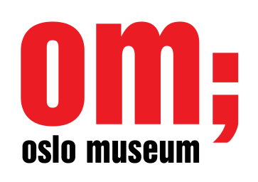

This overview is based on this XML output of the GLAMorous tool d.d. 01-03-2024.
It was generated using the GLAMorousToHTML code.
Also see the documentation of this tool.
This data is also available as an Excel file. More structured data formats (csv, json) will be added in the future.
Available languages
Nynorsk (2.968)
English (1.295)
Nynorsk (647)
Swedish (614)
Egyptian Arabic (563)
German (361)
Finnish (256)
Danish (234)
French (210)
Russian (207)
Arabic (196)
Spanish (152)
Dutch (143)
Italian (127)
Polish (100)
Persian (96)
Czech (76)
Portuguese (70)
Catalan (64)
Ukrainian (58)
Welsh (57)
Eastern Armenian (49)
South Azerbaijani (42)
Japanese (38)
Afrikaans (32)
Korean (32)
Hungarian (24)
Indonesian (24)
Hebrew (23)
Turkish (23)
Esperanto (19)
Serbian (18)
Slovene (18)
Standard Estonian (17)
Basque (16)
Chinese (14)
Greek (14)
Malagasy (14)
Vietnamese (12)
Belarusian (11)
Bulgarian (10)
Ido (10)
Romanian (9)
West Frisian (9)
Latvian (7)
Asturian (6)
Galician (6)
Georgian (6)
Aragonese (5)
Icelandic (5)
Latin (5)
Lithuanian (5)
Malayalam (5)
Bangla (4)
Bosnian (4)
Piedmontese (4)
Slovak (4)
Uzbek (4)
Volapük (4)
Albanian (3)
Azerbaijani (3)
Faroese (3)
Inari Sami (3)
Irish (3)
Kotava (3)
Luxembourgish (3)
Macedonian (3)
Northern Sami (3)
Thai (3)
Breton (2)
Cantonese (2)
Hindi (2)
Igbo (2)
Kazakh (2)
Low Eastern Saxon (2)
Marathi (2)
Occitan (2)
Serbo-Croatian (2)
Sorani (2)
Tamil (2)
Telugu (2)
Bavarian (1)
Burmese (1)
Cebuano (1)
Cornish (1)
Interlingua (1)
Interlingue (1)
Kashubian (1)
Khmer (1)
Kinyarwanda (1)
Kurmanji (1)
Maithili (1)
Malay (1)
Minnan (1)
Mongolian (1)
Nepali (1)
Papiamento (1)
Punjabi (1)
Sindhi (1)
Swahili (1)
Tajik (1)
Venda (1)
Võro (1)
Walloon (1)
Western Armenian (1)
Zulu (1)
Nynorsk (2.968)
17._mai_(grunnlovsdag) |
1704_i_Norge |
A.H._Winsnes |
A._C._Bonnevie |
A._Stokstad_&_Co |
Aagot_Børseth |
Aagot_Didriksen |
Aagot_Nissen |
Aars_og_Voss’_skole |
Aase_Bjerkholt |
Aase_Bye |
Aase_Foss_Abrahamsen |
Aase_Lionæs |
Aase_Nordmo_Løvberg |
Aaslaug_Aasland |
Aasta_Hansteen |
Abel_Seyler |
Abelhaugen |
Abildgaards_gate_(Oslo) |
Abraham_Berge |
Abraham_Berges_regjering |
Ada_Haug |
Ada_Kramm |
Ada_Madssen |
Ada_Werring |
Adam_Christopher_Løvenskiold |
Adam_Hiorth_(forfatter) |
Adam_Hiorth_(forretningsmann) |
Adelsten |
Adjutant |
Adolf_Bredo_Stabell |
Adolf_Hoel |
Adolf_Indrebø |
Afrika_(TV-film) |
Aftenpostens_gullmedalje |
Agathe_Backer_Grøndahl |
Agdenes_kirke |
Agnete_(skuespill) |
Agnethe_Schibsted-Hansson |
Aiguillette |
Akerselva |
Akersgata_(Oslo) |
Akershusstranda_(gate) |
Aksel_Gresvig |
Aksel_Zachariassen |
Albert_Balchen |
Albert_Cammermeyer |
Albert_Lutuli |
Albert_von_Hanno |
Albin_Upp |
Aleksandra_Kollontaj |
Alette_Engelhart |
Alex_Brinchmann |
Alexander_Moissi |
Alexander_Schultz |
Alexander_den_store_(film) |
Alexandra_von_Munthe_af_Morgenstierne |
Alf_Andersen_(1928–1962) |
Alf_Blütecher |
Alf_Brodal |
Alf_Collett |
Alf_Cranner |
Alf_Harbitz |
Alf_Hartmann |
Alf_Hurum |
Alf_Larsen_Whist |
Alf_Prøysen |
Alfhild_Stormoen |
Alfred_Andersen-Wingar |
Alfred_Maurstad |
Alfred_Sinding-Larsen |
Alfred_Skar |
Alice_Mürer_Siem |
Allongeparykk |
Allround-NM_på_skøyter_1950_for_herrer |
Allround-NM_på_skøyter_1951_for_herrer |
Allround-NM_på_skøyter_1952_for_herrer |
Allround-NM_på_skøyter_1954_for_herrer |
Allround-NM_på_skøyter_1956_for_herrer |
Allround-NM_på_skøyter_junior |
Alma_Fahlstrøm |
Alna_teglverk |
Alpint_under_Vinter-OL_1952 |
Alv_Storheid_Langeland |
Alvdal_kirke |
Amalie_Døvle |
Amandaprisen |
Amandaprisen_1986 |
Amandaprisen_1987 |
Amandaprisen_1989 |
Amandaprisen_1990 |
Amandaprisen_1991 |
Amandaprisen_1995 |
Amandaprisen_1996 |
Amandaprisen_2001 |
Ambortius_Lindvig |
Amund_Raknerud |
Anatomisk_institutt_(UiO) |
Anders_Beer_Wilse |
Anders_Buraas |
Anders_Jahres_medisinske_pris |
Anders_Platou_Wyller |
Anders_Sandøe_Ørsted_Bull |
Anders_Svarstad |
Anders_Svor |
Andrea_Gram |
Andrea_Kristine_Ingeborg_Caspara_Møller |
Andreas_Aagaard_Kiønig |
Andreas_Aubert |
Andreas_Bjercke |
Andreas_Christian_Conradi |
Andreas_Haarklou |
Andreas_Isachsen |
Andreas_Jynge |
Andreas_Lauritz_Thune |
Andreas_Norland |
Andreas_Olai_Schei |
Andreas_Samuel_Krebs |
Andreas_Skartveit |
Andresen_(slekt_fra_Schleswig-Holstein) |
André_Engh |
Anita_Thallaug |
Anker_(slekt) |
Ankertorget |
Anna_Elisabeth_Westerlund |
Anna_Løchen |
Anna_Munch |
Anna_Rogstad |
Anne-Cath._Vestly |
Anne-Lise_Tangstad |
Anne-Lise_Wang |
Anne_Borg |
Anne_Grimdalen |
Anne_Karin_Elstad |
Anne_Maries_vei_(Oslo) |
Anselm_Liljeström |
Anton_Blumenthal_Petersen |
Anton_Fredrik_Klaveness_(1903–1981) |
Anton_Heiberg |
Anton_Julius_Sand |
Anton_Lædel |
Anton_Rosing |
Anton_Rønneberg |
Apoteket_Hjorten_i_Oslo |
Aprilsnarr |
Arbeidernes_Idrettsforbund |
Arbeidernes_Opplysningsforbund |
Arbeidernes_ungdomsfylking |
Arbeiderpartiet |
Arild_Brinchmann |
Arild_Widerøe |
Arild_Wikstrøm |
Arkeologiåret_1817 |
Arkeologiåret_1872 |
Arkeologiåret_1877 |
Arkeologiåret_1894 |
Arkeologiåret_1931 |
Arkeologiåret_1955 |
Arkeologiåret_1966 |
Arkeologiåret_1973 |
Arkeologiåret_2011 |
Arkitekturåret_1833 |
Arkitekturåret_1847 |
Arkitekturåret_1856 |
Arkitekturåret_1864 |
Arkitekturåret_1876 |
Arkitekturåret_1878 |
Arkitekturåret_1893 |
Arkitekturåret_1910 |
Arkitekturåret_1921 |
Arkitekturåret_1932 |
Arkitekturåret_1940 |
Arkitekturåret_1977 |
Arnardo |
Arne_Bang-Hansen |
Arne_Bjørndal |
Arne_Christensen |
Arne_Durban |
Arne_Kavli |
Arne_Meidell |
Arne_Nygård-Nilssen |
Arne_Pausett |
Arne_Remlov |
Arne_Rockseth |
Arne_Skouen |
Arne_Sunde |
Arne_Svendsen |
Arnfinn_Vik |
Arno_Berg |
Arnold_Holmboe |
Arnoldus_Hille |
Arthur_David-Andersen |
Arthur_Olsen |
Arthur_Omre |
Arups_gate_(Oslo) |
Arve_Opsahl |
Arvid_Nilssen |
Asbjørn_Aamodt |
Asbjørn_Bryhn |
Asbjørn_Ruud |
Asbjørn_Toms |
Asbjørn_Wang |
Aschehoug |
Aschehoug_(slekt) |
Asgaut_Steinnes |
Asta_Nørregaard |
Astrid_Folstad |
Astrid_Herseth |
Astrid_Lous |
Astrid_Sandvik |
Astrup |
Aubert |
Aud_Richter |
Aud_Schønemann |
August_Christian_Mohr_(1847-1918) |
August_Eiebakke |
August_Lange |
August_Nielsen_(arkitekt) |
August_Oddvar |
August_Schønemann |
August_Wilhelm_Boesen |
Aukrust-modellen |
Aurora_i_blokk_Z |
Ave_Maria_(Valen) |
Avfall |
Avisbud |
Avisåret_1897 |
Avisåret_1899 |
Avisåret_1900 |
Avisåret_1913 |
Avisåret_1931 |
Avisåret_1938 |
Avisåret_1958 |
Avisåret_1982 |
Avisåret_1994 |
Axel_Heiberg |
Axel_Holst |
Axel_Kielland |
Axel_Krefting |
Axel_Krogh |
Axel_Otto_Normann |
Axel_Revold |
Axel_Seeberg |
Axel_Weebe |
Axel_Winge |
Babbis_Friis-Baastad |
Babill_Stray-Pedersen |
Backer |
Bagasje |
Bakka_kirke |
Bakkegata_(Oslo) |
Bakkehaugen_gård |
Balders_gate_(Oslo) |
Balkeby |
Balsfjord_kirke |
Baltazar_Sechmann_Fleischer |
Balthazar_Nicolai_Garben |
Barbara_Larssen |
Barbra_Ring |
Barne-TV_(NRK) |
Basarene |
Bautasteinen_på_Spinneren |
Beatmusikk |
Beauty_and_the_Beast_(sang) |
Bekkelaget_stasjon |
Bekkelagshøgda |
Bekker_i_Oslo |
Bekkestua |
Benedicte_Scheel |
Benjamin_Vogt |
Benjamin_Wegner |
Bennett_Reisebureau |
Bent_Røiseland |
Bente_Børsum |
Bentse_Brug |
Bentse_Teglverk |
Bentsebrua |
Bentsebrugata_(Oslo) |
Bentsegata_(Oslo) |
Beredent_artilleri |
Berent_Schanche |
Bergen_katedralskole |
Bergljot_Larsson |
Berit_Brænne |
Bernhard_Brænne |
Bernhard_Cathrinus_Pauss |
Bernhard_Getz |
Bernhof_Ribsskog |
Bernt_A._Nissen |
Bernt_Anker |
Bernt_Anker_Sverdrup |
Bernt_Arne_Lynge |
Bernt_Evensen |
Bernt_Johannessen |
Bernt_Lund |
Bernt_Oluf_Karlgård |
Bernt_Sverdrup_Maschmann |
Bertel_O._Steen |
Bertha_Ræstad |
Berthold_Grünfeld |
Betzy_Kjelsberg |
Big_Chief_Jazzband |
Birger_Anneus_Hall |
Birger_Bergersen |
Birger_Fjeld_Halvorsen |
Birger_Hønningstad |
Birger_Kildal |
Birger_Kildal_(redaktør) |
Birger_Knudsen |
Birger_Moss-Johnsen |
Birger_Nygaard-Østby |
Birger_Ruud |
Birigata_(Oslo) |
Birkenes_kirke |
Bislet_Teglverk |
Bislett_stadion |
Bispebrua |
Bjarne_Amdahl |
Bjarne_Buntz |
Bjarne_Engebret |
Bjarne_Jullum |
Bjarne_Nerem |
Bjartmar_Gjerde |
Bjerggaden_(Oslo) |
Bjølsen |
Bjølsen_Valsemølle |
Bjølsenfossen |
Bjørn_Bjørnson |
Bjørn_Gunnar_Braathen |
Bjørn_Hougen |
Bjørndaltrilogien |
Bjørneboe |
Bjørnepatruljen |
Bjørnstjerne_Bjørnson |
Blindern |
Blindern_Studenterhjem |
Blystadboligen |
Bodøsaken |
Bogstad_gård |
Bogstadveien_(Oslo) |
Bokken_Lasson |
Bokklubbens_levende_klassikere |
Bolette_Gjør |
Bonnevie_(slekt) |
Bonnevieprisen |
Borgen_(Oslo) |
Borghild_Langaard |
Borghild_Niskin |
Borgny |
Botsfengselet |
Botsfengselets_kirke |
Botten_Soot |
Brannen_i_Grue_kirke |
Brannvakten |
Brekke_kirke |
Briller |
Briskebyveien_(Oslo) |
Brita_Bigum |
British_American_Tobacco_Norway |
Britta_Lech-Hanssen |
Broch_(slekt) |
Broderkretsen_på_Havet |
Brudekjolen_(1914) |
Brugata_(Oslo) |
Brukskunst |
Bryllup |
Bryllupet_mellom_kronprins_Olav_og_prinsesse_Märtha |
Bryn_stasjon |
Brynjulf_Bergslien |
Brynjulf_Bull |
Brødrene_Hals |
Bukh |
Bull |
Bydel_Østensjø |
Bygdøy_kongsgård |
Bygdøy_sjøbad |
Bygdøynesveien_(Oslo) |
Bygningene_i_friluftsmuseet_på_Norsk_Folkemuseum |
Byløkke |
Bymarken |
Byutvidelser_i_Oslos_historie |
Bærums_Verk_hovedgård |
Bødtker |
Bøgh |
Børsa_kirke |
C.F.B._Schøyen |
C.J._Hambro |
C.N.R._Aamundsen |
Cally_Monrad |
Calmeyergatens_Misjonshus |
Caltex |
Camilla_Wicks |
Carl_A._Høyers_Stomatolfabrikk |
Carl_Abraham_Pihl |
Carl_Andreas_Fougstad |
Carl_Bernhard_Rosenberg |
Carl_Caspar_Riiber |
Carl_Christian_Wischmann |
Carl_Dørnberger |
Carl_E._Paulsen |
Carl_Ferdinand_Linthoe |
Carl_Frederik_Fearnley |
Carl_Frederik_Ferdinand_Stanley |
Carl_Frederik_Vogt |
Carl_Fredric_von_Breda |
Carl_Fredrik_Engelstad |
Carl_Fredrik_Holmboe |
Carl_Fredrik_Johannes_Bødtker |
Carl_Fredrik_Petlund |
Carl_Frithjof_Smith |
Carl_Hagman |
Carl_Johan_Anker |
Carl_Johan_Erichsen |
Carl_Julius_Lorch |
Carl_Ludvig_Jacobsen |
Carl_Marstrander |
Carl_Michalsen |
Carl_Paaske |
Carl_Peter_Lehmann |
Carl_Peter_Parelius_Essendrop |
Carl_Platou_(1885–1956) |
Carl_Schøyen |
Carl_Semb |
Carl_Struve |
Carl_Størmer |
Carl_Unger_(advokat) |
Carl_Wilhelm_Rubenson |
Carl_With |
Caroline_Colditz |
Carsten_Bruun |
Carsten_Byhring |
Carsten_Hopstock |
Carsten_Lütken |
Carsten_Tank_Nielsen_(1818–1892) |
Caspar_von_Cappelen |
Catharinus_Elling |
Cathinka_Guldberg |
Cecilie_Dahl_(maler) |
Central_Jamaat-e_Ahl-e_Sunnat |
Centrum |
Charles_Braude |
Charles_W._Strøm |
Cheval |
Christen_Eschildsen_Griis |
Christen_Finbak |
Christen_Magelssen |
Christensen_(slekt_fra_Gjerpen) |
Christian_August_Egeberg |
Christian_August_Lorentzen |
Christian_Cappelen |
Christian_Fredrik_Jacob_von_Munthe_af_Morgenstierne |
Christian_Gihbsson |
Christian_H._Grosch |
Christian_Hall |
Christian_IVs_sal |
Christian_Jensen_(båtbygger) |
Christian_Julius_Schou |
Christian_Krohg_(politiker) |
Christian_Krohgs_gate_(Oslo) |
Christian_L._Jensen |
Christian_Langaard |
Christian_Lasson |
Christian_Linthoe |
Christian_Meyer_Ross |
Christian_Michelsen |
Christian_Olsen |
Christian_Prahl_Reusch |
Christian_Reuter |
Christian_Sandal |
Christian_Schweigaard |
Christian_Selmer |
Christian_Sinding |
Christian_Skredsvig |
Christian_Stockfleth |
Christian_Sørenssen |
Christian_Tønsberg |
Christian_Vilhelm_Bergh |
Christian_Wisbech_(1869–1922) |
Christian_Zetlitz_Bretteville |
Christiania_Bank_og_Kreditkasse |
Christiania_Borgerskole |
Christiania_Folketheater |
Christiania_Glasmagasin |
Christiania_Seildugsfabrik |
Christiania_Spigerverk |
Christiania_Theater |
Christiania_Tivoli |
Christie |
Christinedal_-_Harry_Fetts_vei_10 |
Christopher_Borch |
Christopher_Hornsrud |
Christopher_Kahrs_Kielland |
Christopher_Knudsen |
Christopher_Tostrup |
Chrix_Dahl |
Cimitero_acattolico_di_Roma |
Cirkus_Verdensteater |
Clara_Mørch |
Clara_Ursin |
Clarion_Collection_Hotel_Gabelshus |
Claus_Berg |
Claus_Pavels |
Claus_Peter_Knudsen |
Club_7 |
Colbjørnsens_gate_(Oslo) |
Collett |
Collettgården |
Colletts_gate_(Oslo) |
Conrad_Arnesen |
Conrad_Langaard |
Conrad_Svendsen |
Constance_Bruun |
Constance_Wiel_Schram |
Coop_Norge |
Cuba-saken |
Cæciliaforeningen |
DS_«Bergensfjord»_(1913) |
DS_«Constitutionen» |
DS_«Framnæs_4» |
DS_«Kristianiafjord» |
Dagfin_Werenskiold |
Dagfinn_Hauge |
Dagfinn_Tveito |
Dagmar_Myhrvold |
Dagny_Bang |
Dagny_Haraldsen |
Dagny_Tande_Lid |
Dan_Fosse |
Dankert_Freilem |
Danmark_(øy) |
De_VI_olympiske_vinterleker_Oslo_1952 |
De_gamle_visene_–_bind_1-5 |
De_spurte_ikke_meg |
Dedichen |
Degernes_kirke |
Demarkasjonslinjen_i_1940 |
Den_Norske_Frimurerorden |
Den_Norske_Hesteskosømfabrik |
Den_Norske_Kunst_og_Industriutstilling_1883 |
Den_Norske_Store_Landsloge |
Den_glade_enke |
Den_norske_Nordhavsekspedisjon_1876–78 |
Den_norske_Strykekvartett |
Den_nye_verdenskeiser |
Den_tekniske_Forening |
Det_Ankerske_Waisenhus |
Det_Hvite_Bånd |
Det_Norske_Akademi_for_Språk_og_Litteratur |
Det_engelske_kvarter |
Det_første_Wedel-ministeriet |
Det_gule_chor |
Det_kongelige_hoff |
Det_kongelige_slott |
Det_norske_Theater |
Det_norske_institutt_i_Roma |
Det_rare |
Didi_Heiberg |
Didrik_Arup_Seip |
Diesen |
Dietrichson_(slekt) |
DigitaltMuseum |
Dikke_Eger |
Dokkveien_(Oslo) |
Domus_Juridica |
Donato_Brambani |
Doris_Johannessen |
Dovrehallen |
Down_Town_Key_Club |
Drammensveien_(Oslo) |
Drengstu’viser |
Dronninghavn |
Dukkemann |
Dverberg_kirke |
Dypfryser |
Dyre_Vaa |
Dødsfall_i_2001 |
Dødsfall_i_2002 |
Dødsfall_i_2003 |
Dødsfall_i_2004 |
Dødsfall_i_2005 |
Dødsfall_i_2006 |
Dødsfall_i_2007 |
Dødsfall_i_2008 |
Dødsfall_i_2009 |
Dødsfall_i_2011 |
Dødsfall_i_2012 |
Dødsfall_i_2013 |
Dødsfall_i_2019 |
Dødsfall_i_2021 |
Dødsfall_i_2023 |
EM_i_friidrett_1946_–_100_meter_kvinner |
EM_i_friidrett_1946_–_100_meter_menn |
EM_i_friidrett_1946_–_200_meter_kvinner |
EM_i_friidrett_1946_–_200_meter_menn |
EM_i_friidrett_1946_–_3000_meter_hinder_menn |
EM_i_friidrett_1946_–_400_meter_hekk_menn |
EM_i_friidrett_1946_–_400_meter_menn |
EM_i_friidrett_1946_–_800_meter_menn |
EM_i_friidrett_1946_–_Spydkast_kvinner |
EM_på_skøyter_1962,_menn |
EM_på_skøyter_1964,_menn |
EM_på_skøyter_1968,_menn |
Ebba_Isene |
Eckhoff |
Edderkoppen_(TV-episode) |
Edel_Eckblad |
Edel_Stenberg |
Edgar_B._Schieldrop |
Edith_Roger |
Edmund_Neupert |
Edvard_Befring |
Edvard_Beyer |
Edvard_Drabløs |
Edvard_Grieg |
Edvard_Myhre_Munch |
Edvarda_Lie |
Egeberg_(slekt_fra_Sjælland) |
Egebergs_Ærespris |
Egede-Nissen |
Egertorget_(Oslo) |
Eggert_Munch |
Egil_Hagen_(1912–2004) |
Egil_Johansen_(1934–1998) |
Egil_Kaare_Sundt |
Egil_Åsman |
Eidsvollsbygningen |
Eigil_Beck |
Eigil_Nansen |
Eilert |
Eilert_Sundt |
Eilert_Sundts_gate_(Oslo) |
Einar_Bergsland |
Einar_Diesen |
Einar_Engelstad_(arkitekt) |
Einar_Frogner |
Einar_Gerhardsen |
Einar_Gerhardsens_andre_regjering |
Einar_Gerhardsens_første_regjering |
Einar_Gerhardsens_tredje_regjering |
Einar_Lexow |
Einar_Li |
Einar_Rose |
Einar_Sigurd_Ween |
Einar_Sissener |
Einar_Skavlan |
Einar_Skjæraasen |
Einar_Smith |
Eindride_Slaatto |
Eivind_Berggrav |
Eivind_Engelstad |
Eivind_Nielsen |
Ejlert_Bjerke |
Ekeberg_gård_(Oslo) |
Ekeberg_krigskirkegård |
Ekebergkolonien |
Ekebergrestauranten |
Ekebergskrenten |
Ekely |
Ekman,_Smith_&_Michalsen |
Ekman_&_Smith |
Eksplosjonen_på_Grønlikaia |
Elgsletta_aktivitetspark |
Elias_Blix |
Elias_Nicolai_Reksten |
Elin_Prøysen |
Elisabeth_Granneman |
Elisabeth_Reiss |
Elisabeth_Scheel |
Elisabeth_Schweigaard_Selmer |
Elise_Sem |
Ella_Anker |
Ellef_Ringnes |
Ellen_Andrea |
Ellen_Brochmann |
Ellen_Gulbranson |
Ellen_Schytte-Jacobsen |
Ellendalens_Spinderi |
Elsa_Skjerven |
Else_Breen |
Else_Christie_Kielland |
Else_Heiberg |
Emanuel_Minos |
Emanuel_Winge |
Embetsmannsstaten |
Emil_Aubert |
Emil_Lie |
Emil_Torkildsen |
Emma_Matthiasen |
Emo_(selskap) |
Empirekvartalet |
Energi_i_Norge |
Enerhaugen |
Enige_og_tro_inntil_Dovre_faller |
Epålett |
Er_vi_her_ennå? |
Eric_Gustav_Tunmarck |
Erica_Darbow |
Erik_Andreas_Colban |
Erik_Bodom |
Erik_Brofoss |
Erik_Diesen |
Erik_Grønseth |
Erik_Herseth |
Erik_Krag |
Erik_Kristen-Johanssen |
Erik_Pløen |
Erik_Sture_Larre |
Erling_Drangsholt |
Erling_Krogh |
Erling_Merton |
Erling_Schiøtz |
Erling_Wikborg |
Ernest_Marini |
Ernest_Rude |
Ernst_Bjerknes |
Ernst_Glaser |
Ernst_Motzfeldt |
Ernst_Sars |
Esviken |
Et_døgn_uten_løgn |
Eugen_Skjønberg |
Eugenia_Kielland |
Eurovision_Song_Contest_1969 |
Eva_Lunde |
Eva_Scheer |
Eva_Seeberg |
Eva_Sletto |
Evald_Rygh |
Eventyrgården |
Eystein_Torkildsen |
Eyvind_Getz |
Eyvind_Moestue |
Fabritius_Gruppen |
Faderens_forbrydelse |
Falck_Ytters_plass_(Oslo) |
Falsen |
Fant_(film) |
Farmasøytisk_institutt_(UiO) |
Fattigstugangen_(Oslo) |
Faye_(slekt) |
Fearnley_(slekt) |
Fearnleys_olympiske_ærespris |
Fedrelandslaget |
Feier |
Femmila_i_Holmenkollen |
Ferdinand_Finne |
Ferdinand_Jonas_Gjøs |
Ferdinand_Julian_Egeberg |
Feriekoloni |
Ferje |
Festningsplassen_(Oslo) |
Filmåret_1910 |
Filmåret_1911 |
Filmåret_1916 |
Filmåret_1920 |
Filmåret_1921 |
Filmåret_1930 |
Filmåret_1973 |
Filmåret_2001 |
Filosofgangen_(Oslo) |
Filosofiåret_1887 |
Filosofiåret_1963 |
Filosofiåret_1975 |
Finn_Carling |
Finn_Eriksen |
Finn_Frederik_Wilhelm_Wedel-Jarlsberg |
Finn_Krafft |
Finn_Lied |
Finn_Moe |
Finne_(slekt) |
Firda_videregående_skole |
Fjeldhus_Bruk |
Fjols_til_fjells |
Fjærland_kirke |
Flaskekasse |
Flateby |
Fleischer |
Fleksnes_fataliteter |
Flisberget_(Oslo) |
Flukten_fra_Oslo_etter_9._april_1940 |
Flå_kirke_(Buskerud) |
Foldereid_kirke |
Folkebladet_(1880–1921) |
Folkman_Schaanning |
For_sin_kjærlighets_skyld |
Foss_videregående_skole |
Fotografi |
Fougner_(slekt) |
Framneshaven_(Tinker’n) |
Francesco_Cetti |
Francis_Bull |
Francis_Hagerup |
Francis_Irgens |
Francis_Sønnichsen |
Frank_Hansen |
Fred._Olsen_(1857–1933) |
Fred._Olsen_(1929–) |
Frederik_Bekkevold |
Frederik_Christian_Lindeman |
Frederik_Collett |
Frederik_Hilfling-Rasmussen |
Frederik_Klem |
Frederik_Motzfeldt |
Frederik_Petersen |
Frederik_Rode |
Frederik_Wilhelm_Treschow |
Frederiks_gate_(Oslo) |
Frederiks_gate_3 |
Fredrik_Christian_Wildhagen |
Fredrik_Gade |
Fredrik_Glad |
Fredrik_Herman_Gade |
Fredrik_Mellbye |
Fredrik_Parelius |
Fredrik_Peter_Brandt |
Fredrik_Peter_Leganger_Næser |
Fredrik_Scheel |
Fredrik_Thoresen |
Fredrik_Ursin |
Fredrik_Vogt |
Fredrikke_Nielsen |
Freia |
Freiaparken |
Frelsesarmeen |
Fremad_marsj! |
Friderich_Adolph_Schleppegrell |
Fridtjof_Backer-Grøndahl |
Fridtjof_Heyerdahl |
Fridtjov_Birkeli |
Friedrich_Grüner |
Frigjøringsdagen_(Norge) |
Frimann_Falck_Clausen |
Frimurernes_Sangforening |
Frisinnede_Venstre |
Frithjof_Fearnley |
Frithjof_Ingier |
Frithjof_M._Plahte |
Frithjof_Smith-Hald |
Frits_Hansen |
Frits_Thaulow |
Fritz_Huitfeldt_(1851–1938) |
Fritz_Lütcherath |
Fritz_Rustad |
Frogner_Hovedgård |
Frogner_stadion |
Frognerparken |
Frognerseteren |
Fru_Biksby_og_skinnkåpen |
Fru_Inger_til_Østråt_(film) |
Fru_Ragna_Nielsens_skole |
Frydenlund_(kurssted) |
Frydenlund_Bryggerier |
Frøen_stasjon |
Frølich_(slekt) |
Frønsvollen |
Funksjonalisme_(arkitektur) |
Funny_Boys |
Fyllingen_(Nordmarka) |
G.C.Rieber_&_Co |
Gabriel_Gustafson |
Gabriel_Kielland_(1871–1960) |
Gabriel_Moseid |
Gabriel_Skagestad |
Gade_(slekt) |
Gallauniform |
Gamle_Aker_kirke |
Gamle_Logen |
Gamle_Norges_Bank |
Gamle_Tollbod |
Geir_Kjetsaa |
Geitabru |
Geitastrand_kirke |
Gemini_Records |
Georg_Carl_Buonaparte_Heyerdahl |
Georg_Frederik_Christopher_Fasting |
Georg_Jacob_Bull |
Georg_Johan_Sverdrup |
Georg_Løkkeberg |
Georg_Ossian_Sars |
Georg_Prahl_Harbitz |
Georg_Waaler |
Georg_Wasmuth_Sejersted |
Gerd_Grieg |
Gerd_Nyquist |
Gerda_Christophersen |
Gerda_Ring |
Gerhard_Schjelderup |
Gerhardsen |
Gert_Jynge |
Gidske_Anderson |
Gipsmaker |
Gisken_Wildenvey |
Gisle_Straume |
Gjerdingen |
Gjerdrums_vei_(Oslo) |
Gjermund_Eggen |
Gjerstad_kirke_(Agder) |
Gjertsens_skole |
Gjettum_skole |
GlasMagasinet |
Gram_(slekt) |
Gran_(slekt) |
Grand_Hotel_(Oslo) |
Granstangen_(Oslo) |
Gravfølge |
Grefsen |
Grefsen_Folkesanatorium |
Grefsenkollveien_(Oslo) |
Grefsensetra |
Grefsenåsen_kapell |
Gregers_Fougner_Lundh |
Grensen_(Oslo) |
Gressbanen_(Oslo) |
Gressholmen_sjøflyhavn |
Greta_Molander |
Grete_Brunvoll |
Grete_Nordrå |
Grethe_Kausland |
Greve_(slekt) |
Grieg_(slekt) |
Grimsrød_gård |
Grini_fangeleir |
Gråkamveien_(Oslo) |
Grønlandsleiret_(Oslo) |
Grønlia |
Grünerbrua |
Gud_signe_vårt_dyre_fedreland |
Gud_wære_med_os-gården |
Gudmund_Hoel |
Gunder_Gundersen |
Gunnar_Høst |
Gunnar_Janson |
Gunnar_Larsen |
Gunnar_Neels-Hansson |
Gunnar_Raabe |
Gunnar_Reiss-Andersen |
Gunnar_Røstad |
Gunnar_Utsond |
Gunnar_Wefring |
Gurdwara_Sri_Guru_Nanak_Dev_Ji |
Guro_(bok) |
Gustav_Emil_Holter |
Gustav_Fr._Lange |
Gustav_Guldberg_(1897–1938) |
Gustav_Thomassen |
Gutorm_Gjessing |
Guy_Krohg |
Gyda_Christensen |
Gyldenløves_gate_(Oslo) |
Gyrihaugen |
Gøril_Havrevold |
H._Ludin_Jansen |
Haagen_Ringnes |
Haaken_Hasberg_Gran |
Haakon_Dahlstrøm |
Haakon_Ditlef_Lowzow |
Haakon_Hansen |
Haakon_Lie |
Haakon_Schønning |
Haakon_Shetelig |
Haakon_VII |
Haakon_VIIs_gate_(Oslo) |
Haakon_Vigander |
Haavard_Martinsen |
Hajnnhojnn_i_bajnn_og_13_andre_trønderviser |
Halde |
Haldis_Halvorsen |
Halfdan_Christensen |
Halfdan_Ditlev-Simonsen |
Halfdan_Egedius |
Halfdan_Gyth_Dehli |
Halfdan_Hegtun |
Halfdan_Kjerulf |
Halfdan_Møller |
Halfdan_Petterøe |
Halfdan_Rode |
Halfdan_Strøm |
Hallings_skole |
Halvard_Bachke |
Halvard_Hoff |
Halvard_Kausland |
Halvard_Lange |
Halvdan_Eyvind_Stokke |
Halvdan_Koht |
Halvdan_Svartes_gate_(Oslo) |
Halvor_Haagensen_Blinderen |
Halvor_Heyerdahl_Rasch |
Halvor_P._Eggan |
Halvor_Solberg |
Halvor_Vreim |
Hammeren_(Maridalen) |
Hammersborg |
Hammersborg_skole |
Hammersborg_torg |
Hannah_Ryggen |
Hanne_Skram |
Hans_Aall |
Hans_Aas |
Hans_Aimar_Mow_Grønvold |
Hans_Amundsen |
Hans_Arnt_Hartvig_Paulsen |
Hans_Backer_Fürst |
Hans_Bille |
Hans_Bovim |
Hans_Christian_Petersen |
Hans_Edvard_Wisløff |
Hans_Ernst_von_Tritzschler |
Hans_Faye |
Hans_Geelmuyden_(1844–1920) |
Hans_Gulbranson |
Hans_Hansen_Grimelund |
Hans_Heiberg |
Hans_Holmen |
Hans_Holten |
Hans_Horn |
Hans_Høegh |
Hans_Ingi_Hedemark |
Hans_Jacob_Nilsen |
Hans_Jæger |
Hans_Kirkegaard_Fleischer |
Hans_Krag |
Hans_Nielsen_Høeg |
Hans_Nysom |
Hans_Ording |
Hans_Peter_L’Orange_(professor) |
Hans_Rasmus_Astrup_(1831–1898) |
Hans_Ryggen |
Hans_Thomas_Meinich |
Hans_Thoresen |
Hans_Thøger_Winther |
Hans_Wiers-Jenssen |
Hans_bryllupsnat |
Hans_Østerholt |
Hansson_(slekt_fra_Trondheim) |
Hansteen_(slekt) |
Hansteens_gate_(Oslo) |
Harald_Bertrand |
Harald_Gram |
Harald_Grieg |
Harald_Hals |
Harald_Heide_Steen |
Harald_Hårdrådes_plass_(Oslo) |
Harald_Juell |
Harald_Meltzer |
Harald_Nicolai_Storm_Wergeland |
Harald_Nielsen |
Harald_Olaf_Hugo_Hals |
Harald_Olsen |
Harald_Otto |
Harald_Pedersen_(embedsmann) |
Harald_Salvesen |
Harald_Smedal |
Harald_Steen |
Harald_Sund |
Harald_Sverdrup |
Harald_Tusberg |
Harald_Vindalen |
Harald_Wedel-Jarlsberg |
Harald_Wergeland_(1904–89) |
Harbitz_(slekt) |
Harelabbveien_(Oslo) |
Harry_Fett |
Harry_Kvebæk |
Hartmann_(slekt) |
Hartvig_Bache-Wiig |
Hartvig_Marcus_Lassen |
Hartvig_Nissens_skole |
Haugerud_skole_(Sogn) |
Hausmanns_bru |
Havnelageret |
Heddy_Astrup |
Hedevig_Lund |
Heftyebakken_(Oslo) |
Hegdehaugsveien_(Oslo) |
Hegvik_kirke |
Heibergs_gate_(Oslo) |
Heide_(slekt) |
Heimferd |
Heinrich_Jürgensen |
Helene_Andersen |
Helene_Gundersen |
Helga_Backe |
Helga_Eng |
Helga_Helgesen |
Helga_Stene |
Helge_Hagerup |
Helge_Ingstad |
Helge_Refsum |
Helge_Reiss |
Helge_Rønning |
Helge_Sivertsen |
Helsedirektoratet_(1945–1993) |
Helsfyr |
Heltzen |
Helvetesdebatten |
Henie_Onstad_Kunstsenter |
Henki_Kolstad |
Henning_Astrup_(1864–1896) |
Henning_Mørland |
Henny_Moan |
Henny_Mürer |
Henny_Skjønberg |
Henriette_Bie_Lorentzen |
Henriette_Pauss |
Henriette_Schønberg_Erken |
Henriette_Wegner |
Henriette_Wegners_paviljong |
Henrik_Ameln |
Henrik_Anker_Bjerregaard |
Henrik_Backer |
Henrik_Børseth |
Henrik_Dedichen |
Henrik_Finne_(kunstner) |
Henrik_Grosch |
Henrik_Groth |
Henrik_Heftye |
Henrik_Hille |
Henrik_Homan |
Henrik_Ibsen |
Henrik_Klausen |
Henrik_Laurentius_Helliesen |
Henrik_Lund |
Henrik_Lundh |
Henrik_Nissen_d.y. |
Henrik_Sørensen |
Henrik_Thrap-Meyer |
Henrik_Wergelands_allé_(Oslo) |
Henry_Imsland |
Henry_Røsoch |
Herdis_Holmboe |
Herkules_Confektionsfabrikker |
Herman_Backer |
Herman_Fleischer_Høst |
Herman_G._Gade |
Herman_Hansen |
Herman_Johan_Foss_Reimers |
Herman_L._Løvenskiold |
Herman_Wedel-Jarlsberg |
Herman_Wedel-Jarlsberg_(1818–1888) |
Hermann_Bongard |
Herold |
Heyerdahl |
Hidra_kirke |
Hilda_Fredriksen |
Hildur_Nilsen |
Hjalmar_Andersen |
Hjalmar_Broch |
Hjalmar_Christian_Hauge |
Hjalmar_Haalke |
Hjalmar_Heiberg |
Hjalmar_Kielland_Wergeland |
Hjalmar_Krag |
Hjalmar_S._Bakstad |
Hjalmar_Welhaven |
Hjemmestyrkene |
Hjort_(slekt) |
Hjortnes |
Hjula_Væverier |
Hof_kirke_(Åsnes) |
Hoffjegermester |
Holger_Collett |
Holger_Sinding-Larsen |
Holmboe |
Holmenkollbakken |
Holmenkollen_Skifestival |
Holmenkollmedaljen |
Holmenkollstafetten |
Holmens_gate_(Oslo) |
Holmsen |
Holocaust_i_Norge |
Holtangården_(Oslo) |
Holtegata_(Oslo) |
Honoria_Dietrichson |
Hopstock |
Hordaland |
Horten |
Horten_ingeniørhøgskole |
Horten_kirke |
Hospitalsgata_(Oslo) |
Hotel_Bristol_(Oslo) |
Houens_fonds_diplom |
Hovin_Teglverk |
Hovinbekken |
Hovseter |
Hroar_Dege |
Hugo_Lous_Mohr |
Hugo_Munthe-Kaas_(1879) |
Hugo_Wathne |
Huitfeldt |
Huitfeldts_gate_(Oslo) |
Hulda_Szaciński |
Huldreveien_(Oslo) |
Hurtigløp_på_skøyter_under_Vinter-OL_1928 |
Hurtigløp_på_skøyter_under_Vinter-OL_1952 |
Hurtigløp_på_skøyter_under_Vinter-OL_1960_–_1500_meter_menn |
Husmor |
Husmorskole |
Hval_kirke |
Hvervenbukta |
Håkon_Christie |
Håkon_Gundersen |
Håkon_Kyllingmark |
Håkon_Vestly |
Håndverkeren_(Oslo) |
Håndverksfag_og_håndverksteknikker |
Hårda_viljor |
Hægebostad_kirke |
Høegh |
Hølandsgata_(Oslo) |
Hølonda_kirke |
Hønefoss_kirke_(1862–2010) |
Hønse-Lovisa |
Høvik |
Høybråten_(Oslo) |
Høyesterettsjustitiarius |
Høyre |
Høytorp_fort |
I_en_sprukken_rønne_nedi_Vika |
Ibsen_(slekt_fra_Stege) |
Ida_Wedel_Jarlsberg |
Immanuel_Ottesen |
Immanuels_kirke |
Incognito_løkke |
Indremisjon |
Industrigata_(Oslo) |
Inga_Bjørnson |
Inga_Bucher |
Inga_Jacobi |
Inga_Lærum_Liebich |
Inge_Debes |
Ingeborg_Krafft |
Ingeborg_Margrethe_von_Haffner |
Ingeborg_Møller |
Ingeborg_Steffens |
Ingeborgs_gate_(Oslo) |
Ingebrigt_Davik |
Inger_Alver_Gløersen |
Ingier_(slekt) |
Ingierstrand_bad |
Ingjald_Haaland |
Ingjald_Reichborn-Kjennerud_(1901–81) |
Ingrid_Bjerkås |
Ingrid_Wigernæs |
Ingvald_Maryllus_Emil_Smith-Kielland |
Ingvald_Ulveseth |
Institutt_for_musikkvitenskap |
Irma_Salo_Jæger |
Issay_Dobrowen |
Ivar_Aavatsmark |
Ivar_F._Andresen |
Ivar_Johnsen |
Ivar_Knutson |
Ivar_Lo-Johansson |
Ivar_Lykke |
Ivar_Lykkes_regjering |
Ivar_Medaas |
Ivar_Næss |
Ivar_Onsum |
Ivar_Welle |
Iver_Holter |
Ivo_Caprino |
J.L._Aamundsen |
Jack_Fjeldstad |
Jacob_Aall_Bonnevie |
Jacob_Aalls_gate_(Oslo) |
Jacob_Aars |
Jacob_Andreas_Christian_Faye |
Jacob_Calmeyer |
Jacob_Christie_Kielland |
Jacob_Dybwad |
Jacob_Hvinden_Haug |
Jacob_Kielland_Sømme |
Jacob_Rasch |
Jacqueline_du_Bief |
Jakhelln_(slekt) |
Jakob_Friis |
Jakob_Vaage |
Jakob_Weidemann |
James_Collett_(1728–1794) |
James_Maroni |
Jan_Christian_Johanssen |
Jan_Pande-Rolfsen |
Jan_Wessel |
Jan_Wølner |
Janka_Polanyi |
Janny_Grip_Isachsen |
Janteloven |
Jar_kirke |
Jazz_i_Norge |
Jenny_Sandberg_Bjørnson |
Jens-Anton_Poulsson |
Jens_Bjørneboe |
Jens_Bolling |
Jens_Fredrik_Schroeter |
Jens_Frølich_Tandberg |
Jens_Gran |
Jens_Holmboe_(1880–1943) |
Jens_Hundseid |
Jens_Hundseids_regjering |
Jens_Mathias_Pram_Kaurin |
Jens_Munthe_Svendsen |
Jens_Peter_Broch |
Jens_Schive |
Jens_Schow_Fabricius |
Jens_Teigen |
Jens_von_der_Lippe |
Jernbanegata_(Oslo) |
Jernbanetorget_(Oslo) |
Jess_Anker |
Jesuittparagrafen |
Jo_Benkow |
Jo_Tenfjord |
Jo_Vestly |
Joachim_Frich |
Joachim_Rønneberg |
Joakim_Lehmkuhl |
Jobu |
Johan_Backer_Lunde |
Johan_Bernhard_Hjort |
Johan_Bertrand_Narvesen |
Johan_Brun |
Johan_Carl_Keyser |
Johan_Christian_Castberg |
Johan_Collett |
Johan_Diederich_Behrens |
Johan_Ellefsen_(arkitekt) |
Johan_Frederik_Thaulow_(lege) |
Johan_Gottfried_Conradi_(lege) |
Johan_Grundt_Tanum |
Johan_Gunder_Adler |
Johan_Gørbitz |
Johan_Haanes |
Johan_Halvorsen |
Johan_Hauge |
Johan_Hennum |
Johan_Henrik_Andresen_(1815–1874) |
Johan_Henrik_Wiers-Jenssen |
Johan_Jacob_Bennetter |
Johan_Lauritz_Bidenkap |
Johan_Lauritz_Sundt |
Johan_Lausen_Bull |
Johan_Ludwig_Mowinckel |
Johan_Ludwig_Mowinckels_første_regjering |
Johan_Ludwig_Mowinckels_tredje_regjering |
Johan_Martin_Wisløff |
Johan_Mellbye |
Johan_Nicolaysen |
Johan_Nordhagen |
Johan_Nygaardsvold |
Johan_Nygaardsvolds_regjering |
Johan_Randulf_Bull |
Johan_Scharffenberg |
Johan_Schreiner |
Johan_Sebastian_Welhaven |
Johan_Selmer |
Johan_Steen |
Johan_Storjohann |
Johan_Storm_Aubert_Hjort |
Johan_Storm_Munch_(arkitekt) |
Johan_Svendsen |
Johan_Vestly |
Johan_Wilhelm_Huus-Hansen |
Johan_Wilhelm_Michelet |
Johanna_Bugge_Berge |
Johanne_Brun |
Johanne_Dybwad |
Johanne_Mathilde_Dietrichson |
Johanne_Regine_Reimers |
Johanne_Reutz_Gjermoe |
Johanne_Vogt_Lie |
Johanne_Voss |
Johannes_Arneson |
Johannes_Berg_Thrane |
Johannes_Bergh_(1837–1906) |
Johannes_Brun |
Johannes_Eckhoff |
Johannes_Flintoe |
Johannes_Haarklou |
Johannes_Heftye_(1792–1856) |
Johannes_Heimbeck |
Johannes_Irgens |
Johannes_Irgens_Strømme |
Johannes_Markus_Holmsen |
Johannes_Ording |
Johannes_Petter_Lindegaard |
Johannes_Sejersted_Bødtker |
Johannes_Steen |
Johannes_kirke |
Johannes_menighet |
Johannesgata_(Oslo) |
John_Collett_(1758–1810) |
John_Gabriel_Borkman |
John_Oscar_Egeland |
John_Tverdahl |
John_Wolden |
Johnny_Bergh |
Johs._Andenæs |
Johs._Rian |
Jonas_Axel_Boeck |
Jonas_Brunvoll |
Jonas_Collett |
Jonas_Schanche_Jonasen |
Jordalgata_(Oslo) |
Joronn_Sitje |
Jorunn_Kirkenær |
Josefines_gate_(Oslo) |
Joseph_Frantz_Oscar_Wergeland |
Josephine_Thrane |
Jubileumsutstillingen_på_Frogner_1914 |
Juletre |
Juletrefest |
Juliane_Vilhelmine_Benzon |
Julie_Lampe |
Julius_Hougen |
Julius_Jakhelln_(1832–1919) |
Julius_Middelthun |
Julius_Nicolaysen |
Just_Gude-Smith |
Jørgen_Breder_Stang |
Jørgen_Gjerdrum |
Jørgen_Juve |
Jørgen_Scheel |
Jørgen_Skeel |
Jørgen_Wright_Cappelen_II |
Jørn_Ording |
Jøtul_(selskap) |
KNA-hotellet_i_Oslo |
Kabinettsekretær |
Kaffistova |
Kaja_Norena |
Kalle_Løchen |
Kampen_om_tungtvannet_(film) |
Kampens_friluftsbad |
Kanten_(gate) |
Kantine |
Kaos_og_Bjørnar |
Kapitulasjonsavtalen_1940 |
Kaptein_Sorte_Bill |
Kardemommeloven |
Karen-Marie_Flagstad |
Karen_Elieson |
Karen_Holtsmark |
Karen_Wedel-Jarlsberg |
Karenslyst |
Kari |
Kari_Borg_Mannsåker |
Kari_Diesen |
Kari_Simonsen |
Kari_Skjønsberg |
Karin_Beate_Vold |
Karl_Aagaard_Østvig |
Karl_Andersen_(musiker) |
Karl_Anderson |
Karl_Bilgrei |
Karl_Edvard_Diriks |
Karl_Evang |
Karl_Holter |
Karl_Høgberg |
Karl_Johan-kvartalet |
Karl_Johans_gate |
Karl_Kildal |
Karl_Meyer |
Karl_Nissen |
Karl_den_XIIs_gate |
Karsten_Alnæs |
Kasper_Idland |
Kassasjon |
Kaste_på_stikka |
Kastellveien_(Oslo) |
Katnosa_gård |
Katti_Wankel |
Kejser_og_Galilæer |
Ketil_Askildt |
Kilebygda_kirke |
Kinopaleet |
Kirkegården_ved_havet |
Kirkegårdsgangen_(Oslo) |
Kirsten_Heiberg |
Kirsten_Langbo |
Kirsten_Monrad-Aas |
Kirsten_Sørlie |
Kirsti_Sparboe |
Kistrand_kirke |
Kitty_Kielland |
Kjell_Almskog |
Kjell_Andreassen |
Kjell_Aukrust |
Kjell_Bækkelund |
Kjell_Thue |
Kjemisk_institutt_(UiO) |
Kjennemerke_for_motorkjøretøy_i_Norge |
Kjerringa_som_ble_så_lita_som_ei_teskje |
Kjærlighetsstien_(Oslo) |
Kjølberggata_(Oslo) |
Klatremus_og_de_andre_dyrene_i_Hakkebakkeskogen |
Klattiklatt_drar_til_negerland |
Klaus_Hansen |
Klaveness_(slekt) |
Klemetsrud_skole |
Klessnor |
Klesvask |
Klingenberg_kino |
Klingenberggata_(Oslo) |
Klipp_fra_«Prospektkort»-serien |
Knivsø_herskapshus |
Knud_Bergslien |
Knud_Bull |
Knud_Graah |
Knud_Karl_Krogh-Tonning |
Knud_Knudsen_(fotograf) |
Knut_Andersen_(fotballspiller) |
Knut_Berg_(kunsthistoriker) |
Knut_Blom |
Knut_Fægri |
Knut_Greve |
Knut_Gribb |
Knut_Gysler |
Knut_Hamsun |
Knut_Haukelid |
Knut_Hergel |
Knut_Meling |
Knut_Riisnæs |
Knut_Risan |
Knut_Robberstad |
Knut_Ødegård |
Kolbjørn_Buøen |
Kommunestyrevalget_1910 |
Kommunestyrevalget_1934 |
Kommunestyrevalget_1945 |
Konditor |
Kong_Olav_(oratorium) |
Kongelig_Norsk_Automobilklub |
Kongelige_biler_i_Norge |
Kongens_gate_(Oslo) |
Kongepokalvinnere_i_friidrett_for_menn |
Kongshavn |
Konrad_Nordahl |
Konservatisme |
Kontrær |
Koren |
Kornbånd |
Krag_(slekt_fra_Trøndelag) |
Kranes_konditori |
Kranselag |
Kravatt |
Kretsen |
Krigskorset |
Kristen_Andersen |
Kristen_Arnesen |
Kristen_Holbø |
Kristen_Kvello |
Kristen_Rivertz |
Kristian_Birkeland |
Kristian_Brandt |
Kristian_Hauger |
Kristian_Laake |
Kristian_Welhaven |
Kristian_Østberg |
Kristiania-bohemen |
Kristiansand_børs |
Kristine_Bonnevie |
Kristofer_Lehmkuhl |
Krog |
Krohgstøtten |
Krokkleiva |
Krokskogen_(Oslomarka) |
Krølle_Kro |
Kullmann-saken |
Kulturdepartementets_priser_for_barne-_og_ungdomslitteratur |
Kunden_har_alltid_rett |
Kunstnernes_restaurant_Blom |
Kunståret_1822 |
Kunståret_1882 |
Kunståret_1886 |
Kunståret_1898 |
Kunståret_1899 |
Kunståret_1900 |
Kunståret_1901 |
Kunståret_1903 |
Kunståret_1904 |
Kunståret_1910 |
Kunståret_1920 |
Kunståret_1921 |
Kunståret_1961 |
Kunståret_1962 |
Kunståret_1967 |
Kunståret_1973 |
Kunståret_1982 |
Kunståret_1990 |
Kunståret_1993 |
Kunståret_1998 |
Kunståret_1999 |
Kunståret_2001 |
Kved_opp,_Guds_folk,_syng_høgt_i_kor |
Kvinnelig_stemmerett |
Kværner_(selskap) |
Kværner_Brug |
Kåre_D._Tønnesson |
Kåre_Orud |
L.W.Th._Bratz |
Ladegangene_(Oslo) |
Lagertha_Munthe |
Laila_Dalseth |
Lakkegata_(Oslo) |
Lallakroken_(Oslo) |
Landsmøte |
Lange_(etternavn) |
Langleiken_(Oslo) |
Langset_kirke |
Lars_Backer |
Lars_Evensen |
Lars_Jorstad |
Lars_Nordrum |
Lars_Roverud |
Lars_Tvinde |
Lasse_Segelcke |
Laura_Gundersen |
Laurits |
Lauritz_Bergendahl |
Lauritz_Bergendahls_gate_(Stavanger) |
Lauritz_Dorenfeldt |
Lauritz_Stub_Wiberg |
Lavik_kirke |
Leiegårdene_i_Oslos_historiske_murby |
Leif_Amble-Næss |
Leif_Andreas_Larsen_(1898–1978) |
Leif_Enger |
Leif_Halvorsen |
Leif_Høegh |
Leif_Juster |
Leif_Omdal |
Leif_Sundt_Rode |
Leiv_Aalen |
Leiv_Harang |
Leiv_Kreyberg |
Lensvik_kirke |
Leonardstatuetten |
Leonora_Selmer |
Leuch |
Lev_farlig |
Liadalen_(Oslo) |
Lilla_Hansen |
Lille_Frøen_gård |
Lille_Idas_blomster |
Lille_Kirkebakke_(Oslo) |
Lilleaker |
Lillebil_Ibsen |
Lilleborg_gård |
Lilleborg_skole |
Lillebror_og_Knerten |
Lillemor_von_Hanno |
Lilletorget_(Oslo) |
Lillienskiold |
Lilly_Bølviken |
Lindeman_(slekt) |
Linn_Stokke |
Lisa_Kristoffersen |
Liste_over_Norges_kirke-_og_undervisningsministre |
Liste_over_Norges_revisjonsministre |
Liste_over_Norges_statsministre |
Liste_over_eidsvollsmenn |
Liste_over_forfattere_i_Norsk_Salmebok_2013 |
Liste_over_kirker_i_Oslo |
Liste_over_kjente_sarpinger |
Liste_over_kulturminner_i_Asker |
Liste_over_kulturminner_i_Bærum |
Liste_over_kulturminner_i_Kongsvinger |
Liste_over_kulturminner_i_Marka_(Oslo) |
Liste_over_kulturminner_i_Sentrum_(Oslo) |
Liste_over_kulturminner_i_bydel_Bjerke |
Liste_over_kulturminner_i_bydel_Frogner |
Liste_over_kulturminner_i_bydel_Grünerløkka |
Liste_over_kulturminner_i_bydel_Nordre_Aker |
Liste_over_kulturminner_i_bydel_St._Hanshaugen |
Liste_over_kulturminner_i_bydel_Vestre_Aker |
Liste_over_kulturminner_i_bydel_Østensjø |
Liste_over_kunstverk_på_norske_frimerker |
Liste_over_lagtingspresidenter |
Liste_over_mottakere_av_Nobels_fredspris |
Liste_over_norgesmestere_i_langrenn |
Liste_over_odelstingspresidenter |
Liste_over_ordførere_i_Aker |
Liste_over_ordførere_i_Bærum |
Liste_over_ordførere_i_Drammen |
Liste_over_ordførere_i_Engerdal |
Liste_over_ordførere_i_Kolvereid |
Liste_over_personer_fra_Oslo |
Liste_over_presidenter_i_Norges_Skøyteforbund |
Liste_over_stasjoner_på_T-banen_i_Oslo |
Liste_over_statsledere_i_1959 |
Liste_over_statsledere_i_1960 |
Liste_over_statsledere_i_1961 |
Liste_over_statsledere_i_1962 |
Liste_over_stortingsrepresentanter_1954–1957 |
Liste_over_stortingsrepresentanter_1958–1961 |
Liste_over_stortingsrepresentanter_1961–1965 |
Liste_over_stortingsrepresentanter_for_Kristiansund |
Liste_over_stortingsrepresentanter_for_Nord-Trøndelag |
Liste_over_stortingsrepresentanter_for_Risør |
Liste_over_stortingsrepresentanter_for_Trondheim_og_Levanger |
Liste_over_sysselmenn_og_sysselmestere_på_Svalbard |
Liste_over_tidligere_offentlige_skoler_i_Oslo |
Lita_Prahl |
Litteraturåret_1807 |
Litteraturåret_1854 |
Litteraturåret_1899 |
Litteraturåret_1920 |
Litteraturåret_1926 |
Litteraturåret_1930 |
Litteraturåret_1931 |
Litteraturåret_1938 |
Litteraturåret_1945 |
Litteraturåret_1959 |
Litteraturåret_2001 |
Litteraturåret_2008 |
Litteraturåret_2009 |
Litteraturåret_2023 |
Liv,_livet_og_jeg |
Liv_Dommersnes |
Liv_Glaser |
Liv_Køltzow |
Liv_Thorsen |
Liv_Ullmann |
Ljabrochausséen_(Oslo) |
Ljabruveien_(Oslo) |
Ljan |
Lofthusopprøret |
Lorange_(slekt) |
Lorentz_Dietrichson |
Lorentz_Eckhoff |
Lorentzen_(slekt_fra_Sjælland) |
Lorry_(restaurant) |
Louise_Brun |
Lous_(slekt) |
Ludvig_Aubert |
Ludvig_Bergh |
Ludvig_Cæsar_Martin_Aubert |
Ludvig_G._Braathen |
Ludvig_Irgens-Jensen |
Ludvig_Müller |
Ludvig_Skramstad |
Ludwik_Szaciński |
Lully_Krohn |
Lulu_Ziegler |
Luse-Frants |
Lyder_Nicolaysen_(1866–1927) |
Lyrikkåret_1807 |
Lyrikkåret_1836 |
Lyrikkåret_1873 |
Lyrikkåret_1900 |
Lyrikkåret_1902 |
Lyrikkåret_1926 |
Lyrikkåret_1966 |
Lyrikkåret_1994 |
Lyrikkåret_2008 |
Lysholm_(slekt) |
Lyskultur_(interesseorganisasjon) |
Lystgård |
Løchen_(slekt) |
Lørdagsstubber |
Løren_skole |
Løvenskiold |
Løvliveien_(Oslo) |
Mads_Wiel_Nygaard |
Magda_Blanc |
Magdalena_Berg |
Magistraten_i_Christiania |
Magli_Elster |
Magne_Schjødt |
Magnhild_Haalke |
Magni_Wentzel |
Magnus_Johansen |
Magnus_Nilssen |
Mai_Sewell_Costetti |
Maja_Refsum |
Majorstuen |
Majorstuen_kirke |
Majorstuhuset |
Majorstuveien_(Oslo) |
Mally_Lammers |
Mamma_(TV-serie) |
Manglerud_politistasjon |
Mannen_som_alle_ville_myrde |
Marcus_Gjøe_Rosenkrantz |
Marcus_Pløen |
Margit_Lunde |
Margrethe_Parm |
Margrethe_von_der_Lippe |
Mari_Maurstad |
Marie_Geelmuyden |
Marie_Lous_Mohr |
Marie_Michelet |
Marie_Takvam |
Marie_Tannæs |
Marit_Bolling |
Marit_Halset |
Marius_Røhne |
Marta_Steinsvik |
Marthine_Lund |
Martin_Gisti |
Martin_Linge |
Martin_Mortensen |
Martin_Olsen_Schøyen |
Martin_Tranmæl |
Martinius_Abildgaard |
Mary_Barratt_Due |
Maschmanns_gate_(Oslo) |
Mathia_Collett |
Mathias_Andreas_Boye |
Mathias_Skeibrok |
Mathias_Wilhelm_Eckhoff |
Mathieu_Berckenhoff |
Mathilde_Schjøtt |
Maurstad_(slekt) |
Mayol-teatret |
Med_Jesus_vil_eg_fara |
Medmenneske |
Melkestreiken |
Mellemgaten_(Oslo) |
Melodi_Grand_Prix |
Melodi_Grand_Prix_1966 |
Melodi_Grand_Prix_1967 |
Melodi_Grand_Prix_1969 |
Meltzer_(slekt) |
Menneskelig_menasjeri |
Merete_Lie_Hoel |
Merete_Skavlan |
Meteorologiåret_1886 |
Meteorologiåret_1987 |
Mette_Lange-Nielsen |
Meyer_(slekt_fra_Fron) |
Michael_Holmboe |
Michael_Krohn_(skuespiller) |
Michael_Puntervold |
Michael_Skjelderup_Hansson |
Michael_Strøm_Lie |
Michaloff_Wigdehl |
Michalsen,_Smith,_Michalsen |
Michalsen_&_Dahl |
Michalsen_&_Michalsen |
Michelet_(slekt) |
Midelfart |
Midtstubakken |
Midtstuen_Sanatorium |
Milda_Prytz |
Millionær_for_en_aften |
Milly_Bergh |
Mimi_Falsen |
Mimi_Hviid |
Mimi_Kihle |
Mina_Thiis |
Miron_Bronislaw_Omenta |
Mo_kirke_(Nord-Odal) |
Mogens_Thorsen |
Mogens_Thorsens_og_Hustrus_Stiftelse |
Mona_(TV-film) |
Monna_Tandberg |
Morgenposten |
Moritz_Nachtstern |
Mormor_og_de_åtte_ungene |
Morten_Leuch |
Morten_Müller |
Mosseveien_(Oslo) |
Mowinckel |
Munch |
Munkebakken |
Munkedamsveien_(Oslo) |
Munthe |
Munthes_plass_(Oslo) |
Murbyen_(Oslo) |
Musikantene_kommer_til_byen |
Musikkåret_1815 |
Musikkåret_1837 |
Musikkåret_1858 |
Musikkåret_1868 |
Musikkåret_1869 |
Musikkåret_1882 |
Musikkåret_1912 |
Musikkåret_1915 |
Musikkåret_1924 |
Musikkåret_1927 |
Musikkåret_1930 |
Musikkåret_1940 |
Musikkåret_1941 |
Musikkåret_1952 |
Musikkåret_1972 |
Musikkåret_1987 |
Musikkåret_1992 |
Musikkåret_1996 |
Musikkåret_2004 |
Musikkåret_2009 |
Muus_(slekt) |
My_Fair_Lady_(film) |
Myking_kirke |
Märtha_av_Norge |
Møllergata_(Oslo) |
Møllergata_19_(Oslo) |
Møre_og_Romsdal |
Müller_(etternavn) |
N.M._Thune |
NM_i_bandy_1947 |
NM_i_friidrett_1921 |
NM_i_friidrett_1922 |
NM_i_friidrett_1925 |
NM_i_friidrett_1933 |
NM_på_skøyter,_allround_for_damer |
NM_på_skøyter,_allround_for_herrer_junior |
NSB_type_23 |
NSB_type_9 |
Namdalseid_kirke |
Nandor_Hamza |
Nanna_Broch |
Nanna_Stenersen |
Nanna_With |
Narbuvoll_kirke |
Narve_Skarpmoen |
Nasjonalsosialistisk_propaganda |
Nationaltheatret |
Nationen |
Nattmann |
Nedre_Hammersborggate_(Oslo) |
Nedre_Skogvei_(Oslo) |
Nedre_Vollgate_(Oslo) |
Nelius_Holthe_Moxnes |
Nes_kirke_(Ringerike) |
Nesseby_kirke |
Nic_Schiøll |
Nic_Waal |
Nicolai_Johannsen |
Nicolai_Krog_Oscar_von_Munthe_af_Morgenstierne |
Nicolai_Lumholtz |
Nicolai_Ramm_Østgaard |
Nicolai_Rygg |
Nicolay_August_Andresen |
Nicolay_Nicolaysen |
Nicolay_Wolf |
Niels_Bang_Wingaard |
Niels_Berner_Sørenssen |
Niels_Christian_Gauslaa_Danbolt |
Niels_Juels_gate_(Oslo) |
Niels_Manuel_Jaquesson |
Niels_Nielsen |
Niels_S._Nickelsen |
Niels_Werring |
Nikkers |
Nikolai_Astrup |
Nikolai_Ramm_Østgaard |
Nils_Alstrup_Dahl_(1876–1940) |
Nils_Andreas_Quisling |
Nils_Anker |
Nils_Gude |
Nils_Hald |
Nils_Hønsvald |
Nils_Johan_Rud |
Nils_Knudsen_Bay |
Nils_Langhelle |
Nils_Larsen_(pianist) |
Nils_Retterstøl |
Nils_Rosing_Bull |
Nils_Sletbak |
Nils_Vogt_(1859–1927) |
Nils_Werenskiold |
Nils_Wichstrøm |
Nils_Yngvar_Ustvedt |
Nils_Östensson |
Nini_Roll_Anker |
Nisseberget |
Nissens_Latin-_og_Realskole |
No_livnar_det_i_lundar |
Nobina_Norge |
Nominasjoner_til_Nordisk_råds_litteraturpris_fra_Norge |
Nordberg_gård_(Oslo) |
Nordbergveien_(Oslo) |
Nordenfjellske_generalkommando |
Norderhovgata_(Oslo) |
Nordiske_grener_under_Vinter-OL_1952 |
Nordmenn |
Nordpolen_(Oslo) |
Nordpolen_skole |
Nordreisa_kirke |
Nordstrand_bad |
Nordstrand_tuberkulosehjem |
Norge_under_andre_verdenskrig |
Norges_Grunnlov_§_2 |
Norges_Høyesterett |
Norges_Kvinne-_og_familieforbund |
Norges_Lærerinneforbund |
Norges_Tannlegehøyskole |
Norges_ambassade_i_Washington |
Norges_finansminister |
Norges_forsvarsminister |
Norges_idrettsforbund |
Norges_petroleumshistorie |
Norges_samferdselsminister |
Norges_sosialistiske_ungdomsforbund |
Norges_vassdrags-_og_energidirektorats_historie |
Norgesmesterskapet_på_ski_1962 |
Norma_Balean |
Normannsgata_(Oslo) |
Norsk_Døvemuseum |
Norsk_Folkehjelp |
Norsk_Kvinnesaksforening |
Norsk_Spisevognselskap |
Norsk_balletthistorie |
Norsk_energihistorie |
Norske_Huldre-Eventyr_og_Folkesagn |
Norske_fylkeskulturpriser |
Norske_skiprodusenter |
Nortraships_flåte |
Nybrua_i_Oslo |
Nydalens_Compagnie |
Nydalsbakken |
Nygaard |
Nødsarbeid |
Nørregaard |
Observatoriet_i_Oslo |
Odd_Aukrust |
Odd_Bergum |
Odd_Borg |
Odd_Eidem |
Odd_Frogg |
Odd_Grythe |
Odd_Grüner-Hegge |
Odd_Medbøe |
Odd_Nansen |
Odvar_Solberg |
Oftedal_(slekt) |
Og_du |
Oj,_oj,_oj,_så_glad_jeg_skal_bli |
Ola_Isene |
Ola_Narr_(Oslo) |
Ola_Olstad |
Ola_Raknes |
Ola_og_Kari_Nordmann |
Olaf_Berg_(1859–1910) |
Olaf_Boye |
Olaf_Dahll |
Olaf_Devik |
Olaf_Ditlev-Simonsen |
Olaf_Elias_Jølsen |
Olaf_Gjerløw |
Olaf_H._Olsen |
Olaf_Hallan |
Olaf_Hillestad |
Olaf_Krohn |
Olaf_Kullmann |
Olaf_Moe |
Olaf_Mørch_Hansson |
Olaf_Nordhagen |
Olaf_Scheel |
Olai_Lorange |
Olai_Pedersen_Wiig |
Olaus_Andreas_Grøndahl |
Olav_Gurvin |
Olav_H._Hauge |
Olav_Kielland |
Olav_Meisdalshagen |
Olav_Oksvik |
Olav_Rusti |
Olav_Strømme |
Olav_Voss |
Ole_Aleksander_Filibom-bom-bom |
Ole_Christoffer_Thorkelsen |
Ole_Christopher_Wessel |
Ole_Dørje_Haug |
Ole_Ellefsæter |
Ole_Fladager |
Ole_Georg_Gjøsteen |
Ole_Gjerdrum |
Ole_Hallesby |
Ole_Høiland |
Ole_Jacob_Skattum |
Ole_Johan_Vasbotten |
Ole_Larsen_Skattebøl |
Ole_Lind_Schistad |
Ole_Mathæus_Hauge |
Ole_O._Lian |
Ole_Olsen_(komponist) |
Ole_Paus |
Ole_Paus_(1846–1931) |
Ole_Puntervold |
Ole_Steffensen_Isene |
Ole_Sverre |
Ole_Tobias_Olsen |
Ole_Øvergaard |
Olefine_Moe |
Olsenbanden_tar_gull |
Oluf_Kolsrud |
Oluf_Lorentzen_(selskap) |
Oluf_Nicolai_Roll |
Oluf_Onsum |
Oluf_Tostrup |
Oluf_Vilhelm_Falck-Ytter |
Ombud |
Onsumslaget |
Opera_Comique_(Oslo) |
Orkerød_barnehjem |
Ormsund_Roklub |
Ormsund_leir |
Ormsundbrua |
Ormsundveien_(Oslo) |
Oscar_IIs_Samling |
Oscar_Krogh |
Oscar_Mathisen |
Oscar_Strugstad |
Oscar_Torp |
Oscar_Torps_regjering |
Oscar_Wergeland |
Oscars_gate_(Oslo) |
Oskar_Jæger |
Oslo |
Oslo-Filharmonien |
Oslo_Arbeidersamfunn |
Oslo_Baand_&_Lidsefabrik |
Oslo_Børs |
Oslo_Golfklubb |
Oslo_Hospital |
Oslo_Lysverker |
Oslo_Sanitetsforenings_Revmatismesykehus |
Oslo_domkirke |
Oslo_lagdømme |
Oslo_lærerhøgskole |
Oslobilder |
Oslofrokosten |
Oslorapporten |
Oslos_historiske_murby_på_1900-_og_2000-tallet |
Oslos_ordfører |
Osvald_Harjo |
Othilie_Tonning |
Otterøy_kirke |
Otto_B._Halvorsen |
Otto_B._Halvorsens_andre_regjering |
Otto_B._Halvorsens_første_regjering |
Otto_Blehr |
Otto_Blehrs_andre_regjering |
Otto_Emil_Johansen |
Otto_Fougner |
Otto_Gilbert_David_Aubert |
Otto_Gjerdrum |
Otto_Holmboe |
Otto_Joachim_Løvenskiold |
Otto_Lous_Mohr |
Otto_Nielsen |
Otto_Richard_Kierulf |
Otto_Valstad |
Otto_Vincent_Lange |
Otto_Winter-Hjelm |
Ove_Ansteinsson |
Ove_Arbo_Høeg |
Ove_Ekman |
Ove_Gude |
Overhoffmesterinne |
PLUS |
Palassteatret |
Palle_Fleischer |
Palé |
Paléet |
Parkveien_(Oslo) |
Parr_(slekt) |
Parykkskatt |
Passacaglia_(Irgens-Jensen) |
Pastorale_(Valen) |
Paul_Hansen_Birch |
Paul_Koht |
Paul_Olsen_Thrane |
Paul_Peter_Wilhelm_Breder |
Paul_Winsnes |
Pavels |
Peder_Adolf_Holm |
Peder_Balke |
Peder_Cappelen_Thurmann |
Peder_Carl_Lasson |
Peder_Gaarder |
Peder_Holter |
Peder_Nielsen_Leuch |
Peer_Gynt_(Grieg) |
Peer_Gynt_(Sæverud) |
Peis |
Per_Adolf_Thorén |
Per_Antonsen |
Per_Asplin |
Per_Berg_Lund |
Per_Bortens_regjering |
Per_Bronken |
Per_Christensen |
Per_Hafslund |
Per_Horn |
Per_Kviberg |
Per_Kvist |
Per_Lillo-Stenberg |
Per_Mørch_Hansson |
Per_Reidarson |
Per_Skift |
Per_Spook |
Per_Theodor_Haugen |
Per_Voksø |
Per_Wollebæk |
Persgangen |
Peter_Andreas_Blix |
Peter_Andreas_Jensen |
Peter_Blankenborg_Prydz-monumentet |
Peter_Brynie_Lindeman |
Peter_Daniel_Hofflund |
Peter_Deichman |
Peter_Egge |
Peter_Frederik_Wergmann |
Peter_Hersleb_Graah_Birkeland |
Peter_Hærem |
Peter_Jacob_Barthold_Coucheron |
Peter_Jonas_Collett |
Peter_Mathias_Britanus_Olsen_Røwde |
Peter_Meinich |
Peter_Midelfart_Holst |
Peter_Petersen_(fotograf) |
Peter_Severin_Steenstrup |
Peter_Wessel |
Peter_Østbye_(skiprodusent) |
Philip_Pedersen |
Philipsbygget |
Pianosonate_nr._2_(Valen) |
Pilestredet_(Oslo) |
Pim_og_Laffen |
Pipervika |
Piperviken_småkirke |
Planke |
Pola_Gauguin |
Politiets_sikkerhetstjeneste |
Politikkåret_1639 |
Politikkåret_1680 |
Politikkåret_1704 |
Politikkåret_1731 |
Politikkåret_1762 |
Politikkåret_1772 |
Politikkåret_1779 |
Politikkåret_1816 |
Politikkåret_1832 |
Politikkåret_1836 |
Politikkåret_1838 |
Politikkåret_1840 |
Politikkåret_1851 |
Politikkåret_1853 |
Politikkåret_1863 |
Politikkåret_1869 |
Politikkåret_1870 |
Politikkåret_1872 |
Politikkåret_1885 |
Politikkåret_1889 |
Politikkåret_1893 |
Politikkåret_1896 |
Politikkåret_1897 |
Politikkåret_1899 |
Politikkåret_1902 |
Politikkåret_1907 |
Politikkåret_1913 |
Politikkåret_1921 |
Politikkåret_1923 |
Politikkåret_1939 |
Politikkåret_1943 |
Politikkåret_1958 |
Politikkåret_1964 |
Politikkåret_1967 |
Politikkåret_1968 |
Politikkåret_1970 |
Politikkåret_1987 |
Poul_Heegaard |
Praksis |
Prinds_Christian_Augusts_Minde |
Prinsens_gate_(Oslo) |
Prinsessealléen_(Oslo) |
Prinsessen_som_ingen_kunde_maalbinde_(reklamefilm) |
Profesjonell_ledelse |
Professor_Aschehougs_plass_(Oslo) |
Professor_Dahls_gate_(Oslo) |
Prosesjon |
Prøysenprisene |
Public_Enemies_(band) |
Pudrett |
Putti_Plutti_Pott_og_Julenissens_skjegg |
Radioåret_1957 |
Radioåret_1968 |
Radioåret_1988 |
Radioåret_2006 |
Ragna_Foss |
Ragna_Hørbye |
Ragna_Nielsen |
Ragna_Nielsens_vei_(Oslo) |
Ragna_Stang |
Ragnar_Nicolaysen |
Ragne_Tangen |
Ragnhild_Ender |
Ragnhild_Hald |
Ragnhild_Hvalstad |
Ragnhild_Nilstun |
Ragnhild_Thrane |
Ragni_Østgaard |
Ragnvald_Moe |
Ragnvald_Tønsager |
Ragnvald_Væring |
Rakel_Seweriin |
Ramm |
Randesund_kirke |
Randi_Brænne |
Randi_Heide_Steen |
Rasmus_Agerup_Langaard |
Rasmus_Rasmussen_(skuespiller) |
Rasmus_Skylstad |
Red_Mitchell |
Regjeringskvartalet |
Regnbuen |
Reidar_Aulie |
Reidar_Dahl |
Reidar_Due_(1862–1953) |
Reidar_Omang |
Reidar_Otto |
Reidar_Solum |
Reidar_Thommessen |
Reimar_Riefling |
Religionsåret_1940 |
Repslagergangen_(Oslo) |
Restaurant_Schrøder |
Revisjonsdepartementet |
Revisoren |
Rich._Andvord |
Richard_Andvord_(1839–1913) |
Riddervolds_gate_(Oslo) |
Rie_Bistrup |
Rikka_Deinboll |
Riksarkivar |
Riksherold |
Riksmålsforbundets_barne-_og_ungdomsbokpris |
Riksteatret |
Ringen_kino_(Carl_Berners_plass) |
Ris_skole |
Ris_skolevei_(Oslo) |
Risveien_(Oslo) |
Rita_Tori |
Roald_Aas |
Robert_Collett |
Robert_Levin |
Robert_Riefling |
Robert_Sperati |
Rode_(slekt) |
Rogne_kirke |
Roing |
Rolf_Christensen |
Rolf_Daleng |
Rolf_Juell_Gleditsch |
Rolf_Kirkvaag |
Rolf_Magelssen |
Rolf_Nesch |
Rolf_Nordhagen_(botaniker) |
Rolf_Sand |
Rolf_Stranger |
Rolf_Søder |
Rolf_Waaler |
Rolfsen_(slekt) |
Roll_(slekt) |
Rolv_Thesen |
Rolv_Wesenlund |
Romo_fabrikker |
Rosa_Asmundsen |
Rosenborggata_(Oslo) |
Rudolf_Olsen |
Rudolf_Steinerskolen_i_Oslo |
Rudshøgda |
Rudshøgda_stasjon |
Rune_Gustafsson |
Rune_Slagstad |
Ruseløkkveien_(Oslo) |
Rut_Tellefsen |
Ruth_Arnestad_Lødrup |
Ruth_Krefting |
Ryen |
Rådhusbryggene |
Rådhusgata_(Oslo) |
Røde_Mølle |
Rødfyllgata |
Rønnaug |
Rønnaug_Alten |
Rørvik_(Nærøysund) |
Røyking |
S._H._Finne-Grønn |
Saabye |
Sagene_skole |
Salo_Grenning |
Samson_Eitrem |
Samvirke |
San_Carlo_al_Corso |
Sanct_Johannes-Guttene |
Sande-hus |
Sannergata_(Oslo) |
Sarabråten |
Sarpsborg_kirke |
Sarpsborgprisen |
Sauland_kirke |
Scandinavian_Airlines |
Scheel |
Schiøtt_(slekt) |
Schjelderup_(slekt) |
Schnitler_(slekt) |
Schous_Bryggeri |
Schweigaards_gate_(Oslo) |
Segelcke |
Sejersted |
Selburose |
Selius_Marselis |
Selmer_(slekt) |
Sentrum_kino |
Settekasse |
Severin_Andreas_Heyerdahl |
Severin_Segelcke |
Severin_Worm-Petersen |
Short_Sandringham |
Sidsel_Mørck |
Sigge_Pantzerhielm_Thomas |
Sigmund_Sinding |
Signe_Danning |
Signe_Giebelhausen |
Signe_Grieg |
Signe_Heide_Steen |
Signe_Marie_Stray_Ryssdal |
Signe_Scheel |
Sigri_Welhaven |
Sigrid_Wolf-Schøller |
Sigrun_Berg |
Sigrun_Bergs_plass_(Oslo) |
Sigurd_Asmundsen |
Sigurd_Eldegard |
Sigurd_Grieg |
Sigurd_Gulbransen |
Sigurd_Halling |
Sigurd_Hoff |
Sigurd_Ibsen |
Sigurd_Johan_Normann |
Sigurd_Johannessen_(offiser) |
Sigurd_Lunde_(biskop) |
Sigurd_Scott_Hansen |
Sigurd_Segelcke_Meidell |
Sigurd_Winsnes |
Sigurd_Østrem |
Sigval_Bergesen_d.y. |
Sigvald_Skavlan |
Simon_Michelet |
Sinding |
Sinober_(Lillomarka) |
Sinsen_kino |
Sissel_Sellæg |
Siste_par_ut_(skuespill) |
Sjur_Østervold |
Sjursøya |
Sjøgaten_(Oslo) |
Skansen_restaurant |
Skavlan_(slekt) |
Ski-VM_1966 |
Skibakkeveien_(Oslo) |
Skiensgata_(Oslo) |
Skimuseet |
Skinnarbøl |
Skjoldgata_(Oslo) |
Skjult_kamera |
Skjærløkka |
Skolegata_(Oslo) |
Skolestredet_(Oslo) |
Skoletannlege |
Skovveien_(Oslo) |
Skydeselskabet_Christian_Augusts_Venner |
Skåre_kirke |
Skøyen |
Skøytebaner_i_Oslo |
Slottskapellet |
Slottsparken |
Slutten_på_en_kjærlighetshistorie |
Slåmotgangen_og_Vaskegangene |
Smedgangen_(Oslo) |
Smithebakken_(Oslo) |
Snekkergangen_(Oslo) |
Sofie_Bull_Grieg |
Sofie_Parelius |
Sofienbergparken |
Sofus_Arctander |
Sogn_studentby |
Sognsvannsbanen |
Solitude_løkke |
Solligata_(Oslo) |
Solund_kirke |
Solveien_(Oslo) |
Solveig_Christov |
Sonja_Henie |
Sonja_Mjøen |
Sonja_Stenmarck |
Sophie_Reimers |
Sophus_Henrichsen |
Sorgenfribakken_(Oslo) |
Sotahjørnet |
Spirometri |
Splitkeinfabrikken |
Sportsjournalistenes_statuett |
Sportsklubben_Gjøa/Hard |
Sprengingen_av_Øst-_og_Vestbanestasjonen |
St._Andreaslogen_Oscar_til_den_flammende_Stjerne |
St._Halvards_gate_(Oslo) |
St._Hanshaugen_skole |
St._Johanneslogen_Olaf_Kyrre_til_det_gyldne_Kjæde |
St._Johanneslogen_St._Olaus_til_de_tre_Søiler |
St._Johanneslogen_St._Olaus_til_den_hvide_Leopard |
St._Olavs_gate_(Oslo) |
St._Olavs_plass_(Oslo) |
St._Sunniva_skole |
Standard_Telefon_og_Kabelfabrik |
Stanisław_Barcewicz |
Startskuddet_går |
Statens_gymnastikkskole |
Statens_interneringsleir_for_kvinner,_Hovedøya |
Statens_kartverk |
Statens_kunstakademi |
Statens_kunstnerlønn |
Statsforvalteren_i_Nordland |
Statsministerens_kontor |
Stavanger_domkirke |
Steenske_Forlag |
Stein_Eriksen |
Stein_Grieg_Halvorsen |
Stein_Roger_Bull |
Steinar_Jøraandstad |
Stener_Severin_Heyerdahl |
Stockfleth |
Stoltenberg_(slekt) |
Storgata_(Oslo) |
Storm_(slekt) |
Stormbull |
Stortinget_i_1848 |
Stortinget_stasjon |
Stortings_plass_(Oslo) |
Stortingsbygningen |
Stortingsgata_(Oslo) |
Stortingsvalget_1894 |
Stortingsvalget_1900 |
Stortingsvalget_1903 |
Stortingsvalget_1906 |
Stortingsvalget_1921 |
Stortingsvalget_1924 |
Stortingsvalget_1927 |
Stortingsvalget_1933 |
Stortingsvalget_1936 |
Stortingsvalget_1945 |
Stortingsvalget_1949 |
Stortingsvalget_1953 |
Stortingsvalget_1957 |
Stortingsvalget_1961 |
Stortorvet_(Oslo) |
Straffeloven_av_1842 |
Strandbakken_(Oslo) |
Strandgaten_(Oslo) |
Strømsgodset_kirke |
Strømsø_kirke |
Studiehjem_for_unge_piker |
Studioteatret |
Stupinngata_(Oslo) |
Ståle_Kyllingstad_(1903–1987) |
Sufflør |
Suhms_gate_(Oslo) |
Sukkerhusgata_(Oslo) |
Sundt_(slekt) |
Svartemarje |
Svein_Bruun |
Svein_Erik_Brodal |
Svein_Rosseland |
Svein_Thøgersen |
Sven_Arntzen |
Sven_Brun |
Sven_Elvestad |
Sven_Oftedal |
Svendengen_teglverk |
Svenska_Norgehjälpen |
Sverre_Arvid_Bergh |
Sverre_Asmervik |
Sverre_Helgesen |
Sverre_Hilmar_Hansen |
Sverre_Holm |
Sverre_Iversen |
Sverre_Jordan |
Sverre_M._Fjelstad |
Sverre_Pettersen |
Svinndal_kirke |
Sydhavna |
Synnøve_Anker_Aurdal |
Synnøve_Gleditsch |
Sånt_hender_ikke_her |
Sæbjørn_Buttedahl |
Særmelding |
Søberggangen_(Oslo) |
Søgne_hovedkirke |
Søndagsposten |
Søndre_Høland_kirke |
Sønner_av_Norge_(nasjonalsang) |
Sørbyhaugen_stasjon |
Søren_Angell_Parr |
Søren_Onsager |
Sørensen_og_Balchen |
Sørgeklær |
Sørkedalen_kirke |
Søylegården_(Halden) |
TV-året_1936 |
TV-året_1972 |
Tandberg_(slekt) |
Tandbergs_Radiofabrikk |
Tangen_kirke_(Stange) |
Tarjei_Vesaas |
Tarjei_Vesaas’_debutantpris |
Teateråret_1829 |
Teateråret_1844 |
Teateråret_1854 |
Teateråret_1865 |
Teateråret_1871 |
Teateråret_1872 |
Teateråret_1873 |
Teateråret_1874 |
Teateråret_1878 |
Teateråret_1879 |
Teateråret_1883 |
Teateråret_1885 |
Teateråret_1886 |
Teateråret_1887 |
Teateråret_1890 |
Teateråret_1891 |
Teateråret_1892 |
Teateråret_1896 |
Teateråret_1897 |
Teateråret_1899 |
Teateråret_1900 |
Teateråret_1903 |
Teateråret_1907 |
Teateråret_1910 |
Teateråret_1912 |
Teateråret_1913 |
Teateråret_1915 |
Teateråret_1916 |
Teateråret_1917 |
Teateråret_1918 |
Teateråret_1920 |
Teateråret_1921 |
Teateråret_1922 |
Teateråret_1924 |
Teateråret_1928 |
Teateråret_1929 |
Teateråret_1930 |
Teateråret_1932 |
Teateråret_1934 |
Teateråret_1935 |
Teateråret_1936 |
Teateråret_1937 |
Teateråret_1938 |
Teateråret_1939 |
Teateråret_1947 |
Teateråret_1950 |
Teateråret_1951 |
Teateråret_1952 |
Teateråret_1955 |
Teateråret_1957 |
Teateråret_1959 |
Teateråret_1962 |
Teateråret_1964 |
Teateråret_1967 |
Teateråret_1968 |
Teateråret_1972 |
Teateråret_1973 |
Teateråret_1976 |
Teateråret_1979 |
Teateråret_1980 |
Teateråret_1981 |
Teateråret_1982 |
Teateråret_1986 |
Teateråret_1987 |
Teateråret_1988 |
Teateråret_1989 |
Teateråret_1990 |
Teateråret_1992 |
Teateråret_1996 |
Teateråret_1997 |
Teateråret_1998 |
Teateråret_1999 |
Teateråret_2001 |
Teateråret_2006 |
Teateråret_2007 |
Teateråret_2008 |
Teateråret_2009 |
Teateråret_2011 |
Teateråret_2012 |
Teateråret_2014 |
Teateråret_2018 |
Teateråret_2021 |
Teateråret_2023 |
Teddy_Røwde |
Teglverk |
Teglverket_skole |
Tegnebord |
Tegneserieåret_1920 |
Tegneserieåret_2002 |
Teisen_skole |
Telefonkiosk |
Terje_Wold |
Thaulow |
The_Dandy_Girls |
The_Kinks |
The_Sapphires |
Theatercaféen |
Theodor_Blich |
Theodor_Christian_Brun_Frølich |
Theodor_Frølich |
Theodor_Grundt |
Theodor_Thjøtta |
Theodor_Westergaard |
Thiis_(slekt) |
Thomas_Aass |
Thomas_Fasting |
Thomas_Fearnley_(1841–1927) |
Thomas_Heftye_(1822–1886) |
Thomas_Heftyes_gate_(Oslo) |
Thomas_Høie |
Thomas_Konow |
Thomas_Nils_Emil_Gamborg |
Thomas_Sinding |
Thomas_Thomassen |
Thor_Olsen |
Thora_Hansson |
Thoralf_Skolem |
Thorbjørn_Egner |
Thorbjørn_Egners_lesebøker |
Thore_Heramb |
Thorleif_Klausen |
Thorleif_Paus |
Thorleif_Reiss |
Thorleif_Schjelderup-Ebbe |
Thorleif_Schjelderup_(1822–1883) |
Thorleif_Schjelderup_(1920–2006) |
Thorstein_Wereide |
Thorvald_Aadahl |
Thorvald_Astrup |
Thorvald_Hellesen |
Thorvald_Lammers |
Thorvald_Meyer |
Thorvald_Meyers_gate_(Oslo) |
Thorvald_Stoltenberg |
Thune_&_Thürmer |
Thunes_mekaniske_verksted |
Tilla_Valstad |
Tingstuveien_(Oslo) |
Tjøtta_kirke |
Tobakksreklame |
Tobakksrøyking |
Toftes_Gave |
Tollbugata_(Oslo) |
Tomm_Murstad |
Tomtegata_(Oslo) |
Tomtestredet |
Topplue |
Tor_Aspengren |
Tor_Bjørklund |
Toralv_Øksnevad |
Torbjørn_Mork |
Tordenskjolds_skip |
Tordis_Halvorsen |
Tordis_Maurstad |
Tore_Olaus_Engset |
Tore_Segelcke |
Torhild_Lindal |
Tormod_Skagestad |
Tornister |
Torolf_Elster |
Torolf_Voss |
Torolv_Kandahl |
Torshov_skole |
Tosnutet_hatt |
Tostrup_&_Mathiesen |
Tostrup_(slekt_fra_Lister) |
Tove_Mohr |
Trekantet_hatt |
Trekongemøtet_1914 |
Treschow |
Treschows_gate_(Oslo) |
Tro_(Alstahaug) |
Tromsø_domkirke |
Tromsøgata_(Oslo) |
Trond_Hegna |
Trond_Juul_Gjerdi |
Trondhjems_Nationale_Scene |
Trontalen_(Norge) |
Trost_i_taklampa |
Truls_Øra |
Trulte_Heide_Steen |
Tryggve_Larssen |
Trygve_Bratteli |
Trygve_Brattelis_første_regjering |
Trygve_Bull |
Trygve_Gulbranssen |
Trygve_Lie |
Trygve_Nagell |
Trygve_Nilsen |
Trysil_kirke |
Tugt-_og_Manufacturhuset |
Tullinløkka |
Tungtvannsaksjonen |
Turbin |
Turid_Balke |
Turid_Haaland |
Tyristrand_kirke |
Tøger_Hagemann |
Tønnes_Andenæs |
Tønsberg_domkirke |
Tørris_Heggelund |
Tøyengata_(Oslo) |
Ulf_Selmer |
Ullern_kirke_(Oslo) |
Ullevål_skole |
Ullevålsveien_(Oslo) |
Ullmann |
Ulrikke_Eleonore_Sigwardt_Greve |
Ulrikke_Greve_(skuespiller) |
Ulven_skole |
Undis_Blikken |
Unionspartiet |
Universitetet_i_Bergen |
Universitetet_i_Oslo |
Universitetsbygningene_ved_Karl_Johans_gate |
Universitetsplassen_(Oslo) |
Unni_Bernhoft |
Unni_Torkildsen |
Unntakstilstanden_i_midt-Norge |
Urania_Marquard_Olsen |
Uranienborgveien_(Oslo) |
V-tegn |
VILTi |
Valbergtårnet |
Valborg_Luth |
Valens_fiolinkonsert |
Valg_i_Norge |
Vardåsen_tuberkulosesanatorium |
Varingskollen |
Vaterland_skole |
Vaterland_småkirke |
Vaterlands_bro |
Vaterlandsparken |
Vebjørn_Tandberg |
Veggli_kirke |
Vekkelse |
Vekteren |
Velle_Vellesen_(musiker) |
Verdensmesterskapet_på_skøyter,_allround_for_kvinner |
Veslefrikk_med_fela_(eventyr) |
Vestgrensa_stasjon |
Vestheim_skole |
Vestre_Aker |
Vestre_Aker_kirke |
Vettakollen |
Veum_kirke |
Vi_kan-utstillingen |
Vibeke_Falk |
Victor_Bernau |
Victor_Borg |
Victor_Mogens |
Victor_Sparre |
Victoria_Teater |
Vidar_Lønn-Arnesen |
Vidkun_Quisling |
Vidkun_Quislings_andre_regjering |
Vigdis_Røising |
Viggo_Widerøe |
Vigleik_Trygve_Sundt |
Vika_Idrettsforening |
Vikingen_(vittighetsblad) |
Vildanden_(1963) |
Vilhelm_Andreas_Wexelsen |
Vilhelm_Dybwad |
Vilhelm_Haffner |
Vilhelm_de_Tonsberg |
Villa_Otium |
Villa_Smedbråten |
Vincent_Stoltenberg_Lerche |
Vinderen_skole |
Vinkelgaten_(Oslo) |
Vinmonopolet |
Vinter-OL_1952 |
Visebølgen_i_Norge |
Visen_om_Vigeland |
Visen_om_vesle_Hoa |
Vitenskapsåret_1871 |
Vitenskapsåret_1899 |
Vitenskapsåret_1909 |
Vitenskapsåret_1948 |
Vitenskapsåret_2001 |
Vognmann |
Vognmannsgangen_(Oslo) |
Vognmannsgata_(Oslo) |
Volvat_stasjon |
Von_Hanno |
Von_Munthe_af_Morgenstierne |
Von_Tangen |
Von_der_Lippe |
Vor_Frue_Hospital |
Vort_Land_(finansieringsgruppe) |
Vrimaskin |
Vrådal_kirke |
Vårt_Land |
Vækerø_gård |
Vøienvolden_gård |
Waldemar_Alme |
Waldemar_Brøgger |
Waldemar_Eckell |
Waldemar_Thranes_gate_(Oslo) |
Walter_Fyrst |
Walter_Scott_Dahl |
Wedel-Jarlsberg |
Wegner_(slekt_fra_Königsberg) |
Wenche_Foss |
Werenskiold |
Wergeland |
Wergelandsveien_(Oslo) |
Werna_Gerhardsen |
Werner_Werenskiold |
Wessel_(slekt) |
Wessels_plass_(Oslo) |
Westye_Egeberg_&_Co. |
Westye_Parr_Egeberg |
Wilhelm_Adelsten_Maribo |
Wilhelm_Christian_Keilhau_Fabritius |
Wilhelm_Christophersen |
Wilhelm_Hermann_Ludvig_von_Munthe_af_Morgenstierne |
Wilhelm_Holter |
Wilhelm_Keilhau |
Wilhelm_Rasmussen |
Wilhelm_Wedel-Jarlsberg |
Wilhelm_Wilhelmsen_(1872–1955) |
William_Nygaard_d.e. |
William_Steffens |
Willie_Hoel |
Wittiken_Gundersen_Huus |
Wolfgang_Wenzel_Haffner |
Wollert_Keilhau |
Worm_Darre-Jenssen |
Wyller |
Xan_Krohn |
Yngvar_Nielsen |
Yngvar_Wang |
Youngstorget_(Oslo) |
«Eidsvold_1814» |
«Olav_Tryggvason» |
Åre_(redskap) |
Årets_osloborger |
Åse_Wentzel |
Åsen_kirke_(1858–1902) |
Øivind_Bergh |
Øivind_Hansen |
Øivind_Lorentzen |
Ølmheim_kirke |
Ørn_Klingenberg |
Ørnulf_Bast |
Ørnulf_Gulbransen |
Ørnulv_Ødegård |
Østbanestasjonen |
Østensjøvannet |
Østre_Sogn_gård_(Oslo) |
Øvre_Hammersborggate_(Oslo) |
Øvre_Saltdal_kirke |
Øvre_Skogvei_(Oslo) |
Øystein_Frantzen |
Øystein_Wingaard_Wolf |
Øyvind_Anker |
Øyvind_Sørensen
English (1.295)
1639_in_Norway |
1704_in_Norway |
1733_in_Norway |
1737_in_Norway |
1746_in_Norway |
1823_in_Norway |
1829_in_Norway |
1837_in_Norway |
1845_in_Norway |
1877_in_Norway |
1888_in_Norway |
1891_in_Norway |
1892_in_Norway |
1895_in_Norway |
1896 |
1897 |
1898_in_Norway |
1899_in_Norway |
1900_Norwegian_parliamentary_election |
1900_in_Norway |
1901_Nobel_Peace_Prize |
1902_in_Norway |
1903_in_Norway |
1908_in_Norway |
1909_Norwegian_parliamentary_election |
1909_in_Norway |
1910_in_Norway |
1913_in_Norway |
1914_Jubilee_Exhibition |
1914_in_Norway |
1915_in_Norway |
1918_in_Norway |
1920_in_Norway |
1921_Norwegian_parliamentary_election |
1921_in_Norway |
1925_in_Norway |
1926_in_Norway |
1927_Norwegian_parliamentary_election |
1928_Nobel_Prize_in_Literature |
1928_in_Norway |
1930_Norwegian_parliamentary_election |
1930_in_Norway |
1931_in_Norway |
1933_Norwegian_parliamentary_election |
1936_Norwegian_parliamentary_election |
1936_in_Norway |
1938_in_Norway |
1939_in_Norway |
1941_theatre_strike_in_Norway |
1942_in_Norway |
1943_in_Norway |
1945_Norwegian_parliamentary_election |
1945_in_Norway |
1946_United_Nations_Secretary-General_selection |
1946_in_Norway |
1948_in_Norway |
1949 |
1949_Norwegian_parliamentary_election |
1950_United_Nations_Secretary-General_selection |
1952_Winter_Olympics |
1952_Winter_Olympics_torch_relay |
1953_Norwegian_parliamentary_election |
1955_in_Norway |
1957_Norwegian_parliamentary_election |
1957_in_Norway |
1961_Norwegian_parliamentary_election |
1963 |
1964_Nobel_Peace_Prize |
1964_in_Norway |
1965_Nobel_Peace_Prize |
1965_Norwegian_parliamentary_election |
1966_Nobel_Peace_Prize |
1967_Nobel_Peace_Prize |
1968_Nobel_Peace_Prize |
1969_Nobel_Peace_Prize |
1970_Nobel_Peace_Prize |
1971_Nobel_Peace_Prize |
1972_in_jazz |
1974_in_Norway |
1975_in_Norway |
1978_in_Norway |
1980_in_Norway |
1981_in_Norway |
1982_in_Norway |
1984_in_Norway |
1985_in_Norway |
1987_in_Norway |
1988_in_Norway |
1990_in_Norway |
1991_in_jazz |
1992_in_Norway |
1993_in_Norway |
1996_in_Norway |
1997_in_Norway |
1999_in_Norway |
2000_in_Norway |
2001_in_Norway |
2011_in_Norway |
2013_in_Norway |
2014_in_Norway |
2016_in_Norway |
2018_in_Norway |
2019_in_Norway |
2020_in_Norway |
2021_in_Norway |
2022_in_Norway |
2023_in_Norway |
AMC_Ambassador |
Aagot_Børseth |
Aagot_Didriksen |
Aagot_Nissen |
Aase_Bjerkholt |
Aase_Bye |
Aase_Foss_Abrahamsen |
Aase_Nordmo_Løvberg |
Aaslaug_Aasland |
Abraham_Berge |
Abraham_Feller |
Ada_Haug_Grythe |
Ada_Kramm |
Ada_Madssen |
Adam_Hiorth_(barrister) |
Adolf_Bredo_Stabell |
Adolf_Indrebø |
Agathe_Backer_Grøndahl |
Agnes_Nyblin |
Agnete_(play) |
Agnethe_Schibsted-Hansson |
Aksel_Gresvig |
Aksel_Sandemose |
Aksel_Zachariassen |
Albert_Cammermeyer |
Albert_Henrik_Krohn_Balchen |
Albert_Luthuli |
Alette_Engelhart |
Alex_Brinchmann |
Alf_Andersen_(musician) |
Alf_Blütecher |
Alf_Brodal |
Alf_Collett |
Alf_Cranner |
Alf_Harbitz |
Alf_Hartmann |
Alf_Hurum |
Alf_Prøysen |
Alf_Staver |
Alf_Whist |
Alfhild_Stormoen |
Alfred_B._Skar |
Alfred_Maurstad |
Alfred_Sinding-Larsen |
Alta,_Norway |
Alvdal |
Alver_(municipality) |
Amalie_Øvergaard |
Anders_Beer_Wilse |
Anders_Buraas |
Anders_Castus_Svarstad |
Anders_Platou_Wyller |
Anders_Sandøe_Ørsted_Bull |
Anders_Svor |
Andrea_Gram |
Andreas_Aagaard_Kiønig |
Andreas_Aubert_(art_historian) |
Andreas_Hofgaard_Winsnes |
Andreas_Isachsen |
Andreas_Jynge |
Andreas_Lauritz_Thune |
Andreas_Norland |
Andreas_Samuel_Krebs |
Andreas_Schei |
Andreas_Skartveit |
Anita_Thallaug |
Ankertorget |
Anna_Munch |
Anne-Cath._Vestly |
Anne-Lise_Tangstad |
Anne-Lise_Wang |
Anne_Borg_(dancer) |
Anne_Grimdalen |
Anne_Karin_Elstad |
Anton_Fredrik_Klaveness_(1903–1981) |
Anton_Heiberg |
Anton_Rønneberg |
Aremark |
Arendal |
Arild_Brinchmann |
Aristocracy_of_Norway |
Arne_Bang-Hansen |
Arne_Bjørndal |
Arne_Durban |
Arne_Eggen |
Arne_Kavli |
Arne_Meidell |
Arne_Nygård-Nilssen |
Arne_Skouen |
Arne_Sunde |
Arne_Svendsen |
Arnfinn_Vik |
Arno_Berg |
Arnold_Holmboe |
Arnoldus_Hille |
Arthur_David-Andersen |
Arthur_James_Herbert_(diplomat) |
Arthur_Olsen_(boxer,_born_1907) |
Arthur_Omre |
Arts_Council_Norway_Honorary_Award |
Arve_Opsahl |
Arvid_Nilssen |
Asbjørn_Aamodt |
Asbjørn_Bryhn |
Asbjørn_Toms |
Asbjørn_Wang |
Asgaut_Steinnes |
Asker |
Asta_Nørregaard |
Astrid_Folstad |
Astrid_Sandvik |
Attack_on_Marstrand |
Aud_Schønemann |
August_Christian_Manthey |
August_Lange |
August_Nielsen |
August_Oddvar |
August_Schønemann |
Axel_Heiberg |
Axel_Holst |
Axel_Kielland |
Axel_Otto_Normann |
Axel_Revold |
Axel_Seeberg |
Axel_Winge |
Axiom_schema_of_replacement |
Babbis_Friis-Baastad |
Babill_Stray-Pedersen |
Bahr_Halvorsen's_First_Cabinet |
Bahr_Halvorsen's_Second_Cabinet |
Baldurs_draumar |
Balsfjord |
Barbra_Ring |
Bekkelaget_station |
Benjamin_Wegner |
Bent_Røiseland |
Bente_Børsum |
Berenberg_Bank |
Berenberg_family |
Berge's_Cabinet |
Bergljot_Larsson |
Berit_Brænne |
Bernhard_Getz |
Bernhard_Pauss |
Bernt_A._Nissen |
Bernt_Anker |
Bernt_Arne_Lynge |
Bernt_Sverdrup_Maschmann |
Berthold_Grünfeld |
Bertrand_Narvesen |
Betzy_Kjelsberg |
Birger_Bergersen |
Birger_Hønningstad |
Birger_Kildal |
Birger_Ruud |
Bislett_Stadium |
Bjarne_Amdahl |
Bjarne_Jullum |
Bjarne_Nerem |
Bjartmar_Gjerde |
Bjørn_Hougen |
Bogstad |
Bokken_Lasson |
Bolette_Gjør |
Borghild_Langaard |
Borghild_Niskin |
Botten_Soot |
Brita_Bigum |
Britta_Lech-Hanssen |
Brynjulf_Bergslien |
Brynjulf_Bull |
Bygdøy_Royal_Estate |
Bærum |
Bøler |
Bøverdal_Church |
C._J._Hambro |
Cally_Monrad |
Calmeyer_Street_Mission_House |
Camilla_Collett |
Camilla_Wicks |
Carl_Abraham_Pihl |
Carl_E._Paulsen |
Carl_Fredrik_Engelstad |
Carl_Fredrik_Holmboe |
Carl_Fredrik_Johannes_Bødtker |
Carl_Frithjof_Smith |
Carl_Georg_With |
Carl_Johan_Erichsen |
Carl_Lorck |
Carl_Marstrander |
Carl_Paaske |
Carl_Peter_Parelius_Essendrop |
Carl_Platou |
Carl_Schøyen |
Carl_Semb |
Carl_Struve |
Carl_Valentin_Falsen |
Carl_Wilhelm_Rubenson |
Carsten_Byhring |
Carsten_Henrik_Bruun_Jr. |
Carsten_Hopstock |
Carsten_Tank_Nielsen |
Catharinus_Elling |
Cathinka_Guldberg |
Cecilie_Dahl_(born_1858) |
Central_Jamaat-e_Ahl-e_Sunnat |
Christian_Ancher |
Christian_Cappelen |
Christian_Frederik_Michelet |
Christian_Fredrik_Michelet_(politician) |
Christian_Heinrich_Grosch |
Christian_IV_of_Denmark |
Christian_Krohg |
Christian_Langaard |
Christian_Lasson |
Christian_Ludvig_Diriks |
Christian_Ludvig_Jensen |
Christian_Schou |
Christian_Sinding |
Christian_Stockfleth |
Christian_Zetlitz_Bretteville |
Christiania_Burgher_School |
Christopher_Hornsrud |
Christopher_de_Paus |
Chrix_Dahl |
Clara_Ursin |
Club_7 |
Conrad_Arnesen |
Conrad_Langaard |
Conrad_Svendsen |
Constance_Wiel_Schram |
Constitutional_monarchy |
D'Aubert_family |
Dag_Berggrav |
Dagfin_Werenskiold |
Dagfinn_Hauge |
Dagfinn_Tveito |
Dagmar_Myhrvold |
Dagny_Tande_Lid |
Dan_Fosse |
Deaths_in_1989 |
Didrik_Arup_Seip |
Dikke_Eger-Bergman |
Drammen |
Dyre_Vaa |
Edith_Roger |
Edvard_Befring |
Edvard_Beyer |
Edvard_Diriks |
Edvard_Drabløs |
Edvarda_Lie |
Egil_Johansen_(musician) |
Egil_Sundt |
Egil_Åsman |
Eidé_Norena |
Eilert_Sundt |
Einar_Bergsland |
Einar_Diesen |
Einar_Frogner |
Einar_Gerhardsen |
Einar_Høiland |
Einar_Li |
Einar_Rose |
Einar_Sissener |
Einar_Skavlan |
Einar_Skjæraasen |
Eivind_Berggrav |
Eivind_Nielsen |
Eivind_Stenersen_Engelstad |
Ejlert_Bjerke |
Elias_Blix |
Elisabeth_Granneman |
Elisabeth_Reiss |
Elisabeth_Schweigaard_Selmer |
Elise_Sem |
Ellef_Ringnes |
Ellen_Gleditsch |
Elsa_Skjerven |
Else_Breen |
Else_Heiberg |
Embassy_of_the_United_Kingdom,_Oslo |
Emil_Diesen |
Emil_Lie |
Emperor_and_Galilean |
Engebret_Café |
Erik_Bodom |
Erik_Brofoss |
Erik_Diesen |
Erik_Grønseth |
Erik_Herseth |
Erik_Krag |
Erik_Kristen-Johanssen |
Erik_Pløen |
Erik_Sture_Larre |
Erling_Drangsholt |
Erling_Krogh |
Erling_Wikborg |
Ernest_Rude |
Ernst_Glaser |
Ernst_Motzfeldt |
Eugen_Skjønberg |
Eugenia_Kielland |
Eva_Lunde |
Eva_Scheer |
Eva_Seeberg |
Eva_Sletto |
Evenes |
Eyvind_Getz |
FIS_Nordic_World_Ski_Championships_1966 |
Face_to_Face_(The_Kinks_album) |
Farsund |
Ferdinand_Finne |
Ferdinand_Julian_Egeberg |
Finn_Carling |
Finn_Lied |
Finn_Moe |
Flekkefjord |
Folkman_Schaanning |
Francis_Bull |
Francis_Hagerup |
Frank_Hansen_(rower) |
Frederik_Collett |
Frederik_Motzfeldt |
Frederik_Peter_Brandt |
Fredrik_Herman_Gade |
Fredrik_Mellbye |
Fredrik_Moltke_Bugge |
Fredrik_Olsen |
Fredrik_Thoresen |
Fredrikke_Nielsen |
Freia_(chocolate) |
Friderich_Adolph_Schleppegrell |
Fridtjov_Søiland_Birkeli |
Frigg_Oslo_FK |
Frimann_Falck_Clausen |
Frithjof_Fearnley |
Frithjof_M._Plahte |
Fritjof_Heyerdahl |
Frits_Hansen |
Frits_Thaulow |
Fritz_R._Huitfeldt |
Fritz_Rustad |
Frogner_Manor |
Frogner_Park |
Gabriel_Gustafson |
Gabriel_Kielland |
Gabriel_Moseid |
Geir_Kjetsaa |
Georg_Andreas_Bull |
Georg_Jacob_Bull |
Georg_Johan_Sverdrup |
Georg_Løkkeberg |
Georg_Ossian_Sars |
Georg_Prahl_Harbitz |
Georg_Waaler |
Gerd_Grieg |
Gerd_Nyquist |
Gerda_Christophersen |
Gerda_Ring |
Gerhard_Schjelderup |
Gerhardsen's_First_Cabinet |
Gerhardsen's_Second_Cabinet |
Gerhardsen's_Third_Cabinet |
Gidske_Anderson |
Gisken_Wildenvey |
Gisle_Straume |
Gran,_Norway |
Great_Women_Masters_of_Art |
Gregers_Lundh |
Gressholmen_Airport |
Greta_Molander |
Grete_Nordrå |
Grethe_Kausland |
Grini_detention_camp |
Grynet_Molvig |
Grønlia |
Gudmund_Hoel |
Gunder_Gundersen |
Gunnar_Høst |
Gunnar_Janson |
Gunnar_Larsen_(writer) |
Gunnar_Neels-Hansson |
Gunnar_Reiss-Andersen |
Gunnar_Torhamn |
Guri_Stormoen |
Gurli_Åberg |
Gustav_Fredrik_Lange |
Gustav_Thomassen |
Gutorm_Gjessing |
Guy_Krohg |
Gyda_Christensen |
Gøril_Havrevold |
H._E._Stokke |
Haagen_Ringnes |
Haaken_Hasberg_Gran |
Haakon_Ditlev_Lowzow |
Haakon_Hansen_(boxer) |
Haakon_Shetelig |
Haakon_Sund |
Haakon_VII |
Haavard_Martinsen |
Hagerup's_Second_Cabinet |
Halden |
Haldis_Halvorsen |
Halfdan_Christensen |
Halfdan_Ditlev-Simonsen |
Halfdan_Egedius |
Halfdan_Gyth_Dehli |
Halfdan_Kjerulf |
Halfdan_Petterøe |
Halvard_Kausland |
Halvard_Lange |
Halvdan_Koht |
Halvor_Heyerdahl_Rasch |
Halvor_Solberg |
Halvor_Vreim |
Hannah_Ryggen |
Hans_Aall |
Hans_Aas |
Hans_Aimar_Mow_Grønvold |
Hans_Amundsen |
Hans_Christian_Petersen |
Hans_Edvard_Wisløff |
Hans_Geelmuyden |
Hans_Gulbranson |
Hans_Heiberg |
Hans_Hein_Theodor_Nysom |
Hans_Holmen |
Hans_Holten |
Hans_Høegh |
Hans_Ingi_Hedemark |
Hans_Jacob_Nilsen |
Hans_Jacob_Scheel |
Hans_Krag_(writer) |
Hans_Ording |
Hans_Peter_L'Orange_(academic) |
Hans_Rasmus_Astrup |
Hans_Thoresen |
Hans_Wiers-Jenssen |
Hans_Østerholt |
Harald_Bjerke |
Harald_Gram |
Harald_Grieg |
Harald_Heide_Steen |
Harald_Juell |
Harald_Nicolai_Storm_Wergeland |
Harald_Otto |
Harald_Salvesen |
Harald_Schwenzen |
Harald_Smedal |
Harald_Steen |
Harald_Sund |
Harald_Sverdrup_(writer) |
Harald_Tusberg |
Harald_Wergeland_(rector) |
Harry_W._Kvebæk |
Hartvig_Lassen |
Hassa_Horn_Jr. |
Hauk_Aabel |
Heim,_Norway |
Helga_Eng |
Helga_Helgesen |
Helga_Stene |
Helge_Hagerup |
Helge_Refsum |
Helge_Reiss |
Helge_Rønning |
Helge_Sivertsen |
Helgøya_Church |
Henie_Onstad_Kunstsenter |
Henki_Kolstad |
Henning_Astrup |
Henning_Mørland |
Henny_Moan |
Henny_Mürer |
Henny_Skjønberg |
Henriette_Pauss |
Henriette_Schønberg_Erken |
Henriette_Wegner |
Henriette_Wegner_Pavilion |
Henrik_Angell |
Henrik_Anker_Bjerregaard |
Henrik_Børseth |
Henrik_Greve_Hille |
Henrik_Groth |
Henrik_Heftye |
Henrik_Lundh |
Henrik_Sørensen |
Henrik_Thrap-Meyer |
Henry_Imsland |
Herman_Backer |
Herman_Fleischer_Høst |
Herman_Gerhard_Gade |
Herman_Johan_Foss_Reimers |
Herman_L._Løvenskiold |
Hilda_Fredriksen |
History_of_Norsk_Data |
History_of_Norway |
History_of_democratic_socialism |
Hjalmar_Andersen |
Hjalmar_Broch |
Hjalmar_Haalke |
Hjalmar_Heiberg |
Hjalmar_Krag |
Hjemmenes_Vel |
Hof-_og_Stadsretten |
Holger_Sinding-Larsen |
Holmenkollen_50_km |
Horten |
Hroar_Dege |
Hugo_Lous_Mohr |
Hugo_Wathne |
Hurum |
Hvervenbukta |
Hå |
Håkon_Kyllingmark |
Ida_Wedel-Jarlsberg |
Immigration_by_country |
Inga_Bjørnson |
Inga_Jacobi |
Inge_Debes |
Ingeborg_Krafft |
Ingeborg_Møller |
Ingeborg_Refling_Hagen |
Ingeborg_Steffens |
Ingebrigt_Davik |
Inger_Alver_Gløersen |
Ingjald_Haaland |
Ingrid_Bjerkås |
Ingvald_Smith-Kielland |
Ingvald_Ulveseth |
Institute_of_Theoretical_Astrophysics |
Issay_Dobrowen |
Ivar_F._Andresen |
Ivar_Lo-Johansson |
Ivar_Medaas |
Iver_Elieson |
Iver_Holter |
Ivo_Caprino |
Jack_Fjeldstad |
Jacob_Calmeyer |
Jacob_Christie_Kielland |
Jacob_Coning |
Jacob_Dybwad |
Jacob_Hvinden_Haug |
Jacob_Rasch |
Jacob_Schram_(1870–1952) |
Jacqueline_du_Bief |
Jakob_Friis |
Jakob_Vaage |
Jakob_Weidemann |
James_Maroni |
Jan_Wessel |
Jan_Wølner |
Jens-Anton_Poulsson |
Jens_Bjørneboe |
Jens_Bolling |
Jens_Christian_Hauge |
Jens_Fredrik_Schroeter |
Jens_Frølich_Tandberg |
Jens_Gram |
Jens_Holmboe_(botanist) |
Jens_Hundseid |
Jens_Peter_Broch |
Jens_Schou_Fabricius |
Jens_von_der_Lippe |
Jernbanetorget_station |
Jesuit_clause |
Jo_Giæver_Tenfjord |
Joachim_Frich |
Joachim_Rønneberg |
Joakim_Lehmkuhl |
Johan_Andreas_Kraft |
Johan_Bernhard_Hjort |
Johan_Christian_Castberg |
Johan_Fredrik_Thaulow |
Johan_Gunder_Adler |
Johan_Gørbitz |
Johan_Haanes |
Johan_Halvorsen |
Johan_Hauge |
Johan_Henrik_Andresen_(1815–1874) |
Johan_Henrik_Nebelong |
Johan_Henrik_Wiers-Jenssen |
Johan_Lauritz_Sundt |
Johan_Nordhagen |
Johan_Nygaardsvold |
Johan_Scharffenberg |
Johan_Schreiner |
Johan_Sebastian_Welhaven |
Johan_Storjohann |
Johan_Svendsen |
Johan_Vestly |
Johanna_Bugge_Berge |
Johanne_Dybwad |
Johanne_Mathilde_Dietrichson |
Johanne_Reutz_Gjermoe |
Johanne_Voss |
Johannes_Andenæs |
Johannes_Bergh |
Johannes_Eckhoff |
Johannes_Flintoe |
Johannes_Haarklou |
Johannes_Heimbeck |
Johannes_Ording |
Johannes_Rian |
Johannes_Sejersted_Bødtker |
Johannes_Thomassen_Heftye |
John_Gabriel_Borkman |
John_Oscar_Egeland |
Jonas_Axel_Boeck |
Jonas_Brunvoll_Jr. |
Jonas_Collett |
Jordal_Amfi_(1951) |
Joronn_Sitje |
Jorunn_Kirkenær |
Joseph_Frantz_Oscar_Wergeland |
Julie_Lampe |
Julius_Hougen |
Julius_Middelthun |
Julius_Nicolaysen |
Jørgen_Juve |
Jørn_Ording |
Karen-Marie_Flagstad |
Karen_Holtsmark |
Karen_Wedel-Jarlsberg |
Kari_Diesen |
Kari_Simonsen |
Kari_Skjønsberg |
Karl_Aagaard_Østvig |
Karl_Andersen |
Karl_Evang |
Karl_Hals |
Karl_Holter |
Karl_Kildal |
Karl_Meyer_(businessman) |
Karl_Nissen |
Karsten_Alnæs |
Kasper_Idland |
Ketil_Askildt |
Kirsten_Heiberg |
Kirsten_Langbo |
Kirsten_Sørlie |
Kirsti_Sparboe |
Kitty_Lange_Kielland |
Kjell_Almskog |
Kjell_Aukrust |
Kjell_Bækkelund |
Kjell_Lund |
Kjøpstad |
Knud_Bergslien |
Knud_Graah |
Knud_Karl_Krogh-Tonning |
Knut_Andersen_(footballer,_born_1927) |
Knut_Berg |
Knut_Blom |
Knut_Fægri |
Knut_Gysler |
Knut_Haukelid |
Knut_Hergel |
Knut_Liestøl |
Knut_Riisnæs |
Knut_Risan |
Knut_Robberstad |
Knut_Wigert |
Knut_Ødegård |
Kolbjørn_Buøen |
Kolsås_Line |
Kongsberg |
Kongsvinger |
Konrad_Nordahl |
Korsvoll_Line |
Kragerø |
Kranes_konditori |
Kris_Torne |
Kristen_Holbø |
Kristian_Hauger |
Kristian_Welhaven |
Kristiania_Bohemians |
Kristiania_Sporveisselskab |
Kristine_Bonnevie |
Kåre_Tønnesson |
Lagertha_Munthe |
Laila_(1929_film) |
Laila_Dalseth |
Lajla |
Lars_Evensen |
Lars_Nordrum |
Lars_Rasch |
Lars_Tvinde |
Larvik |
Lauritz_Bergendahl |
Lauritz_Jenssen_Dorenfeldt_(jurist) |
Leif_Amble-Næss |
Leif_Enger_(actor) |
Leif_Halvorsen |
Leif_Høegh |
Leif_Juster |
Leif_Larsen_(politician) |
Leif_Rode |
Leiv_Harang |
Leiv_Kreyberg |
Leonard_Statuette |
Leonora_Selmer |
Lier,_Norway |
Lilleaker_Line |
Lillemor_von_Hanno |
Lilly_Bølviken |
Lindesnes |
Linn_Stokke |
List_of_Léon_Bernard_Foundation_Prize_recipients |
List_of_Norwegian_actors |
List_of_Norwegian_bandy_champions |
List_of_Norwegian_operatic_sopranos |
List_of_Norwegian_submissions_for_the_Academy_Award_for_Best_International_Feature_Film |
List_of_Norwegians |
List_of_Romantic_composers |
List_of_aircraft_operated_by_Scandinavian_Airlines |
List_of_castles_in_Norway |
List_of_county_governors_of_Aust-Agder |
List_of_county_governors_of_Hedmark |
List_of_county_governors_of_Hordaland |
List_of_county_governors_of_Møre_og_Romsdal |
List_of_county_governors_of_Nordland |
List_of_county_governors_of_Oppland |
List_of_county_governors_of_Sogn_og_Fjordane |
List_of_county_governors_of_Sør-Trøndelag |
List_of_county_governors_of_Vest-Agder |
List_of_county_governors_of_Vestfold |
List_of_diocesan_governors_of_Bergen |
List_of_diocesan_governors_of_Kristiansand |
List_of_diplomats_of_the_United_Kingdom_to_Norway |
List_of_faculty_and_alumni_of_the_Académie_Julian |
List_of_female_Nobel_laureates |
List_of_female_justice_ministers |
List_of_female_librarians |
List_of_female_nominators_for_the_Nobel_Prize |
List_of_heads_of_government_of_Norway |
List_of_individuals_nominated_for_the_Nobel_Peace_Prize |
List_of_knights_of_the_Order_of_the_Elephant |
List_of_knights_of_the_Order_of_the_Seraphim |
List_of_leaders_of_the_League_of_Nations |
List_of_nominees_for_the_Nobel_Prize_in_Literature |
List_of_nominees_for_the_Nobel_Prize_in_Physics |
List_of_nominees_for_the_Nobel_Prize_in_Physiology_or_Medicine |
List_of_presidents_of_the_Lagting |
List_of_presidents_of_the_Odelsting |
Lita_Prahl |
Liv_Dommersnes |
Liv_Glaser |
Liv_Køltzow |
Liv_Thorsen |
Lord_Chamberlain_(Norway) |
Louise_Abel_(photographer) |
Louise_Brun |
Low_technology |
Ludvig_Aubert |
Ludvig_Cæsar_Martin_Aubert |
Ludvig_G._Braathen |
Ludvig_Irgens-Jensen |
Ludvig_Müller |
Ludwig_Erdwin_Seyler |
Lulu_Ziegler |
Lysaker_Bridge |
Lysaker_Station |
Magda_Blanc |
Magli_Elster |
Magnhild_Haalke |
Magni_Wentzel |
Magnus_Nilssen |
Malvik |
Marcus_Gjøe_Rosenkrantz |
Margrethe_Parm |
Margrethe_von_der_Lippe |
Marguerite_Thoresen |
Mari_Maurstad |
Maria_Nubsen |
Marie_Geelmuyden |
Marie_Michelet |
Marie_Takvam |
Marie_Tannæs |
Marit_Halset |
Marius_Røhne |
Market_town |
Marta_Steinsvik |
Martin_Gisti |
Mary_Barratt_Due |
Mathia_Collett |
Mathilde_Schjøtt |
Meg_Westergren |
Merete_Skavlan |
Mette_Lange-Nielsen |
Michael_Birkeland |
Michael_Conrad_Sophus_Emil_Aubert |
Michael_Puntervold |
Michael_Strøm_Lie |
Milda_Dorothea_Prytz |
Mimi_Kihle |
Mina_Thiis |
Minister_of_Agriculture_and_Food_(Norway) |
Minister_of_Children_and_Families |
Minister_of_Defence_(Norway) |
Minister_of_Education_(Norway) |
Minister_of_Energy_(Norway) |
Minister_of_Finance_(Norway) |
Minister_of_Foreign_Affairs_(Norway) |
Minister_of_Justice_and_Public_Security |
Minister_of_Labour_and_Social_Inclusion |
Minister_of_Nordic_Cooperation_(Norway) |
Minister_of_Trade_and_Industry_(Norway) |
Minister_of_Trade_and_Shipping |
Minister_of_Transport_of_Norway |
Ministry_of_Provisioning_and_Reconstruction |
Mjøndalen_IF |
Modum |
Mogens_Thorsen |
Monna_Tandberg |
Monthey |
Morgenposten |
Morten_Müller |
Moss,_Norway |
Music_of_Norway |
NSB_El_11 |
Nanna_Stenersen |
Nanna_With |
National_Executive_Committee_of_the_African_National_Congress |
National_Internment_Camp_for_Women_in_Hovedøya |
National_archivist_of_Norway |
Nic_Schiøll |
Nic_Waal |
Nicolai_Lumholtz |
Nicolay_Nicolaysen |
Niels_Christian_Gauslaa_Danbolt |
Niels_Nielsen_(sailor) |
Nikolai_Ramm_Østgaard |
Nils_Anker |
Nils_August_Andresen_Butenschøn |
Nils_Gude |
Nils_Hald |
Nils_Hønsvald |
Nils_Johan_Rud |
Nils_Langhelle |
Nils_Larsen_(pianist) |
Nils_Otto_Hesselberg |
Nils_Retterstøl |
Nils_Slaatto |
Nils_Sletbak |
Nils_Vogt_(journalist) |
Nils_Yngvar_Ustvedt |
Nils_Östensson |
Nini_Roll_Anker |
Nissedal |
Norsk_Data |
Norsk_Spisevognselskap |
Norway_national_football_team |
Norwegian_Association_for_Women's_Rights |
Norwegian_heavy_water_sabotage |
October_1957 |
Oda_Krohg |
Odd_Aukrust |
Odd_Borg |
Odd_Eidem |
Odd_Frogg |
Odd_Grythe |
Odd_Grüner-Hegge |
Odd_Medbøe |
Odd_Nansen |
Ola_Isene |
Ola_Olstad |
Ola_Raknes |
Olaf_Dahll |
Olaf_Devik |
Olaf_Ditlev-Simonsen_(born_1865) |
Olaf_Gjerløw |
Olaf_H._Olsen |
Olaf_Krohn |
Olaf_Kullmann |
Olaf_Nordhagen |
Olai_Pedersen_Wiig |
Olaus_Andreas_Grøndahl |
Olav_Gurvin |
Olav_H._Hauge |
Olav_Kielland |
Olav_Meisdalshagen |
Olav_Oksvik |
Olav_V |
Olav_Voss |
Ole_Arntzen_Lützow-Holm |
Ole_Christopher_Wessel |
Ole_Georg_Gjøsteen |
Ole_Hallesby |
Ole_Jacob_Skattum |
Ole_Larsen_Skattebøl |
Ole_O._Lian |
Ole_Sverre |
Ole_Tobias_Olsen |
Olefine_Moe |
Oluf_Falck-Ytter |
Oluf_Tostrup |
Opera_Comique_(Oslo) |
Operation_Swallow:_The_Battle_for_Heavy_Water |
Oscar_Torp |
Oscar_Wergeland |
Oskar_Jæger |
Oslo |
Oslo_Waldorf_School |
Oslo_breakfast |
Osvald_Harjo |
Otto_Bahr_Halvorsen |
Otto_Blehr |
Otto_Gjerdrum |
Otto_Joachim_Løvenskiold |
Otto_Lous_Mohr |
Otto_Nielsen |
Otto_Richard_Kierulf |
Otto_Valstad |
Otto_Vincent_Lange |
Otto_Winter-Hjelm |
Ove_Ansteinsson |
Ove_Arbo_Høeg |
P._M._Røwde |
Paléet |
Papal_gentleman |
Paul_Ernst_Wilhelm_Hartmann |
Paul_Hansen_Birch |
Paul_Peter_Vilhelm_Breder |
Paul_Steenstrup_Koht |
Paul_Vinsnes |
Peder_Cappelen_Thurmann |
Peder_Carl_Lasson |
Peder_Krabbe_Gaarder |
Peer_Gynt |
Per_Asplin |
Per_Berg_Lund |
Per_Bronken |
Per_Christensen |
Per_Hafslund |
Per_Kviberg |
Per_Kvist |
Per_Lillo-Stenberg |
Per_Mørch_Hansson |
Per_Reidarson |
Per_Skift |
Per_Spook |
Per_Theodor_Haugen |
Per_Voksø |
Peter_Brynie_Lindeman |
Peter_Egge |
Peter_Hersleb_Graah_Birkeland |
Peter_Severin_Steenstrup |
Pola_Gauguin |
Porsgrunn |
Poul_Heegaard |
Public_Enemies_(group) |
RMS_Andes_(1939) |
Ragna_Hørbye |
Ragna_Nielsen |
Ragna_Thiis_Stang |
Ragne_Tangen |
Ragnhild_Hald |
Ragnhild_Nilstun |
Ragnvald_Moe |
Rakel_Seweriin |
Rambler_American |
Rana,_Norway |
Randi_Brænne |
Randi_Heide_Steen |
Rasmus_Rasmussen_(actor) |
Rasmus_Skylstad |
Red_Mitchell |
Reidar_Aulie |
Reidar_Dahl |
Reidar_Omang |
Reidar_Otto |
Reimar_Riefling |
Resistance_movement |
Restaurant_Schrøder |
Rikka_Deinboll |
Roald_Aas |
Robert_Levin_(Norwegian_pianist) |
Robert_Riefling |
Robert_Sperati |
Rolf_Christensen |
Rolf_Daleng |
Rolf_Juell_Gleditsch |
Rolf_Kirkvaag |
Rolf_Nesch |
Rolf_Nordhagen_(botanist) |
Rolf_Sand |
Rolf_Stranger |
Rolf_Søder |
Rolf_Waaler |
Rolv_Thesen |
Rolv_Wesenlund |
Rudolf_Olsen |
Rune_Gustafsson |
Rune_Slagstad |
Rut_Tellefsen |
Ruth_Krefting |
Rødkleiva |
Rønnaug_Alten |
SF_Hydro |
SM53 |
Samson_Eitrem |
Sarpsborg |
Schafteløkken |
Secretary-General_of_the_United_Nations |
Selius_Marselis |
Severin_Andreas_Heyerdahl |
Seyler_family |
Sidsel_Mørck |
Signe_Danning |
Signe_Giebelhausen |
Signe_Heide_Steen |
Signe_Marie_Stray_Ryssdal |
Signe_Scheel |
Sigri_Welhaven |
Sigrun_Berg |
Sigurd_Eldegard |
Sigurd_Grieg |
Sigurd_Halling |
Sigurd_Halvorsen_Johannessen |
Sigurd_Ibsen |
Sigurd_Johan_Normann |
Sigurd_Lunde_(bishop) |
Sigurd_Segelcke_Meidell |
Sigurd_Østrem |
Sigval_Bergesen_the_Younger |
Sigvald_Skavlan |
Simon_Michelet |
Sissel_Sellæg |
Ski_binding |
Skinnarbøl |
Slottskapellet_(Oslo) |
Socialism |
Sofie_Parelius |
Sofus_Arctander |
Sogn_Studentby |
Solveig_Christov |
Sonja_Mjøen |
Sophie_Reimers |
Sophus_Henrichsen |
Speech_from_the_throne |
St_Sunniva_School |
Standard_Telephones_and_Cables |
Standing_Committee_on_Transport_and_Communications |
Stange |
State_Opening_of_Parliament |
Stein_Grieg_Halvorsen |
Steinkjer |
Stian_Herlofsen_Finne-Grønn |
Stortorvet |
Stryn |
Studioteatret |
Ståle_Kyllingstad |
Svein_Erik_Brodal |
Svein_Rosseland |
Svein_Thøgersen |
Sven_Arntzen |
Sven_Elvestad |
Sven_Oftedal_(politician) |
Sverre_Asmervik |
Sverre_Hansen_(athlete) |
Sverre_Helgesen |
Sverre_Holm |
Sverre_Iversen |
Sverre_Jordan |
Sverre_M._Fjelstad |
Symphony_No._2_(Svendsen) |
Synnøve_Anker_Aurdal |
Synnøve_Gleditsch |
Sæbjørn_Buttedahl |
Sør-Varanger |
Sørbyhaugen_station |
Søren_Onsager |
T._O._Engset |
Tarjei_Vesaas |
Terje_Wold |
Th._Valentin_Aass |
The_Royal_Lodge,_Holmenkollen |
Theodor_Frølich |
Theodor_Thjøtta |
Thisted |
Thomas_Fasting |
Thomas_Fearnley_(shipping_magnate,_born_1841) |
Thomas_Fredrik_Olsen_(born_1857) |
Thomas_Høie |
Thomas_Thomassen |
Thora_Hansson |
Thoralf_Klouman |
Thoralf_Skolem |
Thorbjørn_Egner |
Thore_Heramb |
Thorleif_Reiss |
Thorleif_Schjelderup-Ebbe |
Thorvald_Aadahl |
Thorvald_Meyer |
Thrones_of_Norway |
Tilla_Valstad |
Topping_out |
Tor_Aspengren |
Toralv_Maurstad |
Toralv_Øksnevad |
Torbjørn_Mork |
Tordis_Maurstad |
Tore_Segelcke |
Tormod_Skagestad |
Torolf_Elster |
Torolf_Voss |
Torolv_Kandahl |
Torp's_Cabinet |
Tove_Mohr |
Trond_Hegna |
Trulte_Heide_Steen |
Tryggve_Andersen |
Tryggve_Larssen |
Trygve_Bull |
Trygve_Lie |
Trygve_Nagell |
Trygve_Nilsen |
Turid_Balke |
Turid_Haaland |
Tønnes_Andenæs |
Tørris_Heggelund |
Ulf_Selmer |
Ullern_Church_(Oslo) |
Ulrikke_Greve |
Ulvik |
Undis_Blikken |
Unni_Bernhoft |
Unni_Torkildsen |
Vadsø |
Vardø |
Vebjørn_Tandberg |
Venues_of_the_1952_Winter_Olympics |
Vestby |
Vestgrensa_(station) |
Vestvågøy |
Vibeke_Falk |
Victor_Bernau |
Victor_Borg |
Victor_Mogens |
Victor_Sparre |
Vidar_Lønn-Arnesen |
Vidar_Sandbeck |
Viggo_Widerøe |
Vigleik_Trygve_Sundt |
Vilhelm_Andreas_Wexelsen |
Vilhelm_Dybwad |
Vincent_Stoltenberg_Lerche |
Vindafjord |
Vinmonopolet |
Volvat_(station) |
Vågan |
Vålerenga_Fotball |
Waldemar_Christofer_Brøgger_(writer) |
Walter_Fyrst |
Walter_Scott_Dahl |
Wegner_(Norwegian_family) |
Wenche_Foss |
Werna_Gerhardsen |
Werner_Werenskiold |
Westye_Egeberg |
Westye_Parr_Egeberg |
Wilhelm_Christopher_Christophersen |
Wilhelm_Keilhau |
Wilhelm_Rasmussen |
Wilhelm_Wedel-Jarlsberg |
Wilhelm_Wilhelmsen_(ship_owner,_b._1872) |
William_Steffens |
Willie_Hoel |
Wolfgang_Wenzel_von_Haffner |
Wollert_Keilhau |
Women's_suffrage |
Workers_Federation_of_Sports |
Yngvar_Nielsen |
Åse_Wentzel |
Åsnes |
Øivind_Bergh |
Øivind_Lorentzen |
Ørnulf_Bast |
Ørnulf_Gulbransen |
Ørnulv_Ødegård |
Østfold_Line |
Øvre_Eiker |
Øystein_Wingaard_Wolf |
Øyvind_Anker |
Øyvind_Sørensen
Nynorsk (647)
11._januar |
15._mars |
16._september |
1741 |
1779 |
1805 |
1827 |
1836 |
1840 |
1875 |
19._januar |
1900 |
1906 |
1908 |
1910 |
1911 |
1914 |
1917 |
1918 |
1920 |
1922 |
1923 |
1929 |
1938 |
1957 |
1958 |
2001 |
2013 |
21._november |
25._mars |
5._juni |
6._november |
Aagot_Nissen |
Aase_Bjerkholt |
Aase_Foss_Abrahamsen |
Aase_Nordmo_Løvberg |
Aaslaug_Aasland |
Abraham_Berge |
Ada_Haug |
Ada_Madssen |
Adolf_Bredo_Stabell |
Akers_mekaniske_Verksted |
Akershus_festning |
Aksel_Zachariassen |
Albert_Balchen |
Alex_Brinchmann |
Alf |
Alf_Cranner |
Alf_Harbitz |
Alf_Hartmann |
Alf_Hurum |
Alfred_Andersen-Wingar |
Alfred_Maurstad |
Anders_C._Svarstad |
Anders_Platou_Wyller |
Andor_Hoel |
Andreas_Bjercke |
Andreas_Hofgaard_Winsnes |
Andreas_Kiønig |
Andreas_Schei |
Anita_Thallaug |
Anna_Munch |
Anne-Cath._Vestly |
Anne_Borg |
Anne_Grimdalen |
Anne_Karin_Elstad |
Anton_Fredrik_Klaveness_(1903–1981) |
Anton_Hjorth |
Arild_Brinchmann |
Arkitekten_Henrik_Bull |
Arnardo |
Arne_Bjørndal |
Arne_Durban |
Arne_Meidell |
Arne_Skouen |
Arnold_Holmboe |
Arthur_Omre |
Arve_Opsahl |
Arvid_Nilssen |
Asbjørn_Bryhn |
Asbjørn_Ruud |
Asgaut_Steinnes |
Asta_Nørregaard |
Astrid_Lous |
Astrid_Sandvik |
Aud_Schønemann |
August_B.C._Nielsen |
Axel_Heiberg |
Axel_Holst |
Axel_Kielland |
Axel_Otto_Normann |
Axel_Revold |
Axel_Winge |
Bagasje |
Barbra_Ring |
Barne-TV_på_NRK |
Bekkelaget_stasjon |
Bekkelagshøgda |
Benjamin_Vogt |
Bent_Røiseland |
Bernhard_Brænne |
Bernt_Lund |
Bernt_Lynge |
Bernt_Maschmann |
Bernt_Nissen |
Betzy_Kjelsberg |
Birger |
Birger_Anneus_Hall |
Birger_Bergersen |
Birger_Hønningstad |
Birger_Kildal |
Biskopen_Sigurd_Lunde |
Bislet_Teglverk |
Bjarne_Amdahl |
Bjartmar_Gjerde |
Bjølsen_Valsemølle |
Bjørn_Bjørnson |
Bokken_Lasson |
Borghild_Niskin |
Brannvakta |
Brugata_i_Oslo |
Brynjulf_Bergslien |
Brynjulf_Bull |
Bukken_Bruse-ulukka |
Bygdøy_Kongsgård |
Calmeyers_gate |
Carl_Abraham_Pihl |
Carl_Andreas_Fougstad |
Carl_Frederik_Fearnley |
Carl_Frederik_Ferdinand_Stanley |
Carl_Fredrik_Engelstad |
Carl_Johan_Erichsen |
Carl_Marstrander |
Carl_Peter_Essendrop |
Carl_Wilhelm_Rubenson |
Carsten_Tank_Nielsen |
Catharinus_Elling |
Cathinka_Guldberg |
Christian_Bretteville |
Christian_Eger |
Christian_Grimsgaard |
Christian_H._Grosch |
Christian_Jensen_(1870-1949) |
Christian_L._Jensen |
Christian_Michelsen |
Christian_Schweigaard |
Christian_Selmer |
Christian_Sinding |
Christian_Skredsvig |
Christian_Sørenssen |
Christiania_Bank_og_Kreditkasse |
Christopher_Knudsen |
Claus_Pavels |
Club_7 |
DS_«Bergensfjord»_(1913) |
DS_«Ceres» |
Dagfin_Werenskiold |
Dagny_Tande_Lid |
Den_norske_visebølgja |
Didrik_Arup_Seip |
Dikke_Eger |
Dyre_Vaa |
Edgar_B._Schieldrop |
Edith_Roger |
Edvard_Befring |
Edvard_Drabløs |
Edvarda_Lie |
Eidsvollsbygningen |
Eigil_Nansen |
Eilert_Sundt |
Einar_Diesen |
Einar_Frogner |
Einar_Gerhardsen |
Einar_Høiland |
Einar_Lexow |
Einar_Li |
Einar_Rose |
Einar_Skjæraasen |
Einige_og_tru_til_Dovre_fell |
Eivind_Berggrav |
Eivind_Nielsen |
Ejlert_Bjerke |
Ekely |
Elias_Blix |
Elisabeth_Grannemann |
Elisabeth_Schweigaard_Selmer |
Ella_Anker |
Elsa_Skjerven |
Else_Breen |
Emil_Aubert |
Emil_Lie |
Emma_Matthiasen |
Enerhaugen |
Erik_Brofoss |
Erik_Pløen |
Erling_Krogh |
Erling_Wikborg |
Ernst_Motzfeldt |
Eva_Scheer |
Evald_Rygh |
Eyvind_Getz |
Falck_Ytters_plass |
Fedralandet |
Feiar |
Ferdinand_Finne |
Finn_Carling |
Finn_Moe |
Francis_Bull |
Francis_Hagerup |
Frank_Hansen |
Frederik_Collett |
Frederik_Glad |
Frederik_Motzfeldt |
Frederik_Rode |
Frederiks_gate |
Fredrik_Scheel |
Frits_Thaulow |
Fritz_Reichwein_Huitfeldt |
Gabriel_Gustafson |
Gabriel_Moseid |
Georg_Bull |
Georg_Fredrik_Christopher_Fasting |
Georg_Harbitz |
Georg_Heyerdahl |
Georg_Løkkeberg |
Georg_Ossian_Sars |
Gerd_og_Otto |
Gerda_Ring |
Gidske_Anderson |
Girlander |
Gisken_Wildenvey |
Gisle_Straume |
Gjerdingen |
Gjermund_Eggen |
Glads_mølle |
Glasmagasinet |
Grefsen |
Grefsen_Folkesanatorium |
Grefsenåsen_kapell |
Gregers_Fougner_Lundh |
Gressholmen |
Grini_fangeleir |
Gudmund_Stenersen |
Gunder_Gundersen |
Gunnar_Janson |
Gunnar_Reiss-Andersen |
Gustav_Borgen |
Guy_Krohg |
Gyda |
Gyda_Christensen |
Haakon_Ditlef_Lowzow |
Haavard_Martinsen |
Halfdan_Egedius |
Halfdan_Møller |
Halvard_Lange |
Halvdan_Koht |
Halvor_Solberg |
Hammersborg |
Handball-VM_1993_for_kvinner |
Hannah_Ryggen |
Hans_Aall |
Hans_Edvard_Wisløff |
Hans_Geelmuyden_(1844–1920) |
Hans_Hanssen_Grimelund |
Hans_Heiberg |
Hans_Høegh |
Hans_Jacob_Nilsen |
Hans_Jæger |
Hans_Meinich |
Hans_Nysom |
Hans_Peter_L'Orange |
Hans_Rasmus_Astrup_(1831–1898) |
Hans_Thøger_Winther |
Hans_Wiers-Jenssen |
Harald_Aars |
Harald_Gram |
Harald_Grieg |
Harald_Meltzer |
Harald_Sverdrup |
Harald_Wedel-Jarlsberg |
Harry_Fett |
Hasle_i_Oslo |
Hedevig_Lund |
Helga_Eng |
Helge_Hagerup |
Helge_Ingstad |
Helge_Reiss |
Helge_Rønning |
Helge_Sivertsen |
Henie_Onstad_Kunstsenter |
Henki_Kolstad |
Henning_Mørland |
Henny_Moan |
Henrik_Anker_Bjerregaard |
Henrik_Finne_den_yngre |
Henrik_Lundh |
Henrik_Sørensen |
Herman_Backer |
Herman_Reimers |
Herman_Wedel-Jarlsberg |
Hermann_Bongard |
Hjalmar_Andersen |
Holmenkollstafetten |
Houens_fonds_diplom |
Hovinbekken |
Hugo_Lous_Mohr |
Husmor |
Håkon_Christie |
Håkon_Kyllingmark |
Høysvans |
Ingeborg_Møller |
Ingebrigt_Davik |
Ingierstrand_bad |
Ingrid_Bjerkås |
Ingrid_Wigernæs |
Ingvald_Ulveseth |
Ivar_Medaas |
Ivo_Caprino |
Jack_Fjeldstad |
Jacob_Aall_Bonnevie |
Jacob_Calmeyer |
Jacob_Dybwad |
Jakob_Friis |
Jakob_Weidemann |
Jan_Christian_Johanssen |
Jar_kyrkje |
Jens_Bjørneboe |
Jens_Christian_Hauge |
Jens_Fabricius |
Jens_Fredrik_Schroeter |
Jens_Holmboe_(1880–1943) |
Jens_Hundseid |
Jo-Bu_Mekaniske_Verksted_AS |
Jo_Tenfjord |
Joachim_Frich |
Joachim_Rønneberg |
Joakim_Lehmkuhl |
Johan_B._Hjort |
Johan_Backer_Lunde |
Johan_Gunder_Adler |
Johan_Gørbitz |
Johan_H._Andresen |
Johan_Jørgen_Broch |
Johan_Martin_Wisløff |
Johan_Nordhagen |
Johan_Sebastian_Welhaven |
Johan_Vestly |
Johanne_Mathilde_Dietrichson |
Johanne_Reutz_Gjermoe |
Johannes_Haarklou |
Johannes_Heftye |
Johannes_Irgens |
Johannes_Ording |
Johannes_Steen |
Johannes_kyrkje |
John_I._Wolden |
Johs._Andenæs |
Johs._Rian |
Jonas_Collett |
Julelåt |
Juletrefest |
Julius_Hougen |
Julius_Middelthun |
Jørgen_Juve |
Kaffistova |
Kari_Diesen |
Kari_Skjønsberg |
Karl_Evang |
Karl_Johans_gate |
Karsten_Alnæs |
Kirkeristen |
Kirsti_Sparboe |
Kittil_Askildt |
Kitty_Kielland |
Kjell_Aukrust |
Kjell_Bækkelund |
Kjelsås_Bruk |
Klesvask |
Knud_Bull |
Knut_Bergslien |
Knut_Blom |
Knut_Fægri |
Knut_Greve |
Knut_Gribb |
Knut_Haukelid |
Knut_Risan |
Knut_Ødegård |
Kongs-Emnerne |
Kongsseteren |
Konrad_Nordahl |
Kornband |
Kranselag |
Kristian_Welhaven |
Kristian_Østberg |
Kristianiabohemen |
Kristine_Bonnevie |
Kvitbjørn-ulukka |
Lars_Evensen |
Lars_Roverud |
Leif_Høegh |
Leif_Juster |
Leiv_Aalen |
Leiv_Harang |
Lillemor_von_Hanno |
Lilly_Bølviken |
Lisa_Kristoffersen |
Liv_Køltzow |
Ludvig_G._Braathen |
Ludvig_Irgens-Jensen |
Løkke |
MS_«Estrella»_(1920) |
Magli_Elster |
Magnhild_Haalke |
Magnus_Nilssen |
Maja_Refsum |
Marcus_Gjøe_Rosenkrantz |
Mari_Maurstad |
Maridalen |
Marie_Lous_Mohr |
Marie_Takvam |
Marta_Steinsvik |
Mary_Barratt_Due |
Mathias_Boye |
Mekanisk_verkstad |
Melodi_Grand_Prix |
Melodi_Grand_Prix_1969 |
Milly_Bergh |
Mimi_Hviid |
Morten_Müller |
Mosseveien_i_Oslo |
Nanna_With |
Narve_Skarpmoen |
Nedre_Vøiens_Bomuldsspinderi |
Nic_Schiøll |
Nic_Waal |
Nicolai_Rygg |
Nicolay_Nicolaysen |
Nikoline |
Nils_Anker |
Nils_Hønsvald |
Nils_Johan_Rud |
Nils_Langhelle |
Nini_Roll_Anker |
Nominasjonane_til_Nordisk_råds_litteraturpris_frå_Noreg |
Nordiske_greiner_under_vinter-OL_1952 |
Nordstrand_bad |
Norges_Jubilæumsutstilling |
Norges_idrettsforbund_og_olympiske_og_paralympiske_komité |
Norske_forsvarsministrar |
Observatoriet_i_Oslo |
Odd_Aukrust |
Odd_Eidem |
Odd_Grythe |
Odd_Nansen |
Oddvar |
Ola_Isene |
Ola_Narr_i_Oslo |
Ola_Olstad |
Ola_Raknes |
Olaf_Devik |
Olaf_Nordhagen |
Olai_Lorange |
Olai_Pedersen_Wiig |
Olav |
Olav_H._Hauge |
Olav_Meisdalshagen |
Olav_Oksvik |
Olav_Rusti |
Ole_Ellefsæter |
Ole_Fladager |
Ole_Georg_Gjøsteen |
Ole_Gjerdrum |
Ole_Hallesby |
Ole_Lind_Schistad |
Ole_Lützow-Holm |
Ole_Mathæus_Hauge |
Ole_O._Lian |
Ole_Skattebøl |
Ole_Steffensen_Isene |
Ole_Sverre |
Ole_Tobias_Olsen |
Ole_Øvergaard |
Olsenbanden_-_Operasjon_Egon |
Oluf_Kolsrud |
Oluf_Vilhelm_Falck-Ytter |
Oscar_IIs_Samling |
Oscar_Torp |
Oscar_Wergeland |
Oslo_Austbanestasjon |
Oslo_Baand_&_Lidsefabrik |
Oslo_domkyrkje |
Oslo_lufthamn,_Fornebu |
Oslo_politidistrikt |
Oslofrukosten |
Otto_Albert_Blehr |
Otto_B._Halvorsen |
Otto_Gilbert_David_Aubert |
Otto_Lange |
Otto_Lous_Mohr |
Otto_Løvenskiold |
Otto_Nielsen |
Otto_Richard_Kierulf |
Otto_Valstad |
Otto_Winter-Hjelm |
Ove_Arbo_Høeg |
Paléet |
Parkveien |
Paul_Koht |
Paul_Olsen_Thrane |
Paul_Winsnes |
Peder_Anker |
Peder_Cappelen_Thurmann |
Peis |
Per_Asplin |
Per_Kviberg |
Per_Lund |
Peter_Andreas_Jensen |
Peter_Daniel_Hofflund |
Peter_Egge |
Peter_Frederik_Wergmann |
Peter_Jonas_Collett |
Piperviken_småkyrkje |
Politiets_tryggingsteneste |
Poul_Heegaard |
Professor_Dahls_gate_i_Oslo |
Radioteatret |
Ragna_Nielsen |
Ragnar_Nicolaysen |
Ragnhild_Nilstun |
Ragnvald_Moe |
Rakel_Seweriin |
Reidar_Aulie |
Reidar_Omang |
Revisjonsdepartementet |
Rie_Bistrup |
Rikka_Deinboll |
Roald_Aas |
Robert_Levin |
Rolf_Kirkvaag |
Rolf_Nesch |
Rolf_Nordhagen_(1894-1979) |
Rolf_Stranger |
Rolv_Thesen |
Rolv_Wesenlund |
Rudshøgda |
Rune_Gustafsson |
Rune_Slagstad |
Rut_Tellefsen |
Ryen |
Rønnaug_Alten |
Sandaker |
Selburosa |
Senterpartiet |
Severin_Roald |
Short_Sandringham |
Sidsel_Mørck |
Sigrun_Berg |
Sigurd_Eldegard |
Sigurd_Ibsen |
Sigurd_Meidell |
Sigval_Bergesen_d.y. |
Sigvald_Skavlan |
Sindre_Piltingsrud |
Ski-VM_1966 |
Skøyteløp_under_Vinter-OL_1952 |
Slottskapellet |
Slottsparken |
Sofus_Arctander |
Sonja_Mjøen |
Sonja_Stenmarck |
Sophus_Henrichsen |
Statsråd_Thomas_Fasting |
Storgata_i_Oslo |
Stortorget_i_Oslo |
Ståle_Kyllingstad |
Svalgang |
Svein_Rosseland |
Sven_Elvestad |
Sven_Oftedal |
Svenska_Margaretakyrkan |
Sverre_Hansen |
Sverre_Helgesen |
Sverre_Jordan |
Sverre_M._Fjelstad |
Sverre_Pettersen |
Synnøve_Anker_Aurdal |
Synnøve_Finden |
Tarjei_Vesaas |
Teglverk |
Terje_Wold |
The_Kinks |
Theatercaféen |
Thomas_Aass |
Thomas_Nicolay_Fearnley |
Thoralf_Skolem |
Thorbjørn_Egner |
Thorleif_Schjelderup |
Thorstein_Wereide |
Thorvald_Astrup |
Thorvald_Meyer |
Tilla_Valstad |
Toralf |
Toralv_Øksnevad |
Tordis_Maurstad |
Torolf_Elster |
Torolv_Kandahl |
Torshov_skole |
Tove_Mohr |
Trond_Hegna |
Trygve_Bull |
Trygve_Lie |
Trygve_Nagell |
Turban |
Turid_Balke |
Tønnes_Andenæs |
Tørris_Heggelund |
Unionspartiet |
V-teikn |
Vaterland_småkyrkje |
Vebjørn_Tandberg |
Vesaas |
Vestre_Aker |
Vettakollen |
Vi_kan-utstillingen |
Viggo_Widerøe |
Vilhelm_Andreas_Wexelsen |
Vincent_Lerche |
Vinmonopolet |
Vor_Frue_Hospital |
Vøienvolden_gård |
Walter_Fyrst |
Walter_Scott_Dahl |
Wenche_Foss |
Werner_Werenskiold |
Wilhelm_Breder |
Wilhelm_Christophersen |
Wilhelm_Morgenstierne |
Wilhelm_Rasmussen |
Wilhelm_Wilhelmsen_(1872–1955) |
Wolfgang_Wenzel_Haffner |
Worm_Darre-Jenssen |
Yngvar_Nielsen |
Yngvar_Ustvedt_den_eldre |
Youngstorget |
Øivind_Lorentzen |
Øystein_Wingaard_Wolf |
Øyvind_Sørensen
Swedish (614)
Aagot_Børseth |
Aagot_Didriksen |
Aagot_Nissen |
Aase_Bjerkholt |
Aase_Foss_Abrahamsen |
Aase_Nordmo_Løvberg |
Aaslaug_Aasland |
Abraham_Berge |
Ada_Kramm |
Ada_Madssen |
Adolf_Bredo_Stabell |
Aimar_Grønvold |
Aksel_Sandemose |
Alex_Brinchmann |
Alexander_Schultz |
Alf_Blütecher |
Alf_Collett |
Alf_Cranner |
Alf_Hurum |
Alf_Prøysen |
Alfhild_Stormoen |
Alfred_Andersen-Wingar |
Alfred_Maurstad |
Alfred_Sinding-Larsen |
Alma_Fahlstrøm |
Alnaelva |
Amandus_Schibsted |
Anders_Sandøe_Ørsted_Bull |
Anders_Svarstad |
Andrea_Gram |
Andreas_Aubert |
Andreas_Conradi |
Andreas_Isachsen |
Anfallet_mot_Marstrand |
Anfallet_mot_Nya_Varvet_(1717) |
Anita_Thallaug |
Ankertorget |
Anna_Munch |
Anne-Cath._Vestly |
Anne_Borg |
Anne_Karin_Elstad |
Anne_Lise_Wang |
Arild_Brinchmann |
Arne_Bang-Hansen |
Arne_Kavli |
Arne_Skouen |
Arne_Svendsen |
Arnold_Holmboe |
Arthur_Omre |
Arve_Opsahl |
Asbjørn_Ruud |
Astrid_Folstad |
Aud_Schønemann |
August_Christian_Mohr |
August_Eiebakke |
August_Oddvar |
August_Schønemann |
August_Wilhelm_Boesen |
Avlidna_2012 |
Axel_Heiberg |
Axel_Holst |
Axel_Kielland |
Axel_Krefting |
Balthazar_Nicolai_Garben |
Barbra_Ring |
Bente |
Bente_Børsum |
Bergen |
Bergljot_Larsson |
Berit |
Berit_Brænne |
Bernhard_Getz |
Bernt_Arne_Lynge |
Bertha_Ræstad |
Bertrand_Narvesen |
Betzy_Kjelsberg |
Birger_Anneus_Hall |
Birger_Kildal |
Birger_Ruud |
Bjarne_Amdahl |
Bjarne_Lund |
Bjarne_Nerem |
Bodøaffären |
Bokken_Lasson |
Borghild_Langaard |
Botten_Soot |
Brita_Bigum |
Britta_Lech-Hanssen |
Brynjulf_Bergslien |
Brynjulf_Bull |
Bygdøy_Kongsgård |
Bygdøy_kulturmiljø |
Carl_Dørnberger |
Carl_Fredrik_Engelstad |
Carl_Joachim_Hambro_(politiker) |
Carl_Johan_Anker |
Carl_Julius_Lorck |
Carl_Marstrander |
Carl_Peter_Lehmann |
Carl_Peter_Parelius_Essendrop |
Carl_W._Schnitler |
Carsten_Byhring |
Carsten_Tank_Nielsen |
Cathinka_Guldberg |
Cecilie_Dahl |
Christen_Magelssen |
Christian_August_Egeberg |
Christian_H._Grosch |
Christian_Hall |
Christian_Langaard |
Christian_Michelsen |
Christian_Selmer |
Christian_Skredsvig |
Christian_Vilhelm_Bergh |
Christopher_Knudsen |
Clara_Ursin |
Collettgården |
Conrad_Arnesen |
Constance_Bruun |
Constance_Wiel_Schram |
D/S_Constitutionen |
Dagfin_Werenskiold |
Dan_Fosse |
Didi_Heiberg |
Didrik_Arup_Seip |
Eddie_Figge |
Edel_Stenberg |
Edvard_Drabløs |
Egil_Hagen |
Egil_Johansen |
Egil_Åsman |
Einar_Gerhardsen |
Einar_Rose |
Einar_Sissener |
Eivind_Berggrav |
Eivind_Nielsen |
Ejlert_Bjerke |
Elisa_Berg |
Elisabeth_Granneman |
Elisabeth_Schweigaard_Selmer |
Ellen_Gleditsch |
Else_Breen |
Else_Christie_Kielland |
Else_Heiberg |
Emanuel_Minos |
Emanuel_Winge |
Erik_Bodom |
Erik_Grønseth |
Erik_Gustaf_Tunmarck |
Erik_Herseth |
Erik_Pløen |
Erling_Drangsholt |
Erling_Krogh |
Eugenia_Kielland |
Eva_Seeberg |
Evy_Engelsborg |
Fanny_Elsta |
Ferdinand_Carl_Maria_Wedel-Jarlsberg |
Filmkritikerpriset |
Finn_Carling |
Finn_Moe |
Flygcharter |
Francesco_Cetti_(ballongflygare) |
Francis_Bull |
Francis_Hagerup |
Frank_Hansen |
Fred._Olsen_(1857–1933) |
Fred._Olsen_(1929) |
Frederik_Collett |
Fredric_Westin |
Fredrik_Christian_Lindeman |
Fredrik_Dahl |
Fredrik_Gade |
Fredrik_Peter_Brandt |
Fredrik_Ursin |
Friderich_Adolph_Schleppegrell |
Fridtjof_Mjøen |
Frithjof_Fearnley |
Frithjof_Smith-Hald_den_äldre |
Frits_Thaulow |
Förenta_nationernas_generalsekreterare |
Gabriel_Bätzman |
Geir_Kjetsaa |
Geitabru |
Georg_Jacob_Bull |
Georg_Løkkeberg |
Georg_Ossian_Sars |
Georg_Prahl_Harbitz |
Gerd_Nyquist |
Gerda_Ring |
Gerhard_Schjelderup |
Gisle_Straume |
Gregers_Fougner_Lundh |
Greta_Molander |
Grete_Nordrå |
Grini |
Grynet_Molvig |
Gunder_Gundersen |
Gunnar_Larsen_(journalist) |
Gunnar_Reiss-Andersen |
Gunnar_Torhamn |
Gunnar_Utsond |
Gurli_Åberg |
Gustav_Thomassen |
Gyda_Christensen |
Gösta_Florman |
Gøril_Havrevold |
Halfdan_Egedius |
Halvdan_Koht |
Halvor_Heyerdahl_Rasch |
Hammersborg |
Hannah_Ryggen |
Hans_Astrup |
Hans_Christian_Petersen |
Hans_Hedemark |
Hans_Heiberg |
Hans_Holten |
Hans_Jacob_Nilsen |
Hans_Jæger |
Hans_Ryggen |
Hans_Wiers-Jenssen |
Hans_von_Linstow |
Harald_Bjerke |
Harald_Grieg |
Harald_Heide_Steen |
Harald_Nicolai_Storm_Wergeland |
Harald_Smedal |
Harald_Steen |
Harald_Sund |
Harald_Sverdrup |
Harald_Tusberg |
Harry_Fett |
Hartvig_Marcus_Lassen |
Hartvig_Nissens_skole |
Hedevig_Lund |
Helga_Backe |
Helge_Ingstad |
Helge_Reiss |
Helge_Rønning |
Henie-Onstad_kunstsenter |
Henki_Kolstad |
Henny |
Henny_Moan |
Henny_Skjønberg |
Henrik_Anker_Bjerregaard |
Henrik_Børseth |
Henrik_Grosch |
Henrik_Sørensen |
Henrik_Thrap-Meyer |
Henry_Imsland |
Herman_Johan_Foss_Reimers |
Herman_Major_Backer |
Herman_Wedel-Jarlsberg |
Hermann_Bongard |
Hilda_Fredriksen |
Hjalmar_Andersen |
Hjalmar_Heiberg |
Holger_Sinding-Larsen |
Holmenkollenmedaljen |
Honnørbrygga |
Hovinbekken |
Hovjägmästare |
Hugo_Lous_Mohr |
Håkon_Kyllingmark |
Ida_Wedel-Jarlsberg |
Immanuel_Ottesen |
Inga_Bjørnson |
Ingeborg_Steffens |
Ingjald_Haaland |
Ingrid_Bjerkås |
Irma_Salo_Jæger |
Ivar_Lo-Johansson |
Ivo_Caprino |
Jack_Fjeldstad |
Jacob_Aall_Bonnevie |
Jacob_Calmeyer |
Jacob_Friis |
Jacob_Koninck_den_yngre |
Jacqueline_du_Bief |
Jakob_Weidemann |
Jan_Christian_Johanssen |
Jan_Pande-Rolfsen |
Jens_Bjørneboe |
Jens_Bolling |
Jens_Holmboe_(botaniker) |
Jens_Hundseid |
Jens_Peter_Broch |
Jens_Schow_Fabricius |
Jens_Tandberg |
Jo_Tenfjord |
Jo_Visdal |
Joachim_Frich |
Joachim_Rønneberg |
Johan_B._Hjort |
Johan_Collett |
Johan_Diederich_Behrens |
Johan_Ellefsen_(arkitekt) |
Johan_Fredrik_Thaulow |
Johan_Gunder_Adler |
Johan_Görbitz |
Johan_Hauge |
Johan_Hennum |
Johan_Henrik_Andresen_(1815–1874) |
Johan_Hjort_(oftalmolog) |
Johan_Ludwig_Mowinckel |
Johan_Nicolaysen |
Johan_Nordhagen |
Johan_Randulf_Bull |
Johan_Sebastian_Welhaven |
Johan_Storjohann |
Johanne_Dybwad |
Johanne_Mathilde_Bonnevie |
Johannes_Andenæs |
Johannes_Bergh |
Johannes_Eckhoff |
Johannes_Haarklou |
Johannes_Irgens |
Johannes_Steen |
John_Gabriel_Borkman |
Jonas_Axel_Boeck |
Joronn_Sitje |
Julie_Lampe |
Julius_Middelthun |
Julius_Nicolaysen |
Jørgen_Juve |
Jørn_Ording |
Jøtul |
Karen-Marie_Flagstad |
Karen_Holtsmark |
Karen_Wedel-Jarlsberg |
Kari_Diesen |
Kari_Simonsen |
Kari_Skjønsberg |
Karl_Aagaard_Østvig |
Karl_Johans_gate |
Karsten_Alnæs |
Kirsten_Heiberg |
Kirsten_Monrad-Aas |
Kirsten_Sørlie |
Kirsti_Sparboe |
Kitty_Kielland |
Kjell_Aukrust |
Kjell_Bækkelund |
Kjelsås_Bruk |
Knud_Karl_Krogh-Tonning |
Knut_Haukelid |
Knut_Hergel |
Knut_Risan |
Kolbjørn_Buøen |
Konrad_Nordahl |
Kranes_konditori_(film) |
Kristen_Holbø |
Kristian_Schønheyder |
Kristian_Østberg |
Kristiania-bohemerna |
Kristine_Bonnevie |
Kåre_Tønnesson |
Lars_Nordrum |
Lars_Roverud |
Lasse_Segelcke |
Lauritz_Bergendahl |
Leif_Amble-Næss |
Leif_Enger |
Leif_Höegh |
Leif_Juster |
Leif_Omdal |
Leiv_Aalen |
Lillemor_von_Hanno |
Lilly_Bølviken |
Linn_Stokke |
Lisa_Kristoffersen |
Lista_över_Norges_utrikesministrar |
Lista_över_mottagare_av_Serafimerorden |
Lita_Prahl |
Liv_Dommersnes |
Liv_Køltzow |
Liv_Thorsen |
Louise_Brun |
Ludvig_Aubert |
Ludvig_Cæsar_Martin_Aubert |
Ludvig_G._Braathen |
Ludvig_Irgens-Jensen |
Ludvig_Müller_(skådespelare) |
Lulu_Ziegler |
Lund_&_Valentin_arkitekter |
Magda_Blanc |
Magnhild_Haalke |
Magnus_Nilssen |
Mari_Maurstad |
Maria_Nubsen |
Marie_Michelet |
Marie_Takvam |
Marie_Tannæs |
Marit_Bolling |
Marit_Halset |
Marius_Røhne |
Martin_Gisti |
Mathia_Collett |
Mathias_Skeibrok |
Mathilde_Schjøtt_(författare) |
Meg_Westergren |
Mette_Lange-Nielsen |
Michael_Birkeland |
Michael_Holmboe |
Mimi_Falsen |
Mimi_Kihle |
Monna_Tandberg |
Morten_Leuch |
Morten_Müller |
Moss_Værft_&_Dokk |
Människoutställning |
Nanna_Stenersen |
Nationaltheatret |
Nic_Waal |
Nicolai_Johannsen |
Nicolai_Kielland-Torkildsen |
Nicolai_Ramm_Østgaard_(fotbollsspelare) |
Nicolay_Wolf |
Niels_Nielsen_(seglare) |
Nils_Berner_Sørensen |
Nils_Gude |
Nils_Hald |
Nils_Larsen |
Nils_Rosing_Bull |
Nils_Slaatto |
Nils_Vogt_(publicist) |
Nils_Yngvar_Ustvedt |
Nils_Östensson |
Nini_Roll_Anker |
Nomineringar_till_Nordiska_rådets_litteraturpris_från_Norge |
Norges_försvarsminister |
Norges_statsminister |
Norrskensobservatoriet_på_Haldde |
Norsk_Kvinnesaksforening |
Norsk_litteratur |
Nybrua |
Odd_Borg |
Odd_Eidem |
Odd_Frogg |
Odd_Nansen |
Ola_Isene |
Olaf_Devik |
Olaf_Krohn |
Olaf_Kullmann |
Olaf_Mørch_Hansson |
Olaf_Scheel |
Olaus_Andreas_Grøndahl |
Olav_H._Hauge |
Olav_Kielland |
Ole_Ellefsæter |
Ole_Georg_Gjøsteen |
Ole_Hallesby |
Ole_Høiland |
Ole_Jacob_Skattum |
Ole_Larsen_Skattebøl |
Ole_O._Lian |
Ole_Sverre |
Ole_Tobias_Olsen |
Olefine_Moe |
Oluf_Kolsrud |
Oscar_Torp |
Oscar_Wergeland_(general) |
Oscar_Wergeland_(målare) |
Oslo_Hospital |
Oslo_filharmoniska_orkester |
Oslo_flygplats,_Fornebu |
Otto_Bahr_Halvorsen |
Otto_Blehr |
Otto_Gilbert_David_Aubert |
Otto_Holmboe |
Otto_Joachim_Løvenskiold |
Otto_Lous_Mohr |
Otto_Richard_Kierulf |
Otto_Winter-Hjelm |
Ove_Ansteinsson |
Ove_Gude |
Paléet |
Peder_Carl_Lasson |
Peder_Christopher_Stenersen |
Peder_Krabbe_Gaarder |
Per_Asplin |
Per_Berg_Lund |
Per_Bronken |
Per_Christensen |
Per_Kvist |
Per_Lillo-Stenberg |
Per_Skift |
Per_Spook |
Per_Theodor_Haugen |
Peter_Andreas_Jensen |
Peter_Blix |
Peter_Brynie_Lindeman |
Peter_Egge |
Peter_Frederik_Wergmann |
Peter_Hærem |
Peter_Jonas_Collett |
Piperviken_småkirke |
Pola_Gauguin |
Poul_Heegaard |
Public_Enemies_(musikgrupp) |
Ragna_Nielsen |
Ragna_Thiis_Stang |
Ragnar_Nicolaysen |
Ragnhild_Hald |
Rakel_Seweriin |
Randi_Brænne |
Randi_Heide_Steen |
Rasmus_Rasmussen |
Red_Mitchell |
Regeringen_Bahr_Halvorsen_I |
Regeringen_Bahr_Halvorsen_II |
Reidar_Thommessen |
Robert_Sperati |
Rolf_Christensen |
Rolf_Kirkvaag |
Rolf_Nesch |
Rolf_Nordhagen |
Rolf_Sand |
Rolf_Søder |
Rolv_Wesenlund |
Rosa_Asmundsen |
Rosmersholm |
Rudolf_Olsen |
Rune_Gustafsson |
Rut_Tellefsen |
Rønnaug_Alten |
S._H._Finne-Grønn |
Samson_Eitrem |
Severin_Løvenskiold |
Severin_Segelcke |
Sidsel_Sellæg |
Signe_Danning |
Signe_Giebelhausen |
Signe_Scheel |
Sigrid_Wolf-Schöller |
Sigrun_Berg |
Sigurd_Asmundsen |
Sigurd_Eldegard |
Simon_Michelet |
Skimuseet |
Sofie_Parelius |
Sofus_Arctander |
Sonja_Mjøen |
Sophie_Reimers |
Splitkein |
Stein_Grieg_Halvorsen |
Steinar_Jøraandstad |
Stub_Wiberg |
Svein_Erik_Brodal |
Svein_Rosseland |
Svein_Thøgersen |
Sven_Brun_(präst) |
Sven_Elvestad |
Sven_Oftedal |
Sverre_Bergh |
Sverre_Hansen_(friidrottare) |
Sverre_Holm |
Sverre_Pettersen |
Synnøve_Anker_Aurdal |
Synnøve_Gleditsch |
Sæbjørn_Buttedahl |
Søren_Onsager |
Tarjei_Vesaas |
Theodor_Christian_Broch |
Theodor_Frølich |
Theodor_Thjøtta |
Theodor_Westergaard |
Thomas_Fasting |
Thomas_Nicolay_Fearnley |
Thomas_Thomassen |
Thorbjørn_Egner |
Thorleif_Reiss |
Thorleif_Schjelderup-Ebbe |
Thorvald_Aadahl |
Thorvald_Astrup |
Thunes_mekaniske_verksted |
Tidningspojke |
Tiedemanns_Tobaksfabrik |
Tobias_Sørensen |
Tordis_Maurstad |
Tore_Segelcke |
Torhild_Lindal |
Torolf_Elster |
Tove_Mohr |
Trygve_Lie |
Trygve_Nagell |
Turid_Balke |
Turid_Haaland |
Tønnes_Andenæs |
Ulf_Selmer |
Undis_Blikken |
Unni_Bernhoft |
Vasaloppet_1971 |
Vebjørn_Tandberg |
Vibeke_Falk |
Victor_Bernau |
Vidar_Sandbeck |
Vigdis_Røising |
Viggo_Widerøe |
Vilhelm_Adelsteen_Mariboe |
Vilhelm_Andreas_Wexelsen |
Vincent_Lerche |
Waldemar_Christofer_Brøgger_(författare) |
Walter_Scott_Dahl |
Wenche_Foss |
Wilhelm_Christophersen |
Wilhelm_Rasmussen |
Wilhelm_von_Munthe_af_Morgenstierne |
Willie_Hoel |
Wolfgang_Wenzel_Haffner |
Yngvar_Nielsen |
Åse_Wentzel |
Øivind_Bergh |
Ørnulf_Bast
Egyptian Arabic (563)
آرثر_اولسن_الثانى |
آرثر_ديفيد_اندرسن |
آن_بورج |
ابراهام_تيودور_بيرجه |
اجسطس_لانج |
اجوت_بورسيث |
اجوت_ديدريكسين |
اجوت_نيسين |
اجيل_كار_سوندت |
اجيل_چوهانسين_(ملحن) |
ادا_مادسن |
ادا_هاوج_جريث |
ادفارد_باير |
ادم_هيورث |
اديل_اكبلاد |
ادڤارد_درابلوس |
ارثر_اومر |
ارلينج_درانجشولت |
ارلينج_كروج |
ارلينج_ويكبورج |
ارن_بچورندال |
ارن_سكوين |
ارن_سوند |
ارن_سڤيندسين |
ارن_ميديل |
ارنست_جلاسر |
ارنست_سارس |
ارنو_بيرج |
ارنولد_هولمبو |
اريك_بروفوس |
اريك_ستور_لار |
اريك_كراج |
اريك_كريستين_جوهانسن |
اريلد_برينتشمان |
ارڤيد_نيلسين |
اس_بچيرخولت |
اس_فوس_ابراهامسين |
اسبجورن_رود |
اسبورن_وانج |
اسبچورن_تومس |
استا_نوريجارد |
استريد_ساندڤيك |
استريد_فولستاد |
اسجاوت_شتاينيس |
اكسل_سيبيرج |
اكسل_هولست |
اكسيل_اوتو_نورمان |
اكسيل_زاتشارياسين |
اكسيل_كيلاند |
اكسيل_هيبيرج |
اكسيل_وينج |
الارمله_السعيده |
البيرت_بالتشين |
السا_سكجيرفن |
الف_برودال |
الف_برويسن |
الف_كرانير |
الف_كوليت |
الف_هوروم |
الفريد_ماورستاد |
الما_فاهلستروم |
الياس_بليكس |
اليزابيث_جرانيمان |
اليس_سيم |
اليف_رينجنيس |
اليكس_برينشمان |
اميل_اوبيرت_(قاضى) |
اميل_دايسن |
ان_كاث._ڤيستلى |
ان_كارين_الاستاد |
ان_ليز_وانج |
انتون_رونيبيرج |
انجريد_ويجرنيس |
انجفالد_سميث_كيلاند |
اندريا_جرام |
اندرياس_اجارد_كيونيج |
اندرياس_اوبيرت_(مؤرخ_الفن_من_النرويج) |
اندرياس_بچيرك |
اندرياس_ستشى |
اندرياس_نورلاند |
اندرياس_هوفجارد_وينسنيس |
انسيلم_ليلچيستروم |
انطون_هيبرج |
انكيرتورجيت |
انى_بيرنهوفت |
انى_توركيلدسين |
انيتا_ثالاوج |
اوتو_باهر_هالفورسن |
اوتو_بليهر |
اوتو_ريتشارد_كيرولف |
اوتو_لوس_موهر |
اوتو_وينتير_هچيلم |
اوتو_چواكيم_لوڤينسكيولد |
اوجسانت_نيلسن |
اوجوست_اودڤار |
اوجوست_ستشونيمان |
اوجين_سكچونبيرج |
اود_اجيد_نيسين |
اود_اوكروست |
اود_ايديم |
اود_بورج |
اود_جريث |
اود_ستشونيمان |
اود_نانسين |
اورن_كلينجينبيرج |
اوسكار_تورپ |
اوسكار_ويرجلاند |
اوسكار_چايجير |
اول_ارنتزين_لوتزو_هولم |
اول_اليفسايتير |
اول_او._ليان |
اول_اوڤيرجارد |
اول_توبياس_اولسن |
اول_سڤير |
اول_لارسين_سكاتيبول |
اول_ليند_سكيستاد |
اول_هاليسبى |
اولا_ايسين |
اولا_راكنيس |
اولاف_اتش_اولسن |
اولاف_اتش_هاوج |
اولاف_داهل |
اولاف_ديڤيك |
اولاف_كرون |
اولاف_كولمان |
اولاف_كيلاند |
اولاف_ميسدالشاجين |
اولاف_نوردهاجين |
اولاوس_اندرياس_جرونداهل |
اولاڤ_اوكسڤيك |
اولاڤ_ڤوس |
اولوف_توستروب |
اولوف_نيكولاى_رول |
اوليفين_مو |
اوڤ_اكمان |
اوڤ_انستينسون |
ايرنسانت_موتزفيلدت |
ايرنيست_رود |
ايساى_دوبروين |
ايليرت_سوندت |
اينار_بيرجسلاند |
اينار_جارهاردسن |
اينار_دايسن |
اينار_روز |
اينار_سكاڤلان |
اينار_سكجيراسن |
اينار_سيسينير |
اينار_فروجنير |
اينج_ديبيس |
اينجا_بچورنسون |
اينجريد_بچيركوس |
اينجير_الڤير_جلويرسين |
اينجيريد_ڤاردوند |
اينجچالد_هالاند |
اينجڤالد_ولڤيسيث |
ايندريد_سلاتو |
ايڤا_ستشير |
ايڤا_سليتو |
ايڤا_سيبيرج |
ايڤار_ميداس |
ايڤار_نايس |
ايڤو_كاپرينو |
ايڤيند_بيرجراڤ |
ايڤيند_جيتز |
اڤالد_ريج |
بابل_ستراى_بيدرسن |
بالتازار_نيكولاى_جاربين |
برنهارد_جيتز |
بريتا_بيجوم |
برينچولف_بول |
بوتين_سوت |
بورجيلد_نيسكين |
بوكين_لاسون |
بير_بيرج_لوند |
بير_ثيودور_هاوجن |
بير_كريستنسن |
بير_ليلو_ستينبيرج |
بيرجليوت_لارسون |
بيرجير_بيرجيرسين |
بيرجير_كيلدال |
بيرنت_ارن_لينج |
بيرنهارد_براين |
بيريت_براين |
بينت_بورسوم |
بينت_رويسيلاند |
بچارتمار_جچيرد |
بچارن_امداهل |
بچارن_چولوم |
بچورن_هوجين |
ترجف_ناجل |
ترولت_هايد_ستين |
تروند_هيجنا |
تريجفى_لى |
تريجڤ_بول |
تور_سيجيلك |
تورالڤ_اوكسنيڤاد |
توربيورن_مورك |
تورديس_ماورستاد |
تورولف_الستير |
تورولف_فوس |
تورولڤ_كانداهل |
توريد_بالك |
توريد_هالاند |
توف_موهر |
توم_مورستاد |
توماس_آس |
توماس_توماسين |
توماس_فيرنلى |
توماس_هوى |
تونيس_اندينايس |
تيرچ_ولد |
تيلا_ڤالستاد |
تيودور_ثجوتا |
ثورا_هانسون |
ثورالف_سكوليم |
ثوربچورن_اجنير |
ثورليف_ستشچيلديروپ |
ثورڤالد_اداهل |
ثورڤالد_استروپ |
ثيودور_فروليش |
ثيودور_كريستيان_بروتش |
جابريل_سكاجيستاد |
جابريل_موسيد |
جاك_فجيلدستاد |
جاكلين_دو_بيف |
جاكوب_فاج |
جاكوب_كريستى_كيلاند |
جان_وولنر |
جريت_نوردرو |
جريجرس_لوند |
جنس_فون_دير_ليبى |
جودموند_هويل |
جورج_براهل_هاربيتز |
جورج_جاكوب_بول |
جورج_والير |
جورلى_اوبيرج |
جوريل_هاڤريڤولد |
جوستاف_فريدريك_لانج |
جوستاڤ_توماسين |
جون_ايڤيرسين_ولدين |
جون_تڤيرداهل |
جون_شرينر |
جونار_لارسن |
جونار_نيلز_هانسون |
جوندير_جونديرسين |
جوهان_اندرياس_كرافت |
جوهان_فريدريك_ثاولو |
جوهان_فيستلى |
جوهانس_ايكوف |
جوهانس_ستين |
جوهانس_هيمبيك |
جيدا_كريستينسين |
جيدسك_انديرسون |
جير_كچيتسا |
جيرد_جريج |
جيردا_رينج |
جيردا_كريستوفرسن |
جيسكين_ويلدينڤى |
جيسل_ستراوم |
ديدريك_اروپ_سيپ |
راجنا_نيلسن |
راجنفالد_مو |
راسموس_راسموسين_(ممثل) |
راكيل_سيويرين |
راندى_براين |
راندى_هيد_ستين |
روالد_آس |
روبرت_ريفلينج |
روبيرت_ليڤين |
روت_تيليفسين |
روث_كريفتينج |
رولف_ساند |
رولف_سترانجير |
رولف_سودير |
رولف_كريستنسن |
رولف_كيركڤاج |
رولف_والير |
رولڤ_ويسينلوند |
رون_جوستافسون |
روناوج_التين |
ريد_ميتشيل_(ملحن) |
ريدار_اوتو |
ريدار_اومانج |
ريكا_دينبول |
ستوب_ويبيرج |
ستيان_هيرلوفسين_فين_جرون |
سفير_ايفرسن |
سفيرى_هانسن |
سفيرى_هولم |
سفيرى_هيلجيسين |
سفين_ارنتزن |
سوفوس_اركتاندير |
سوفى_ريميرس |
سوفى_پاريليوس |
سونچا_مچوين |
سيجن_دانينج |
سيجن_ستشيل |
سيجن_مارى_ستراى_ريسدال |
سيجن_هيد_ستين |
سيجورد_الديجارد |
سيجورد_ايبسين |
سيجورد_جريج |
سيجورد_ريدولف_جولبرانسين |
سيجورد_سيجيلك_ميديل |
سيجورد_لوندى |
سيدسيل_مورك |
سيسيل_سيلايج |
سيفيرين_اندرياس_هايردال |
سيمون_ميتشيليت |
سينوف_انكر_اوردال |
سيڤيرين_ورم_پيتيرسين |
سڤير_ام._فچيلستاد |
سڤير_هوروم |
سڤير_چوردان |
سڤين_اريك_برودال |
سڤين_الڤيستاد |
سڤين_اوفتيدال |
سڤين_ثوجيرسين |
شمشون_ايترام |
فرانسيس_هاجروب |
فرانك_هانسن |
فرديناند_فين |
فرنسيس_بول |
فريتجوف_فيرنلى |
فريدجوف_هيردال |
فريدريك_بيتر_براندت |
فريدريك_جورج_جيد |
فريدريك_ميلباى |
فريديريك_موتزفيلدت |
فيبيكى_فالك |
فيرنر_ويرنسكولد |
فيكتور_بورج_(دكتور_من_النرويج) |
فيلهلم_ديبواد |
فيلى_هول |
فين_كارلينج |
فين_مو |
كاثارينوس_الينج |
كاثينكا_جولدبرج |
كار_تونيسون |
كارستين_النايس |
كارستين_بيهرينج |
كارل_ادڤارد_ديريكس |
كارل_اندرسن |
كارل_اى_بولسن |
كارل_ايفانج |
كارل_باسك |
كارل_سيمب |
كارل_فريدريك_انجلستاد |
كارل_فريدريك_هولمبو |
كارل_فيرديناند_لينثو |
كارل_كيلدال |
كارل_ماير_(تاجر_اسهم_من_النرويج) |
كارل_ميتشالسين |
كارل_نيسين |
كارل_يوهان_اريكسن |
كارل_چواكيم_هامبرو |
كارى_ديسين |
كارى_سكچونسبيرج |
كارى_سيمونسن |
كاسپير_ايدلاند |
كالى_مونراد |
كاميلا_ويكس |
كجيل_المسكوج |
كجيل_بيكيلوند |
كريس_دال |
كريستوفر_كنودسين |
كريستوفير_ليهمكوهل |
كريستيان_اوجوسانت_سيلمير |
كريستيان_ستوكفليث |
كريستيان_سكريدسڤيج |
كريستيان_سيندينج |
كريستيان_شو |
كريستيان_كابيلين |
كريستيان_لانجارد |
كريستيان_لودفيج_جنسن |
كريستيان_ميكلسن |
كريستيان_هاوجير |
كريستيان_هومان_ستشويجارد |
كريستيان_هينريخ_جروستش |
كريستين_بونيڤى |
كريستين_ريڤيرتز |
كريستين_كفيلو |
كلارا_ورسين |
كنوت_اندرسن |
كنوت_بلوم |
كنوت_بيرج |
كنوت_جيسلر |
كنوت_ريسان |
كنوت_ريسنايس |
كنود_كارل_كروج_تونينج |
كولبچورن_بوين |
كونراد_ارنسن |
كونراد_لانجارد |
كونراد_نوردال |
كونستانس_ويل_ستشرام |
كيرستن_هيبرج |
كيرستى_سپاربو |
كچيل_اوكروست |
لاجيرثا_منت |
لارس_اڤينسين |
لارس_تڤيند |
لارس_نوردروم |
لاوريتز_بيرجينداهل |
لاوريتز_چينسين_دورينفيلدت |
لايلا_دالسيث |
لكل_شبح |
لودفيج_مولر |
لودڤيج_ايرجينس_چينسين |
لودڤيج_بيرج |
لودڤيج_جى._براثين |
لويز_برون |
ليتا_پراهل |
ليستة_المؤسسين_الوطنيين |
ليف_انجير |
ليف_جلاسر |
ليف_رود |
ليف_كولتزوف |
ليف_هالفورسن |
ليليمور_ڤون_هانو |
لين_ستوك |
ماتيا_كوليت |
ماجلى_الستير |
ماجنوس_نيلسين |
ماجنى_وينتزيل |
مارتا_ستينسڤيك |
مارثين_لوند |
ماركوس_جچو_روسينكرانتز |
مارى_تاكفام |
مارى_تانايس |
مارى_ماورستاد |
مايكل_بيركلاند |
مايكل_پونتيرڤولد |
مدرسة_سانت_سنيه |
مدرسة_كريستيانيا_بورجير |
ملكية_دستوريه |
مورتن_مولر |
مونا_تاندبيرج |
ميت_لانج_نيلسين |
ميج_ويستيرجرين |
ميريت_سكاڤلان |
ميمى_فالسين |
نانا_ستينيرسين |
نانا_ويث |
نيكولاى_اوجست_اندرسن |
نيكولاى_رام_اوستجارد |
نيكولاى_ريج |
نيكولاى_نيكولايسين |
نيلز_كريستيان_جوسلا_دانبولت |
نيلز_نيلسن |
نيلس_انكير |
نيلس_لارسن |
نيلس_لانجيل |
نيلس_هونسڤالد |
نيلس_ينجڤار_وستڤيدت |
نينى_رول_انكير |
هاجين_رينجنيس |
هارالد_توسبيرج |
هارالد_جرام |
هارالد_سالفيسن |
هارالد_ستين |
هارالد_سميدال |
هارالد_سوند_(مهندس) |
هارالد_هالس |
هارالد_هيد_ستين |
هاسا_هورن |
هاكون_سوند |
هاكون_شيتيليج |
هاكون_كريستى |
هاكون_هانسن |
هالڤارد_كاوسلاند |
هالڤارد_لانج |
هالڤور_ڤريم |
هانز_كريج |
هانس_ادڤارد_ويسلوف |
هانس_اموندسين |
هانس_ايمار_مو_جرونڤولد |
هانس_بيكر_فورست |
هانس_راسموس_استروپ |
هانس_كريستيان_بيترسن |
هانس_لينستو |
هانس_هايبيرج |
هانس_هولتين |
هانس_هين_ثيودور_نيسوم |
هانس_ويرس_چينسين |
هانس_پيتير_لورانج |
هانس_چاكوب_نيلسين |
هنريك_جروث |
هوكون_كيلينجمارك |
هولجير_سيندينج_لارسين |
هيرمان_باكر_(مهندس) |
هيرمان_جيرهارد_جيد |
هيرمان_فليشر_هوست |
هيرمان_چوهان_فوس_ريميرس |
هيلج_اينجستاد |
هيلج_رونينج |
هيلج_ريس |
هيلج_سيڤيرتسين |
هيلمار_هايبيرج |
هينريك_انكير_بچيريجارد |
هينريك_ثراپ_مير |
هينكى_كولستاد |
هينى_الانين |
هينى_سكچونبيرج |
هينينج_استرب |
والتر_دال |
والتر_فيرست |
والديمار_كريستوفر_بروجير |
ورم_دار_چينسين |
ويستى_پار_اجيبيرج |
ويلهيلم_كيلهاو |
يالمار_اندرسين |
ينجفار_نيلسن |
يورون_كيركينير |
يوليوس_نيكولايسن |
يوهان_لودفيج_موفينكل |
يوهان_نيجورسفول |
پول_بينچامين_ڤوجت |
پول_كوهت |
پولا_جاوجوين |
پيتير_اج_(صحفى) |
پيتير_برينى_لينديمان |
پيتير_دانيل_هوفلوند |
پيدير_كارل_لاسون |
پير_اسپلين |
پير_برونكين |
پير_ريدارسون |
پير_كڤيست |
پير_هافسلوند |
چاكوب_ال_بونيڤى |
چاكوب_فريس |
چو_جيايڤير_تينفچورد |
چورجين_چوڤ |
چورن_اوردينج |
چورچ_اوسيان_سارس |
چورچ_لوكيبيرج |
چوليوس_هوجين |
چوناس_اكسيل_بويك |
چوهان_اليفسين |
چوهان_بيرنهارد_هچورت |
چوهان_راندولف_بول |
چوهان_ريوتز_جچيرمو |
چوهان_ستورم_مونتش |
چوهان_كوليت |
چوهان_هانيس |
چوهان_هينريك_ويرس_چينسين |
چوهان_ڤوس |
چوهانس_اندينايس |
چوهانس_اوردينج |
چوهانس_ايرجينس |
چوهانس_بيرج |
چوهانس_هاركلو |
چينس_بولينج |
چينس_بچورنيبوى |
چينس_سكيڤ |
چينس_كريستيان_هاوج |
چينس_هوندسيد |
ڤيبچورن_تاندبيرج |
ڤيجليك_تريجڤ_سوندت |
ڤيجو_ويديرو |
ڤيكتور_بيرناو |
ڤيكتور_موجينس |
ڤيلهيلم_اندرياس_ويكسيلسين |
ڤينكى_فوس
German (361)
17._November |
1912 |
20._Mai |
2008 |
23._März |
24._Dezember |
25._März |
26._Juli |
3._Dezember |
30._August |
5._September |
Aase_(Vorname) |
Aase_Bjerkholt |
Aase_Nordmo_Løvberg |
Aaslaug_Aasland |
Ada_Egede-Nissen |
Adolf_Hoel |
Aftenposten |
Albert_John_Luthuli |
Albert_Thoralf_Skolem |
Alf_Blütecher |
Alfred_Andersen-Wingar |
Alfred_Maurstad |
Anders_Platou_Wyller |
Andreas_Aubert |
Andreas_Hofgaard_Winsnes |
Anita_Thallaug |
Anna_Rogstad |
Anne-Catharina_Vestly |
Anne-Lise_Tangstad |
Anne_Karin_Elstad |
Anton_Bergh_(Maler) |
Arne_Skouen |
Arthur_Omre |
Arve_Opsahl |
Asbjørn_Ruud |
Aschehoug_Verlag |
Asta_Nørregaard |
Astrid_Folstad |
Astrid_Sandvik |
Aud_Schønemann |
August_Wilhelm_Boesen |
Axel_Heiberg |
Axel_Holst_(Hygieniker) |
Axel_Seeberg_(Archäologe) |
Barbra_Ring |
Bente_Børsum |
Bernhard_Steckmest |
Bernt_Evensen |
Berthold_Grünfeld |
Betzy_Kjelsberg |
Birger_Bergersen |
Bislett-Stadion |
Bjarne_Nerem |
Bjartmar_Gjerde |
Borghild_Bryhn-Langgaard |
Borghild_Niskin |
Camilla_Wicks |
Carl_Frithjof_Smith |
Carl_Joachim_Hambro |
Carl_Lorck_(Maler) |
Carl_Magnus_Neumann |
Carl_Marstrander |
Carl_Wille_Schnitler |
Carsten_Byhring |
Christian_Cappelen |
Christian_Sinding |
Christian_Zetlitz_Bretteville |
Clas_Thunberg |
Dagfin_Werenskiold |
Edvard_Beyer |
Egil_Johansen_(Jazzmusiker) |
Eidé_Norena |
Einar_Frogner |
Eivind_Berggrav |
Ekely |
Elisabeth_Schweigaard_Selmer |
Ellef_Ringnes |
Ellen_Gleditsch |
Elsa_Skjerven |
Erik_Bodom |
Erik_Brofoss |
Erik_Herseth |
Erling_Wikborg |
Ferdinand_Finne |
Finn_Carling |
Finn_Lied |
Flugbegleiter |
Francis_Bull |
Francis_Hagerup |
Frank_Hansen_(Ruderer) |
Frederik_Collett |
Fridtjov_Birkeli |
Frimann_Falck_Clausen |
Frits_Thaulow |
Frognerseteren |
Gabriel_Marselis |
Georg_Ossian_Sars |
Gerhard_Schjelderup |
Geschichte_des_Eisschnelllaufs |
Giovanni_Costetti |
Gisken_Wildenvey |
Grete_Nordrå |
Grethe_Kausland |
Gunder_Gundersen |
Gunnar_Larsen |
Gustav_Lange_(Komponist,_1861) |
Gut_Frogner |
Haakon_Shetelig |
Haakon_VII. |
Haldis_Halvorsen |
Halvard_Lange |
Halvdan_Eyvind_Stokke |
Hannah_Ryggen |
Hans_Fredrik_Gude |
Hans_Jæger |
Hans_Peter_L’Orange |
Hans_Wiers-Jenssen |
Harald_Grieg |
Harald_Otto_(Schauspieler) |
Hartvig_Marcus_Lassen |
Havnelageret |
Heinrich_Jürgensen_(Architekt) |
Helge_Hagerup |
Helge_Ingstad |
Helge_Reiss |
Helge_Sivertsen |
Henki_Kolstad |
Henrik_Groth |
Henrik_Lund_(Maler) |
Henrik_Thrap-Meyer |
Herman_Ludin_Jansen |
Hjalmar_Andersen |
Hjalmar_Falk |
Hjula_Webereien |
Holger_Sinding-Larsen |
Holmenkollbakken |
Håkon_Kyllingmark |
Ingerid_Vardund |
Ingierstrand_Bad |
Ingvald_Ulveseth |
Issay_Dobrowen |
Ivar_F._Andrésen |
Ivar_Lo-Johansson |
Ivo_Caprino |
Jacqueline_du_Bief |
Jakob_Martin_Pettersen |
Jan_Pande-Rolfsen |
Jens_Bjørneboe |
Jens_Christian_Hauge |
Jens_Holmboe_(Botaniker) |
Jens_Hundseid |
Joachim_Frich |
Joachim_Rønneberg |
Johan_Didrik_Behrens |
Johan_Nygaardsvold |
Johan_Peter_Selmer |
Johan_Schreiner |
Johanne_Mathilde_Dietrichson |
Johannes_Haarklou |
Jonas_Collett |
Jordal_Amfi |
Jørgen_Juve |
Kampf_ums_schwere_Wasser |
Karen_Holtsmark |
Kari_Diesen |
Kari_Simonsen |
Kari_Skjønsberg |
Karl_Aagard_Østvig |
Karl_Evang |
Ketil_Askildt |
Kirsten_Heiberg |
Kirsti_Sparboe |
Kjell_Bækkelund |
Knut_Fægri |
Knut_Riisnæs |
Knut_Risan |
Knut_Wigert |
Konzentrationslager |
Kristianiafjord |
Kristine_Bonnevie |
Laila_Dalseth |
Lars_Evensen |
Lauritz_Bergendahl |
Leichtathletik-Europameisterschaften_1962/3000_m_Hindernis_der_Männer |
Leif_Enger |
Leif_Halvorsen |
Leif_Höegh |
Leiv_Aalen |
Lilly_Bølviken |
Liste_der_999_Frauen_des_Heritage_Floor |
Liste_der_999_Frauen_des_Heritage_Floor/Elizabeth_Blackwell |
Liste_der_999_Frauen_des_Heritage_Floor/Virginia_Woolf |
Liste_der_Biografien/Aub |
Liste_der_Biografien/Heib |
Liste_der_Biografien/In |
Liste_der_Biografien/Jae |
Liste_der_Biografien/Lut |
Liste_der_Biografien/Ny |
Liste_der_Biografien/Sin |
Liste_der_Biografien/Spa |
Liste_der_Fahnenträger_der_Olympischen_Winterspiele_1952 |
Liste_der_Finanzminister_Norwegens |
Liste_der_Friedensnobelpreisträger |
Liste_der_Justizminister_Norwegens |
Liste_der_Kulturdenkmäler_in_Frogner_(Oslo) |
Liste_der_Kulturdenkmäler_in_Nordre_Aker_(Oslo) |
Liste_der_Kulturdenkmäler_in_Oslo_(Zentrum) |
Liste_der_Kulturdenkmäler_in_Sagene_(Oslo) |
Liste_der_Kulturdenkmäler_in_St._Hanshaugen_(Oslo) |
Liste_der_Mitglieder_der_Deutschen_Akademie_der_Naturforscher_Leopoldina/1923 |
Liste_der_Mitglieder_der_Deutschen_Akademie_der_Naturforscher_Leopoldina/1964 |
Liste_der_Nobelpreisträgerinnen |
Liste_der_Stolpersteine_in_Oslo-Grünerløkka |
Liste_der_vom_Guide_Michelin_ausgezeichneten_Restaurants_in_Norwegen |
Liste_von_Burgen_und_Schlössern_in_Norwegen |
Liste_von_Lokomotiven_und_Triebwagen_der_Norwegischen_Eisenbahnen |
Liste_von_Persönlichkeiten_der_Stadt_Bodø |
Liste_von_Persönlichkeiten_der_Stadt_Drammen |
Liste_von_Persönlichkeiten_der_Stadt_Kongsberg |
Liste_von_Persönlichkeiten_der_Stadt_Sarpsborg |
Liste_von_Söhnen_und_Töchtern_von_New_York_City |
Liste_von_evangelischen_Pfarrerskindern_(G–O) |
Liste_von_evangelischen_Pfarrerskindern_(P–Z) |
Liv_Dommersnes |
Liv_Køltzow |
Ludvig_Skramstad |
Ludwig_Erdwin_Seyler |
Magnhild_Haalke |
Magni_Wentzel |
Marcus_Gjøe_Rosenkrantz |
Mari_Maurstad |
Marie_Takvam |
Martin_Olsen_Schøyen |
Mary_Barratt_Due |
Mathias_Skeibrok |
Maud_von_Großbritannien_und_Irland |
Maximiliansgymnasium_München/Liste_bekannter_Schüler_und_Lehrer |
Mette_Lange-Nielsen |
Morten_Müller |
Musikjahr_1856 |
Musikjahr_1896 |
Musikjahr_1940 |
Musikjahr_2013 |
Märtha_von_Schweden |
NSB_Type_23 |
Nanna_With |
Nic_Waal |
Nicolay_Nicolaysen |
Niels_Nielsen_(Segler) |
Nikolai_Ramm_Østgaard |
Nils_Gude |
Nils_Hønsvald |
Nils_Langhelle |
Nils_Larsen_(Pianist) |
Nils_Östensson |
Nordische_Skiweltmeisterschaften_1930 |
Nordische_Skiweltmeisterschaften_1954/Nordische_Kombination_Männer |
Nordische_Skiweltmeisterschaften_1966 |
Norwegen |
Norwegen_unter_deutscher_Besatzung |
Norweger |
Norwegische_Große_Landesloge |
Norwegische_Literatur |
Norwegische_Nordmeerexpedition |
Norwegische_Schwerwasser-Sabotage |
Norwegischer_Freimaurerorden |
Odd_Eidem |
Odd_Grüner-Hegge |
Odd_Nansen |
Olav_H._Hauge |
Olav_Meisdalshagen |
Ole_Ellefsæter |
Ole_Hallesby |
Ole_Høiland |
Ole_Tobias_Olsen |
Olsenbande_(Norwegen) |
Olympische_Sommerspiele_1924/Leichtathletik_–_Diskuswurf_(Männer) |
Olympische_Sommerspiele_1924/Leichtathletik_–_Hochsprung_(Männer) |
Olympische_Sommerspiele_1924/Leichtathletik_–_Kugelstoßen_(Männer) |
Olympische_Sommerspiele_1924/Leichtathletik_–_Weitsprung_(Männer) |
Olympische_Sommerspiele_1928/Leichtathletik_–_Diskuswurf_(Männer) |
Olympische_Sommerspiele_1936/Leichtathletik_–_Diskuswurf_(Männer) |
Olympische_Winterspiele_1952 |
Olympische_Winterspiele_1952/Nordische_Kombination |
Olympische_Winterspiele_1952/Ski_Alpin_–_Slalom_(Männer) |
Olympische_Winterspiele_1952/Ski_Nordisch |
Olympische_Winterspiele_1972 |
Oscar_Torp |
Oscar_Wergeland |
Otto_Lous_Mohr |
Otto_Ruge |
Otto_Winter-Hjelm |
Ove_Gude |
Peder_Cappelen_Thurmann |
Per_Christensen |
Per_Lillo-Stenberg |
Peter_Brynie_Lindeman |
Peter_Egge |
Peter_Severin_Steenstrup |
Pipervikskirken |
Pola_Gauguin |
Polizeihäftlingslager_Grini |
Poul_Heegaard |
Ragna_Nielsen |
Rakel_Seweriin |
Rasmus_Nordbø |
Red_Mitchell |
Reidar_Aulie |
Reidar_Otto |
Reimar_Riefling |
Riverton-Preis |
Roald_Aas |
Robert_Riefling |
Rolf_Nesch |
Rolv_Wesenlund |
Rosenkrantz_(Adelsgeschlecht) |
Rosmersholm |
Rune_Gustafsson_(Musiker) |
Rut_Tellefsen |
SAS_Scandinavian_Airlines |
Saab_90_(Flugzeug) |
Schienenverkehr_in_Norwegen |
Seeschlacht_vor_Rügen_(1712) |
Sigmund_Ruud |
Signe_Marie_Stray_Ryssdal |
Sigrid_Undset |
Sigurd_Ibsen |
Sigurd_Lunde_(Bischof) |
Sigval_Bergesen_der_Jüngere |
Skansen_(Oslo) |
Stein_Grieg_Halvorsen |
Stortingsgebäude |
Suppression_of_Communism_Act |
Svein_Rosseland |
Svein_Thøgersen |
Sven_Elvestad |
Sven_Oftedal |
Sverre_Hansen_(Leichtathlet) |
Sverre_Helgesen |
Sverre_Holm |
Sverre_Jordan |
Tarjei_Vesaas |
Theodor_Frølich |
Thomas_Aass |
Thorbjørn_Egner |
Thorleif_Schjelderup-Ebbe |
Thorleif_Schjelderup_(Skispringer) |
Tivoli_(Oslo) |
Toralv_Maurstad |
Tordis_Maurstad |
Torolf_Voss |
Trygve_Nagell |
Vaterland_(Oslo) |
Vaterland_småkirke |
Vebjørn_Tandberg |
Vilhelm_Dybwad |
Vincent_Stoltenberg_Lerche |
Wenche_Foss |
Werner_Werenskiold |
Willie_Hoel
Finnish (256)
10._toukokuuta |
Aase_Bjerkholt |
Aase_Foss_Abrahamsen |
Aase_Nordmo_Løvberg |
Aaslaug_Aasland |
Abraham_Berge |
Adolf_Indrebø |
Alf_Prøysen |
Alfred_Maurstad |
Amerikannorjalaiset |
Andreas_Hofgaard_Winsnes |
Anita_Thallaug |
Anne-Catharina_Vestly |
Anne_Grimdalen |
Anne_Karin_Elstad |
Arbeidernes_Opplysningsforbund |
Arbeidernes_ungdomsfylking |
Arne_Eggen |
Arne_Skouen |
Arne_Sunde |
Arnfinn_Vik |
Arnold_Holmboe |
Arthur_Omre |
Asbjørn_Ruud |
Asta_Nørregaard |
Axel_Heiberg |
Axel_Kielland |
Axel_Revold |
Bergen_hallitus |
Bernhard_Brænne |
Bernt_Evensen |
Birger_Bergersen |
Birger_Kildal |
Bjarne_Nerem |
Bjartmar_Gjerde |
Blehrin_II_hallitus |
Bogstadveien |
Bokken_Lasson |
Brynjulf_Bergslien |
Brynjulf_Bull |
C-vitamiini |
Camilla_Wicks |
Carl_Joachim_Hambro |
Carl_Schøyen |
Cecilie_Dahl |
Christen_Finbak |
Christian_Fredrik_Michelet |
Christian_H._Grosch |
Christian_Olsen |
Christiania_Torv |
Dagfin_Werenskiold |
Dagfinn_Hauge |
Dagny_Tande_Lid |
Didrik_Arup_Seip |
Draugr |
Dyre_Vaa |
Eidsvolls_plass |
Eigil_Nansen |
Eilert_Sundt |
Einar_Frogner |
Einar_Gerhardsen |
Einar_Sissener |
Eivind_Nielsen |
Elias_Blix |
Elin_Prøysen |
Elisabeth_Schweigaard_Selmer |
Ellef_Ringnes |
Elsa_Skjerven |
Emil_Lie |
Engebret_Café |
Erik_Brofoss |
Erik_Pløen |
Erling_Wikborg |
Evald_Rygh |
Finn_Carling |
Finn_Lied |
Francis_Bull |
Francis_Hagerup |
Frank_Hansen |
Fred._Olsen_(1857–1933) |
Fred._Olsen_(1929–) |
Georg_Ossian_Sars |
Gerhardsenin_III_hallitus |
Gerhardsenin_II_hallitus |
Gerhardsenin_IV_hallitus |
Gerhardsenin_I_hallitus |
Gisken_Wildenvey |
Grønlandin_kirkko |
Gunder_Gundersen |
Gutorm_Gjessing |
Gyda_Christensen |
Haakon_Ditlef_Lowzow |
Haakon_Shetelig |
Hagerupin_II_hallitus |
Hagerupin_I_hallitus |
Halvard_Lange |
Halvdan_Koht |
Halvorsenin_II_hallitus |
Halvorsenin_I_hallitus |
Hannah_Ryggen |
Hans_Aall |
Hans_Edvard_Wisløff |
Hans_Rasmus_Astrup |
Harald_Aars |
Harald_Heide_Steen |
Harald_Smedal |
Hartvig_Nissenin_koulu |
Hausmanns_gate |
Helge_Ingstad |
Helge_Sivertsen |
Henki_Kolstad |
Henny_Moan |
Henrik_Anker_Bjerregaard |
Herman_Backer |
Hiihdon_maailmanmestaruuskilpailut_1966 |
Hjalmar_Andersen |
Holger_Sinding-Larsen |
Holmenkollbakken |
Huippuvuorten_kuvernööri |
Hundseidin_hallitus |
Håkon_Christie |
Håkon_Kyllingmark |
Ingrid_Wigernæs |
Ingvald_Ulveseth |
Irma_Salo_Jæger |
Ivar_Medaas |
Iver_Holter |
Ivo_Caprino |
Jacqueline_du_Bief |
Jens_Bjørneboe |
Jens_Bolling |
Jens_Christian_Hauge |
Jens_Hundseid |
Johan_Scharffenberg |
Johan_Storjohann |
Johanne_Dybwad |
Johannes_Brun |
Johannes_Haarklou |
Johannes_Irgens |
Johannes_Steen |
Julius_Middelthun |
Jørgen_Juve |
Kari_Simonsen |
Karsten_Alnæs |
Kirsten_Langbo |
Kirsti_Sparboe |
Kitty_Kielland |
Kjell_Aukrust |
Kolbjørn_Buøen |
Konrad_Nordahl |
Kouluruokailu |
Kristen_Rivertz |
Kristian_Biong |
Kristine_Bonnevie |
Kristofer_Lehmkuhl |
Laila_Dalseth |
Lars_Evensen |
Leif_Juster |
Lillemor_von_Hanno |
Lisa_Kristoffersen |
Liv_Glaser |
Louise_Brun |
Luettelo_Norjan_pääministereistä |
Lykken_hallitus |
Magnhild_Haalke |
Magnus_Nilssen |
Mari_Maurstad |
Marie_Lous_Mohr |
Markuksen_kirkko |
Michael_Birkeland |
Morten_Müller |
Mowinckelin_III_hallitus |
Mowinckelin_II_hallitus |
Mowinckelin_I_hallitus |
Møllergata |
Nationen |
Nikolai_Ramm_Østgaard |
Nils_Hønsvald |
Nils_Johan_Rud |
Nils_Langhelle |
Nils_Larsen_(pianisti) |
Nils_Östensson |
Nini_Roll_Anker |
Norjan_juutalaiset |
Norjan_kirjallisuus |
Norjan_kulttuuriministeriön_lasten-_ja_nuortenkirjallisuuspalkinnot |
Norjan_parlamenttivaalit_1965 |
Oda_Krohg |
Odd_Aukrust |
Ola_Isene |
Olaf_Devik |
Olaf_Hillestad |
Olaf_Nordhagen |
Olav_H._Hauge |
Olav_Meisdalshagen |
Olav_Oksvik |
Olavi_V |
Ole_Ellefsæter |
Ole_Hallesby |
Ole_O._Lian |
Oscar_Torp |
Oscar_Wergeland_(kenraali) |
Oscar_Wergeland_(taidemaalari) |
Oslon_satama |
Osvald_Harjo |
Otto_Bahr_Halvorsen |
Otto_Blehr |
Ove_Ekman |
Pakastin |
Per_Berg_Lund |
Peter_Egge |
Rakel_Seweriin |
Rasmus_Rasmussen |
Red_Mitchell |
Reidar_Aulie |
Richard_Andvord |
Rolv_Thesen |
Rolv_Wesenlund |
Rut_Tellefsen |
Sigmund_Ruud |
Signe_Heide_Steen |
Sigrun_Berg |
Sigurd_Johan_Normann |
Sofus_Arctander |
Solveig_Christov |
Sonja_Henie |
Steenin_II_hallitus |
Stein_Eriksen |
Stortorvet |
Svein_Rosseland |
Sven_Elvestad |
Sven_Oftedal |
Sverre_Helgesen |
Talviolympialaiset_1952 |
Tarjei_Vesaas |
Terje_Wold |
Thorbjørn_Egner |
Thorvald_Meyer |
Tor_Aspengren |
Tordis_Maurstad |
Tormod_Skagestad |
Torolf_Elster |
Torolv_Kandahl |
Torpin_hallitus |
Unni_Bernhoft |
Venstre_(Norja) |
Vestre_Aker |
Vibeke_Falk |
Vidar_Lønn-Arnesen |
Vilhelm_Andreas_Wexelsen |
Walter_Scott_Dahl |
Wenche_Foss |
Wilhelm_Andreas_Wexels |
Wilhelm_Christophersen |
Wilhelm_Rasmussen |
Worm_Darre-Jenssen
Danish (234)
Aasta_Hansteen |
Abraham_Berge |
Aksel_Sandemose |
Alf_Blütecher |
Alf_Larsen_Whist |
Anden_etnisk_baggrund_end_dansk |
Anders_Beer_Wilse |
Andreas_Conradi |
Andreas_Hofgaard_Winsnes |
Angrebet_på_Marstrand_1719 |
Anne-Catharina_Vestly |
Arthur_Olsen |
Arve_Opsahl |
Asbjørn_Ruud |
Asta_Nørregaard |
Aud_Egede-Nissen |
Aud_Schønemann |
Bekkelaget_Station |
Benjamin_Vogt |
Bernhard_Getz |
Bernt_Lund |
Bjarne_Brustad |
Bolette |
Brugsforening |
Brynjulf_Bergslien |
Brynjulf_Bull |
Bunnefjorden |
Carl_Frederik_Fearnley |
Carl_Joachim_Hambro_(politiker) |
Carl_Johan_Anker |
Carl_Julius_Lorck |
Carl_Peter_Parelius_Essendrop |
Carsten_Byhring |
Carsten_Tank_Nielsen |
Cathinka_Guldberg |
Christian_Cappelen |
Christian_H._Grosch |
Christian_Homann_Schweigaard |
Christian_Michelsen |
Christian_Selmer |
Christian_Sinding |
Christian_Skredsvig |
Christian_Zetlitz_Bretteville |
Claus_Pavels |
Constitutionen |
Dagny_Tande_Lid |
Den_norske_Nordhavsekspedition_1876-1878 |
Didrik_Arup_Seip |
Doblougprisen |
Døde_i_1980 |
Døde_i_1982 |
Døde_i_1987 |
Døde_i_2006 |
Edvard_Grieg |
Edvard_Munch |
Einar_Gerhardsen |
Eivind_Nielsen |
Ejlert_Bjerke |
Ekely |
Elias_Blix |
Emma_Matthiasen |
Erik_Krag_(forsker) |
Evald_Rygh |
Ferdinand_Julian_Egeberg |
Finn_Lied |
Francis_Bull |
Francis_Hagerup |
Frank_Hansen_(roer) |
Fredrik_Christian_Lindeman |
Fredrik_Peter_Brandt |
Freia |
Friderich_Adolph_Schleppegrell |
Frits_Thaulow |
Georg_Ossian_Sars |
Gerda_Christophersen |
Grethe_Kausland |
Grini |
Gudmund_Hoel |
Gunnar_Utsond |
Halfdan_Rode |
Halvard_Lange |
Halvdan_Koht |
Hans_Aimar_Mow_Grønvold |
Hans_Christian_Petersen |
Hans_Ernst_von_Tritzschler |
Hans_Gude |
Hans_Heinrich_von_Scheel |
Hans_Ingi_Hedemark |
Hans_Jæger |
Hans_Krag |
Hans_von_Linstow |
Harald_Grieg |
Harald_Nicolai_Storm_Wergeland |
Harald_Sund |
Harry_Fett |
Helge_Ingstad |
Henrik_Anker_Bjerregaard |
Henrik_August_Grosch |
Herman_Leopoldus_Løvenskiold_(ornitolog) |
Hjalmar_Heiberg |
Horten |
Hotel_Bristol_(Oslo) |
Ivar_Næss |
Ivo_Caprino |
Jacob_Calmeyer |
Jacob_Coning |
Jacob_Rasch |
Jacob_Sømme |
Jens-Anton_Poulsson |
Jens_Bjørneboe |
Jens_Fredrik_Schroeter |
Jens_Hundseid |
Jens_Schow_Fabricius |
Jens_Wang |
Joachim_Frich |
Johan_Bernhard_Hjort |
Johan_Diederich_Behrens |
Johan_Fredrik_Thaulow |
Johan_Gunder_Adler |
Johan_Görbitz |
Johan_Ludwig_Mowinckel |
Johan_Nygaardsvold |
Johan_Sebastian_Welhaven |
Johanne_Mathilde_Dietrichson |
Johannes_Eckhoff |
Johannes_Flintoe |
Johannes_Ording |
Johannes_Steen |
Jonas_Collett |
Jørgen_Erik_Skeel |
Jørgen_Juve |
Karl_Jensen-Hjell |
Kitty_Kielland |
Kjell_Aukrust |
Knud_Karl_Krogh-Tonning |
Knud_Knudsen_(fotograf) |
Knud_Schøller |
Knut_Hamsun |
Kris_Torne |
Kristian_Brandt |
Kristian_Østberg |
Kronik |
Lars_Jorde |
Leif_Höegh_&_Co |
Leif_Høegh |
Lillebror_og_Knerten |
Liv_Køltzow |
Ludvig_Aubert |
Ludvig_Cæsar_Martin_Aubert |
Ludvig_Müller_(skuespiller) |
Ludvig_Skramstad |
Lulu_Ziegler |
Marcus_Gjøe_Rosenkrantz |
Marcus_Selmer |
Marselis |
Mathias_Skeibrok |
Morten_Leuch |
Morten_Müller |
Märtha_af_Sverige |
Nicolai_Johannsen |
Nils_Gude |
Nils_Vogt_(publicist) |
Norges_regenter |
Norges_statsministre |
Oda_Krohg |
Olaf_Olsen |
Ole_Hallesby |
Ole_Sverre |
Ole_Tobias_Olsen |
Olefine_Moe |
Oluf_Kolsrud |
Oluf_Wold-Torne |
Oscar_Torp |
Oscar_Wergeland_(general) |
Oscar_Wergeland_(maler) |
Otto_Albert_Blehr |
Otto_Bahr_Halvorsen |
Otto_Gilbert_David_Aubert |
Otto_Holmboe |
Otto_Joachim_Løvenskiold |
Ove_Gude |
Patroclus_Rømeling |
Peder_Balke |
Peder_Christopher_Stenersen |
Per_Asplin |
Per_Spook |
Peter_Brynie_Lindeman |
Pola_Gauguin |
Poul_Heegaard |
Prins_Georg |
Red_Mitchell |
Reidar_Aulie |
Robert_Sperati |
Rolv_Wesenlund |
Rådhusbryggerne |
S.H._Finne-Grønn |
Samson_Eitrem |
Selio_Marselis |
Sigbjørn_Obstfelder |
Sigmund_Sinding |
Signe_Danning |
Sigrid_Wolf-Schøller |
Sigurd_Ibsen |
Sjursøya |
Slotskapellet_(Oslo) |
Sult_(roman) |
Svein_Thøgersen |
Sven_Elvestad |
Sverre_Holm |
Sverre_Jordan |
Sørbyhaugen_Station |
Tarjei_Vesaas |
Thomas_Nicolay_Fearnley |
Thorbjørn_Egner |
Thorleif_Schjelderup |
Thorvald_Astrup |
Thorvald_Erichsen |
Thorvald_Hellesen |
Trygve_Bull |
Trygve_Lie |
Vestgrensa_Station |
Vibeke_Falk |
Victor_Sparre |
Vidkun_Quisling |
Viggo_Widerøe |
Vincent_Lerche |
Vinmonopolet |
Volvat_Station |
Vårt_Land_(norsk_avis) |
Værker_af_Edvard_Munch |
Wenche_Foss |
Wilhelm_Keilhau |
Willie_Hoel |
Yngvar_Nielsen
French (210)
1892_en_combiné_nordique |
1900_en_combiné_nordique |
Aaslaug_Aasland |
Alexandra_Kollontaï |
Alf_Blütecher |
Alf_Cranner |
Alf_Hurum |
Alfred_Andersen-Wingar |
Ambassade_de_Norvège_en_France |
Ambassadeur |
Anders_Castus_Svarstad |
Andreas_Hofgaard_Winsnes |
Anita_Thallaug |
Anne-Catharina_Vestly |
Anne_Karin_Elstad |
Arne_Skouen |
Arthur_Omre |
Arve_Opsahl |
Asbjørn_Ruud |
Association_norvégienne_pour_les_droits_des_femmes |
Astrid_Sandvik |
Aud_Egede-Nissen |
Autoportrait_féminin_en_peinture |
Axel_Heiberg |
Barbra_Ring |
Bernt_Evensen |
Betzy_Kjelsberg |
Bicorne |
Bohème_de_Christiania |
Borghild_Niskin |
Brynjulf_Bull |
Cabine_téléphonique |
Camilla_Wicks |
Carl_Abraham_Pihl |
Carsten_Tank_Nielsen |
Catharinus_Elling |
Centre_d'art_Henie-Onstad |
Christian_Michelsen |
Christian_Sinding |
Christian_Skredsvig |
Chrix_Dahl |
Chœur_de_Saint-Guillaume |
Cour_suprême_de_Norvège |
Dagfin_Werenskiold |
Didrik_Arup_Seip |
Déjeuner_d'Oslo |
Eidé_Norena |
Eigil_Nansen |
Einar_Bergsland |
Einar_Gerhardsen |
Einar_Skjæraasen |
Eivind_Berggrav |
Eivind_Groven |
Empereur_et_Galiléen |
Erik_Bodom |
Erling_Wikborg |
Frank_Hansen_(aviron) |
Friderich_Adolph_Schleppegrell |
Frits_Thaulow |
Fritz_R._Huitfeldt |
Gare_centrale_d'Oslo |
Georg_Sars |
Gerd_Grieg |
Gerda_Ring |
Gjermund_Eggen |
Grynet_Molvig |
Grève_du_lait |
Gunder_Gundersen |
Haakon_VII |
Halvard_Hoff |
Halvor_Solberg |
Hans_Christian_Petersen |
Hans_Holmen |
Hans_Horn |
Hans_Jæger |
Hans_Linstow |
Hans_Peter_L'Orange |
Hans_Rasmus_Astrup |
Heinrich_Jürgensen_(architecte) |
Helga_Stene |
Helge_Ingstad |
Histoire_du_sport_féminin_en_France |
Hjalmar_Torp |
Ingrid_Wigernæs |
Institutt_for_teoretisk_astrofysikk |
Issay_Dobrowen |
Ivar_F._Andrésen |
Ivar_Lo-Johansson |
Ivo_Caprino |
Jacqueline_du_Bief |
Jakob_Vaage |
Jens_Bjørneboe |
Jens_Holmboe |
Jens_Hundseid |
Jo_Giæver_Tenfjord |
Joachim_Rønneberg |
Joakim_Lehmkuhl |
Johan_Bernhard_Hjort |
Johan_Jacob_Bennetter |
Johan_Martin_Preisler |
Johan_Nygaardsvold |
Johan_Sebastian_Welhaven |
Johan_Selmer |
Johanne_Dybwad |
Johannes_Flintoe |
Johannes_Haarklou |
Johannes_Steen |
Jørgen_Juve |
Jøtul |
Kaffistova |
Kari_Skjønsberg |
Karl_Edvard_Diriks |
Karl_Hovelsen |
Karsten_Alnæs |
Kirsten_Flagstad |
Kirsti_Sparboe |
Knut_Fægri |
Knut_Haukelid |
Knut_Ødegård |
Kristine_Bonnevie |
Lars_Kinsarvik |
Lauritz_Bergendahl |
Lilla_Hansen |
Liste_des_chefs_du_gouvernement_norvégien |
Liste_des_dirigeants_du_Conseil_nordique |
Liste_des_membres_de_l'Assemblée_constituante_de_Norvège |
Liste_des_personnes_qui_ont_gardé_le_drapeau_olympique |
Littérature_norvégienne |
Liv_Dommersnes |
Ludvig_Irgens-Jensen |
Magnhild_Haalke |
Marcel_Body |
Marcus_Gjøe_Rosenkrantz |
Marie_Geelmuyden |
Marie_Takvam |
Milly_Ihlen |
Ministère_des_Affaires_étrangères_(Norvège) |
Molde |
Morten_Müller |
Médaille_Holmenkollen |
Nic_Waal |
Nicolai_Johannsen |
Nicolai_Ramm_Østgård |
Nils_Johan_Rud |
Nils_Langhelle |
Nini_Roll_Anker |
Odd_Grüner-Hegge |
Odd_Nansen |
Olaf_Devik |
Olav_H._Hauge |
Ole_Ellefsæter |
Ole_Olsen_(compositeur) |
Ole_Tobias_Olsen |
Oscar_Torp |
Oscar_Wergeland |
Otto_Bahr_Halvorsen |
Otto_Blehr |
Otto_Winter-Hjelm |
Palais_royal_d'Oslo |
Parti_du_centre_(Norvège) |
Parti_libéral_de_gauche_(Norvège) |
Patroclus_Rømeling |
Pola_Gauguin |
Poul_Heegaard |
Ragna_Nielsen |
Rakel_Seweriin |
Red_Mitchell |
Roald_Aas |
Robert_Riefling |
Rolf_Nordhagen |
Rolv_Wesenlund |
Rune_Gustafsson |
Résistance_norvégienne |
Rønnaug_Alten |
Severin_Løvenskiold |
Sigmund_Ruud |
Signe_Marie_Stray_Ryssdal |
Sigri_Welhaven |
Stabbur |
Stein_Eriksen |
Stein_Grieg_Halvorsen |
Svein_Rosseland |
Svein_Thøgersen |
Sverre_Bergh |
Sverre_Hilmar_Hansen |
Sørbyhaugen_(métro_d'Oslo) |
Tarjei_Vesaas |
Thomas_Bennett |
Thoralf_Skolem |
Thorleif_Schjelderup |
Thorleif_Schjelderup-Ebbe |
Thorvald_Aadahl |
Tomm_Murstad |
Torolf_Elster |
Tricot_norvégien |
Trygve_Nagell |
Vilhelm_Andreas_Wexelsen |
Vinmonopolet |
Waldemar_Christofer_Brøgger_(écrivain) |
Wenche_Foss |
Yngvar_Nielsen |
Église_de_Sagene |
Élections_législatives_norvégiennes_de_1927 |
Élections_législatives_norvégiennes_de_1930 |
Élections_législatives_norvégiennes_de_1945 |
Élections_législatives_norvégiennes_de_1949 |
Élections_législatives_norvégiennes_de_1953 |
Élections_législatives_norvégiennes_de_1957 |
Élections_législatives_norvégiennes_de_1961 |
Élections_législatives_norvégiennes_de_1965
Russian (207)
Braathens |
Face_to_Face_(альбом_The_Kinks) |
Standard_Telephones_and_Cables |
Tandberg |
Акерсэльва |
Альнес,_Карстен |
Альтен,_Рённёуг |
Андерсен,_Альф |
Андерсен,_Яльмар |
Андресен,_Ивар |
Аструп,_Торвальд |
Аструп,_Эйвин |
Баккер-Грёндаль,_Агата |
Барратт,_Томас |
Баст,_Эрнульф |
Беккелунн,_Хьелль |
Бергслин,_Брийнульф |
Беренс,_Йохан_Дидрик |
Бликс,_Элиас |
Бонневи,_Кристине |
Бренне,_Ранди |
Бруун,_Карстен_(спортивный_стрелок) |
Бьёрнебу,_Енс |
Бю,_Осе |
Ваал,_Ник |
Вальстад,_Отто |
Вергеланн,_Оскар |
Вергеланн,_Оскар_(генерал) |
Весос,_Тарьей |
Вестли,_Анне-Катарина |
Весёлая_вдова |
Вигернес,_Ингрид |
Винтер-Ельм,_Отто |
Генеральный_секретарь_ООН |
Глазер,_Лив |
Глазер,_Эрнст |
Гледич,_Эллен |
Григ,_Эдвард |
Грюнер-Хегге,_Одд_Рагнар |
Гундерсен,_Гундер |
Даль,_Сесилия |
Дирикс,_Карл_Эдвард |
Дирикс,_Кристиан_Людвиг |
Добровейн,_Исай_Александрович |
Дю_Бьеф,_Жаклин |
Зимние_Олимпийские_игры_1952 |
Ибсен,_Сигурд |
Идланд,_Каспер |
Индребё,_Адольф |
Иргенс-Йенсен,_Лудвиг |
Йегер,_Ханс_Хенрик |
Каприно,_Иво |
Коллетт,_Йонас |
Конькобежный_спорт_на_зимних_Олимпийских_играх_1928_—_500_метров_(мужчины) |
Крон,_Кристиан_Корнелиус |
Ланге,_Бальтазар |
Ланге,_Густав_(скрипач) |
Ланге,_Хальвард |
Ларре,_Эрик |
Лассон,_Боккен |
Леманн,_Карл_(художник) |
Ли,_Трюгве |
Лид,_Дагни_Танде |
Листёль,_Кнут |
Локе,_Кристиан |
Лоренцен,_Кристиан_Август |
Лыжные_гонки_на_зимних_Олимпийских_играх_1968 |
Мовинкель,_Йохан_Лудвиг |
Мод_Великобританская |
Монрад,_Калли |
Му,_Олефин |
Мунк,_Якоб |
Мюллер,_Мортен |
Мюнте,_Хольм |
Мёрк,_Сидсель |
Нансен,_Одд |
Несер,_Фредерик |
Нильсен,_Ингвар |
Нильсен,_Рагна |
Нордро,_Грета |
Нордхаген,_Иоган |
Нордхаген,_Рольф |
Нюгорсвольд,_Йохан |
Нюквист,_Герд |
Нёррегор,_Аста |
Обель,_Хаук |
Оддвар,_Аугуст |
Ольсен,_Олаф_Хейманн |
Омрё,_Артур |
Онсагер,_Сёрен |
Опера-Комик_(Осло) |
Организация_Объединённых_Наций |
Ос,_Роальд |
Парламентские_выборы_в_Норвегии_(1900) |
Парламентские_выборы_в_Норвегии_(1909) |
Парламентские_выборы_в_Норвегии_(1921) |
Парламентские_выборы_в_Норвегии_(1924) |
Парламентские_выборы_в_Норвегии_(1927) |
Парламентские_выборы_в_Норвегии_(1930) |
Парламентские_выборы_в_Норвегии_(1933) |
Парламентские_выборы_в_Норвегии_(1936) |
Парламентские_выборы_в_Норвегии_(1945) |
Парламентские_выборы_в_Норвегии_(1949) |
Парламентские_выборы_в_Норвегии_(1953) |
Парламентские_выборы_в_Норвегии_(1957) |
Парламентские_выборы_в_Норвегии_(1961) |
Парламентские_выборы_в_Норвегии_(1965) |
Петерсен,_Фредерик |
Плате,_Фритьоф |
Премия_Тарьея_Весоса |
Револьд,_Аксель |
Рейсс-Андерсен,_Гуннар |
Ригген,_Ханна |
Рифлинг,_Роберт |
Розенкрантц_(дворянский_род) |
Розенкранц,_Маркус_Гьюе |
Росселанд,_Свен |
Руд,_Нильс_Юхан |
Рууд,_Биргер |
Рённеберг,_Иоахим |
Сарс,_Георг-Оссиан |
Сарс,_Эрнст |
Сварстад,_Андерс_Кастус |
Свенсен,_Юхан_Северин |
Сельмер,_Юхан |
Скоуэн,_Арне |
Скулем,_Туральф |
Слетто,_Эва |
Смит,_Карл_Фритьоф |
Спарбое,_Кирсти |
Список_глав_государств_в_1920_году |
Список_глав_государств_в_1921_году |
Список_глав_государств_в_1922_году |
Список_глав_государств_в_1923_году |
Список_глав_государств_в_1924_году |
Список_глав_государств_в_1932_году |
Список_глав_государств_в_1933_году |
Список_глав_государств_в_1935_году |
Список_глав_государств_в_1936_году |
Список_глав_государств_в_1937_году |
Список_глав_государств_в_1938_году |
Список_глав_государств_в_1939_году |
Список_глав_государств_в_1940_году |
Список_глав_государств_в_1945_году |
Список_глав_государств_в_1946_году |
Список_глав_государств_в_1947_году |
Список_глав_государств_в_1948_году |
Список_глав_государств_в_1949_году |
Список_глав_государств_в_1950_году |
Список_глав_государств_в_1951_году |
Список_глав_государств_в_1952_году |
Список_глав_государств_в_1953_году |
Список_глав_государств_в_1954_году |
Список_глав_государств_в_1955_году |
Список_глав_государств_в_1956_году |
Список_глав_государств_в_1957_году |
Список_глав_государств_в_1958_году |
Список_глав_государств_в_1959_году |
Список_глав_государств_в_1960_году |
Список_глав_государств_в_1961_году |
Список_глав_государств_в_1962_году |
Список_глав_государств_в_1963_году |
Список_глав_государств_в_1964_году |
Список_глав_государств_в_1965_году |
Список_номинантов_на_Нобелевскую_премию_по_литературе |
Список_президентов_Норвежской_футбольной_ассоциации |
Список_премьер-министров_Норвегии |
Список_призёров_Олимпийских_игр_по_горнолыжному_спорту |
Сут,_Эйольф |
Таулов,_Фриц |
Торп,_Оскар |
Турманн,_Педер_Каппелен |
Умершие_в_декабре_2023_года |
Умершие_в_ноябре_2013_года |
Умершие_в_ноябре_2014_года |
Умершие_в_октябре_2022_года |
Умершие_в_феврале_2012_года |
Унсет,_Сигрид |
Усадьба_Богстад |
Фабрициус,_Йенс_Скоу |
Фальстрём,_Йохан |
Флинто,_Йоханнес |
Хальворсен,_Юхан |
Хамбро,_Карл_Йоаким |
Хансен,_Сверре_(легкоатлет) |
Хаукелид,_Кнут |
Хеегард,_Поуль |
Хейберг,_Аксель |
Хофф,_Сигурд |
Хьелланн,_Аксель |
Хьерульф,_Отто_Рикард |
Хьетсо,_Гейр |
Швейгор_Сельмер,_Элизабет |
Швеция_в_Первой_мировой_войне |
Шельдеруп,_Герхард |
Шельдеруп-Эббе,_Торлейф |
Шервен,_Эльза |
Шетелиг,_Хокон |
Эвакуация_населения_Северной_Норвегии |
Эгге,_Петер |
Эгедиус,_Хальфдан |
Эгнер,_Турбьёрн |
Эллефсетер,_Уле |
Эльстад,_Анна_Карин |
Энгсет,_Торе_Олаус |
Юве,_Йёрген |
Якобсен,_Ролф
Arabic (196)
آرثر_أولسن_الثاني |
آن_بورغ |
أبراهام_تيودور_بيرغه |
أرنو_بيرغ |
أسبغورن_رود |
أسبورن_وانغ |
أكسل_هولست |
ألف_أندرسن_(موسيقي) |
ألف_برويسن |
ألف_كوليت |
أمراء_الدنمارك |
أندريا_جرام |
أندرياس_أوبيرت |
أنطون_فريدريك_كلافنيس |
أنطون_كريستيان_هال |
أنطون_هايبيرغ |
أنيتا_ثالوج |
أوتو_باهر_هالفورسن |
أوتو_بلير |
أوتو_فنسنت_لانج |
أوتو_نيلسن |
أوقست_لانج |
أوقست_نيلسن |
أول_توبياس_اولسن |
أولاف_إتش_اولسن |
أولاف_إتش_هاوغ |
أولاف_كرون |
أولاف_كيلاند |
أولاف_ميسدالشاغين |
أويفيند_أنكر |
أويفيند_سورينسن |
أيفيند_نيلسن |
أينار_غارهاردسن |
إدفارد_باير |
إديث_روجر |
إرلينغ_كروغ |
إرنست_غلاسر |
إريك_دايسن |
إريك_كراغ |
إلسي_برين |
إلسي_هايبيرغ |
إلياس_بليكس |
إميل_دايسن |
إميل_لاي |
إنجيبورغ_مولر |
استفتاء_حل_الاتحاد_النرويجي_1905 |
الأرملة_الطروب |
اينار_دايسن |
اينار_روز |
اينار_لي |
باربرا_رينغ |
باول_هانسن_بيرش |
برنت_أ._نيسن |
برنت_لوند |
برنهارد_جيتز |
بروخ |
بنجامين_فوجت_(سياسي) |
بيتزي_كيلسبيرج |
بير_بيرغ_لوند |
بير_ثيودور_هاوغن |
بير_كريستنسن |
بيرغر_بيرغيرسن |
تارجي_وولد |
ترجف_ناغل |
تريغفه_بول |
تريغفه_لي |
توماس_فريدريك_اولسن_(مالك_سفن) |
ثورفالد_ماير |
ثيودور_فروليش |
جاك_فغيلدستاد |
جاكوب_ديبواد |
جاكوب_فريس |
جاكوب_كريستي_كيلاند |
جبريل_كيلاند |
جورج_جاكوب_بول |
جون_أوسكار_إغيلاند |
جون_برنهارد_هيورت |
جون_شرينر |
جون_غاندر_أدلر |
جون_كريستيان_كاستبيرج |
جون_كوليت |
جوناس_كوليت |
جوهانس_إيغينز |
جوهانس_إيكوف |
جوهانس_ريان |
جيرد_غريغ |
حق_النساء_في_التصويت |
رؤساء_وزراء_النرويج |
راجنا_فيلهيلمين_نيلسن |
راغنفالد_مو |
رباط_التزلج |
روالد_آس |
رودلف_اولسن |
رولف_ساند |
رولف_كريستنسن |
رون_غوستافسون |
ريد_ميتشيل_(ملحن) |
سفارة_المملكة_المتحدة_في_النرويج |
سفيري_هانسن |
سفيري_هولم |
سفيري_هيلجيسين |
سفين_أرنتزن |
سي._جي._هامبرو |
سيدسيل_مورك |
سيغورد_إيبسن |
سيفيرين_أندرياس_هايردال |
غريتا_مولاندر |
غوستاف_فريدريك_لانج |
غونار_لارسن |
غونار_هوست |
غيردا_رينغ |
غيردا_كريستوفرسن |
فرانسيس_هاغروب |
فرانك_هانسن_(مجدف) |
فرديناند_جوليان_إيغيبرج |
فرنسيس_بول |
فريدريك_اولسن |
فريدريك_بيتر_براندت |
فريدريك_جورج_غيد |
فريدريك_كوليت |
فريدريك_هيرمان_غيد |
فيبيكي_فالك |
فيكتور_بورغ |
فيلهلم_ديبواد |
فيلي_هول |
قاي_كروغ |
كارستن_هنريك_برون_جونيور |
كارل_أندرسن |
كارل_فريثغوف_سميث |
كارل_فريدريك_إنغلستاد |
كارل_فريدريك_فيرنلى |
كارل_ماير_(سياسي) |
كاري_دايسن |
كاري_سيمونسن |
كارين_هولتزمارك |
كاميلا_ويكس |
كريستوفر_كنودسن_(سياسي) |
كريستيان_روس |
كريستيان_زيتليتز_بريتفيل |
كريستيان_كابيلين |
كريستيان_لودفيغ_جنسن |
كنوت_بلوم |
كنوت_بيرغ |
كونراد_أرنسن |
كونراد_نوردال |
لارس_إيفنسن |
لودفيغ_أوبيرت |
لودفيغ_مولر |
لويز_برون |
ليف_غلاسر |
ليف_لارسن |
ليف_هالفورسن |
ماري_بارات_ديو |
منتخب_النرويج_لكرة_القدم |
مورتن_مولر |
ميخائيل_كونراد_سوفوس_إميل_أوبيرت |
نيلس_لارسن |
هارالد_بيرك |
هارالد_جرام |
هارالد_غريغ |
هاكون_كريستي |
هاكون_هانسن |
هالفدان_كوت |
هانس_آس |
هانس_أل |
هانس_أموندسين |
هانس_غيلميودن |
هانس_كراغ |
هانس_كريستيان_بيترسن |
هانس_هايبيرغ |
هانس_هولتن |
هنريك_سورينسن |
هنريك_غروث |
هيرمان_باكر |
هيرمان_جيرهارد_غيد |
هيرمان_فليشر_هوست |
هيرمان_يانسن |
هيلغا_إنغ |
هيلغا_هيلجيسين |
هيلمار_بروك |
هيلمار_كراغ |
هيلمار_هايبيرغ |
هيني_الانين |
هينينج_أسترب |
والتر_دال |
وزير_الخارجية_(النرويج) |
ويلهلم_راسموسن |
ويلهلم_كيلهاو |
يالمار_أندرسين |
ينس_جرام |
ينس_كريستيان_هاوغ |
ينغفار_نيلسن |
يوجينيا_كيلاند |
يوحنا_بيرنس |
يوهان_نيغورسفول |
يوهانس_ستين
Spanish (152)
Aase_Bjerkholt |
Aase_Bye |
Aaslaug_Aasland |
Abraham_Berge |
Ada_Kramm |
Alfhild_Stormoen |
Alfred_Maurstad |
Anita_Thallaug |
Anne-Cath._Vestly |
Arne_Skouen |
Arne_Svendsen |
Arno_Berg |
Arquitectura_de_Noruega |
Arquitectura_neoclásica_en_Escandinavia |
Arvid_Nilssen |
Babill_Stray-Pedersen |
Betzy_Kjelsberg |
Camilla_Wicks |
Carl_Abraham_Pihl |
Christian_Homann_Schweigaard |
Christian_Sinding |
Coronación_(arquitectura) |
Dukkemann |
Edith_Roger |
Egil_Hagen |
Einar_Gerhardsen |
Einar_Sissener |
Elecciones_parlamentarias_de_Noruega_de_1945 |
Elias_Blix |
Elisabeth_Granneman |
Embajador |
Frank_Hansen |
Fredrik_Olsen |
Friderich_Adolph_Schleppegrell |
Frithjof_Fearnley |
Frits_Thaulow |
Gabriel_Kielland |
Georg_Løkkeberg |
Georg_Ossian_Sars |
Gerd_Grieg |
Gerda_Christophersen |
Grandes_maestras_del_Arte |
Greta_Molander |
Grynet_Molvig |
Gøril_Havrevold |
Haagen_Ringnes |
Haaken_Hasberg_Gran |
Halfdan_Egedius |
Halvard_Kausland |
Halvard_Lange |
Hannah_Ryggen |
Hans_Jacob_Nilsen |
Hans_Jæger |
Helge_Ingstad |
Helge_Reiss |
Henny_Moan |
Henrik_Sørensen |
Historia_de_Noruega |
Historia_del_tabaco |
Hjalmar_Andersen |
Holger_Sinding-Larsen |
Håkon_Christie |
Informe_Oslo |
Ingrid_Bjerkås |
Ingrid_Wigernæs |
Issay_Dobrowen |
Jan_Wølner |
Jens_Bjørneboe |
Jens_Hundseid |
Joachim_Rønneberg |
Johan_Nygaardsvold |
Johannes_Steen |
Juegos_Olímpicos_de_Oslo_1952 |
Jørgen_Juve |
Jørn_Ording |
Karen_Holtsmark |
Kari_Diesen |
Kirsten_Heiberg |
Kirsten_Sørlie |
Kirsti_Sparboe |
Kitty_Lange_Kielland |
Knud_Bergslien |
Knut_Fægri |
Knut_Hamsun |
Knut_Ødegård |
Kristine_Bonnevie |
La_casa_de_Rosmer |
Lars_Backer |
Leif_Amble-Naess |
Leif_Enger |
Lilly_Bølviken |
Liv_Dommersnes |
Liv_Ullmann |
Ludvig_Gustav_Braathen |
Ludvig_Irgens-Jensen |
Lulu_Ziegler |
Magli_Elster |
Magnhild_Haalke |
Magnus_Olsen |
Marie_Takvam |
Merete_Skavlan |
Mimi_Falsen |
Morgenposten |
Museo_al_aire_libre |
Nicolay_Nicolaysen |
Nini_Roll_Anker |
Olaf_H._Olsen |
Olaf_Nordhagen |
Olav_Hauge |
Operación_Bernhard |
Oscar_Torp |
Otto_Bahr_Halvorsen |
Ove_Arbo_Høeg |
Partido_Conservador_(Noruega) |
Partido_Laborista_(Noruega) |
Per_Asplin |
Per_Kvist |
Per_Lillo-Stenberg |
Peter_Frederik_Wergmann |
Ragna_Nielsen |
Ragna_Thiis_Stang |
Randi_Brænne |
Red_Mitchell |
Roald_Aas |
Rolf_Nordhagen |
Rolv_Wesenlund |
Rønnaug_Alten |
Samson_Eitrem |
Selección_de_fútbol_de_Noruega |
Signe_Marie_Stray_Ryssdal |
Signe_Scheel |
Sigurd_Ibsen |
Sinfonía_n.º_1_(Nielsen) |
Stein_Eriksen |
Stein_Grieg_Halvorsen |
Svein_Rosseland |
Svein_Thøgersen |
Sverre_Hansen |
Tarjei_Vesaas |
Thoralf_Klouman |
Thorbjørn_Egner |
Thorir_Olaus_Engset |
Thorleif_Reiss |
Tordis_Maurstad |
Tore_Segelcke |
Tove_Mohr |
Trygve_Lie |
Unni_Torkildsen |
Vibeke_Falk |
Wenche_Foss |
Wilhelm_Rasmussen |
Øivind_Bergh
Dutch (143)
Abraham_Berge |
Aker_H-3 |
Aksel_Sandemose |
Alf_Hurum |
Alfred_Andersen-Wingar |
Alpineskiën_op_de_Olympische_Winterspelen_1952 |
Andrea_Gram |
Anita_Thallaug |
Anne-Catharina_Vestly |
Anne_Karin_Elstad |
Anton_Christian_Hall |
Astrid_Lous |
Axel_Heiberg |
Axel_Kielland |
Barbara_Larssen |
Bernt_Evensen |
Birger_Anneus_Hall |
Borghild_Langaard |
Carl_Hagman |
Catharinus_Elling |
Christian_Cappelen |
Christian_Meyer_Ross |
Draugen |
Edmund_Neupert |
Eidé_Norena |
Eivind_Berggrav |
Ekely |
Elisabeth_Schweigaard_Selmer |
Erik_Herseth |
Erling_Krogh |
Ferdinand_Julian_Egeberg |
Francis_Hagerup |
Frank_Hansen |
Frederik_Bekkevold |
Fredrik_Ursin |
Geheim_kamerheer_met_Kap_en_Degen |
Georg_Ossian_Sars |
Gerhard_Schjelderup |
Gina_Oselio |
Glasmagasinet |
Gressbanen |
Grete_Nordrå |
Grethe_Kausland |
Grote_meesters_van_de_westerse_schilderkunst_-_Schilderessen |
Grynet_Molvig |
Gustav_Borgen |
Gustav_Lange |
Halfdan_Rode |
Halvard_Kausland |
Hans_Brun |
Hans_Ingi_Hedemark |
Hans_Jæger |
Helge_Reiss |
Hjalmar_Andersen |
IJslands_Symfonieorkest |
Ivar_F._Andresen |
Ivar_Lo-Johansson |
Jens_Bjørneboe |
Jens_Hundseid |
Johan_Backer_Lunde |
Johan_Bernhard_Hjort |
Johan_Diederich_Behrens |
Johan_Nygaardsvold |
Johanne_Mathilde_Dietrichson |
Johannes_Haarklou |
Jørgen_Juve |
Kabinet-Borten |
Kabinet-Gerhardsen_IV |
Kabinet-Lyng |
Karen-Marie_Flagstad |
Karl_Nissen |
Karsten_Alnæs |
Kerstgebruiken_wereldwijd |
Kirken |
Kirsti_Sparboe |
Kitty_Kielland |
Knut_Fægri |
Kristine_Bonnevie |
Langzaamwasser |
Lijst_van_Noors_ministers_van_Financiën |
Lijst_van_Osloërs |
Lijst_van_ijsbanen_in_Oslo |
Lijst_van_personen_overleden_in_1948 |
Lijst_van_personen_overleden_in_1957 |
Lijst_van_personen_overleden_in_1963 |
Lijst_van_personen_overleden_in_1965 |
Lijst_van_personen_overleden_in_1968 |
Lijst_van_personen_overleden_in_1969 |
Lijst_van_personen_overleden_in_1973 |
Lijst_van_personen_overleden_in_1988 |
Lijst_van_personen_overleden_in_1990 |
Lijst_van_premiers_van_Noorwegen |
Lorentz_Dietrichson |
Ludvig_Irgens-Jensen |
Lulli_Lous |
Mally_Lammers |
Mary_Barratt_Due |
Milly_Bergh |
Mysteriën_(roman) |
Nansenhjelpen |
Nils_Larsen_(muzikant) |
Nils_Östensson |
Nini_Roll_Anker |
Oda_Krohg |
Odd_Grüner-Hegge |
Olaf_Olsen |
Olaus_Andreas_Grøndahl |
Ole_Ellefsæter |
Olefine_Moe |
Oscar_Torp |
Oslo-ontbijt |
Otto_Bahr_Halvorsen |
Otto_Blehr |
Otto_Winter-Hjelm |
Per_Reidarson |
Poetiske_tonebilleder |
Poul_Heegaard |
Prinsessen_og_spillemannen |
Red_Mitchell |
Reimar_Riefling |
Roald_Aas |
Robert_Riefling |
Rouwkleding |
Schaatsen_op_de_Olympische_Winterspelen_1952 |
Secretaris-generaal_van_de_Verenigde_Naties |
Sigrid_Wolf_(zangeres) |
Sophie_Reimers |
Stein_Eriksen |
Svein_Rosseland |
Svein_Thøgersen |
Sverre_Jordan |
Tarjei_Vesaas |
Theodor_Christian_Egeberg |
Thomas_Aas |
Thomas_Fearnley_(filantroop) |
Thoralf_Skolem |
Trygve_Nagell |
Undis_Blikken |
Vilhelm_Dybwad |
Wereldkampioenschap_schaatsen_allround_mannen_1963 |
Westye_Egeberg |
Westye_Martinus_Egeberg |
Yngvar_Nielsen
Italian (127)
Aase_Nordmo_Løvberg |
Abraham_Berge |
Agathe_Backer-Grøndahl |
Aksel_Sandemose |
Albert_Thoralf_Skolem |
Aleksandra_Michajlovna_Kollontaj |
Alf_Prøysen |
Alfhild_Stormoen |
Alfred_Maurstad |
Anita_Thallaug |
Anne-Catharina_Vestly |
Anton_Fredrik_Klaveness |
Arne_Skouen |
Arthur_James_Herbert |
Asbjørn_Aamodt |
Asbjørn_Ruud |
Asta_Nørregaard |
Astrid_di_Norvegia |
Axel_Otto_Normann |
Axel_Revold |
Bernt_Evensen |
Betzy_Kjelsberg |
Birger_Ruud |
Braciere_olimpico |
Cameriere_pontificio |
Camilla_Wicks |
Campionati_europei_di_atletica_leggera_1946 |
Candidati_al_premio_Nobel_per_la_fisica |
Candidati_al_premio_Nobel_per_la_letteratura |
Carl_Frithjof_Smith |
Carl_Otto_Løvenskiold |
Carl_Platou |
Cesare_e_Galileo |
Christian_Fredrik_Michelet |
Christian_Heinrich_Grosch |
Christian_Zetlitz_Bretteville |
Christopher_de_Paus |
Draugr |
Einar_Sissener |
Erik_Herseth |
Ernest_Rude |
Fant |
Ferdinand_Julian_Egeberg |
Finn_Carling |
Finn_Lied |
Folkman_Schaanning |
Francis_Hagerup |
Frank_Hansen_(canottiere) |
Frits_Thaulow |
Gabriel_Gustafson |
Georg_Sars |
Gerhard_Schjelderup |
Giovanni_Costetti |
Governatore_delle_Svalbard |
Gregers_Lundh |
Grynet_Molvig |
Haakon_VII_di_Norvegia |
Halfdan_Ditlev-Simonsen |
Hannes_Meyer |
Hans_Christian_Petersen |
Hans_Geelmuyden |
Hans_Ingi_Hedemark |
Hans_Peter_L'Orange |
Helge_Ingstad |
Henny_Skjønberg |
Holmenkollen |
Ingvald_Smith-Kielland |
Isaj_Aleksandrovič_Dobrovejn |
Ivo_Caprino |
Jacqueline_du_Bief |
Jens_Bjørneboe |
Jens_Hundseid |
Joachim_Rønneberg |
Johan_Svendsen |
Johannes_Sejersted_Bødtker |
John_Gabriel_Borkman |
Jonas_Collett |
Julie_Lampe |
Jørgen_Juve |
Karen_Holtsmark |
Karl_Edvard_Diriks |
Kirsti_Sparboe |
Kjell_Aukrust |
Knud_Bergslien |
Knut_Ødegård |
Kranes_konditori |
Kristian_Birkeland |
Kristine_Bonnevie |
Legge_di_Jante |
Ludvig_Müller_(attore) |
Marcus_Gjøe_Rosenkrantz |
Marie_Tannæs |
Ministri_di_Stato_della_Norvegia |
Nikolai_Ramm_Østgaard |
Nils_Östensson |
Nini_Roll_Anker |
Ola_Olstad |
Ole_Ellefsæter |
Oluf_Tostrup |
Orchestra_Radiofonica_Norvegese |
Oscar_Torp |
Otto_Bahr_Halvorsen |
Otto_Vincent_Lange |
Peter_Egge |
Peter_Tordenskjold |
Pola_Gauguin |
Posa_della_bandiera_sul_tetto |
Poul_Heegaard |
Rasmus_Rasmussen_(attore) |
Red_Mitchell |
Roald_Aas |
Rolv_Wesenlund |
Segretario_generale_delle_Nazioni_Unite |
Sigmund_Ruud |
Sofus_Arctander |
Sophie_Reimers |
Stein_Eriksen |
Stub_Wiberg |
Svein_Thøgersen |
Sverre_Hansen_(atleta) |
Synnøve_Anker_Aurdal |
Tarjei_Vesaas |
Thomas_Fearnley_(filantropo_1841) |
Thomas_Valentin_Aass |
Thorleif_Schjelderup |
Thorleif_Schjelderup-Ebbe |
VI_Giochi_olimpici_invernali
Polish (100)
Abraham_Berge |
Adolf_Hoel |
Aksel_Sandemose |
Alf_Brodal |
Alf_Prøysen |
Anne-Catharina_Vestly |
Anne_Karin_Elstad |
Arthur_Omre |
Astrid_Sandvik |
Birger_Ruud |
Bjørnstjerne_Bjørnson |
Borghild_Niskin |
Braathens |
Camilla_Wicks |
Catharinus_Elling |
Central_Jamaat-e_Ahl-e_Sunnat |
Christian_Braunmann_Tullin |
Christian_Michelet |
Dobrostan_subiektywny |
Dyre_Vaa |
Einar_Bergsland |
Einar_Gerhardsen |
Einar_Skjæraasen |
Ellen_Gleditsch |
Emanuel_Minos |
Erik_Herseth |
Frank_Hansen |
Fritz_Thaulow |
Gerhard_Schjelderup |
Gunder_Gundersen |
Halfdan_Kjerulf |
Halvard_Lange |
Hans_Jæger |
Helge_Ingstad |
Holger_Sinding-Larsen |
Ingrid_Wigernæs |
Isaj_Dobrowen |
Iver_Holter |
Jacqueline_du_Bief |
Jens_Bjørneboe |
Jens_Hundseid |
Johan_Ludwig_Mowinckel |
Johan_Sebastian_Welhaven |
Johanne_Dybwad |
Johannes_Haarklou |
Jørgen_Juve |
Karsten_Alnæs |
Kirsti_Sparboe |
Kitty_Lange_Kielland |
Kjell_Aukrust |
Kjell_Bækkelund |
Klasyfikacja_medalowa_Zimowych_Igrzysk_Olimpijskich_1928 |
Klasyfikacja_medalowa_Zimowych_Igrzysk_Olimpijskich_1952 |
Kristian_Laake |
Kristine_Bonnevie |
Lauritz_Bergendahl |
Lista_przewodniczących_Stortingu |
Ludvig_Irgens-Jensen |
Ludzkie_zoo |
Magnhild_Haalke |
Magnus_Johansen |
Magnus_Olsen |
Marcus_Gjøe_Rosenkrantz |
Nic_Waal |
Niels_Nielsen |
Nini_Roll_Anker |
Norwegia |
Norwegia_na_Letnich_Igrzyskach_Olimpijskich_1924 |
Norwegia_na_Letnich_Igrzyskach_Olimpijskich_1972 |
Olav_H._Hauge |
Ole_Hallesby |
Oscar_Torp |
Otto_Bahr_Halvorsen |
Otto_Blehr |
Pedagogika_społeczna |
Peter_Egge |
Premierzy_Norwegii |
Red_Mitchell |
Roald_Aas |
Rolv_Wesenlund |
Rune_Gustafsson_(muzyk) |
Rząd_Jensa_Hundseida |
Rødkleiva |
Sigurd_Ibsen |
Skoki_narciarskie_na_Mistrzostwach_Świata_w_Narciarstwie_Klasycznym_1929 |
Solveig_Christov |
Stein_Eriksen |
Stein_Grieg_Halvorsen |
Svein_Thøgersen |
Sverre_Hansen_(lekkoatleta) |
Tarjei_Vesaas |
Thomas_Aass |
Thoralf_Skolem |
Trygve_Lie |
Tryvannstårnet |
Undis_Blikken |
Viggo_Widerøe |
Zimowe_Igrzyska_Olimpijskie_1952 |
Ørnulv_Ødegård |
Łyżwiarstwo_szybkie_na_Zimowych_Igrzyskach_Olimpijskich_1952
Persian (96)
آبراهام_برگه |
آدا_کرام |
آرتور_اومره |
آرنه_اسکوئن |
آسبیورن_برین |
آسبیورن_رود |
آلف_هوروم |
آلفرد_ماورشتاد |
آنیتا_تالاگ |
آکسل_ساندموسه |
آینار_گرهاردسن |
ادوارد_درابلوس |
ادیت_روجر |
اریک_هرشت |
اسفار_یوردن |
اسلو |
الیزابت_شوویگارد_شلمر |
الیزابت_گرانیمن |
اوتو_بلهر |
اولاف_کولمان |
اوله_الفستر |
اونی_برنهوفت |
ایلرت_سوند |
اینگرید_وایگنز |
ایوو_کاپرینو |
ایویند_استنرسن_انگلستاد |
بوتن_سوت |
تاریای_وسوس |
تورالف_اسکولم |
توربیان_اگنر |
تورلیف_شلدراپ |
تورید_بالکه |
توماس_والنتین_آس |
راگنا_نیلسن |
روآلد_آس |
رولف_نورهاگن |
روناوگ_آلتن |
سازمان_کمکهای_مردمی_نروژ |
سوره_هانسن_(ورزشکار) |
سوسیالیسم |
سون_الوستاد |
سونیا_میوهن |
سیسیل_سهلگ |
سیوین_توگرسن |
سیگور_ایبسن |
سیگورد_گریگ |
شل_پیالسی |
فرانسیس_هاگروپ |
فرانک_هانسن |
فریدریش_آدولف_فون_شلپگرل |
فین_لید |
لیلی_بولویکن |
لین_استوکه |
مارتین_ترانمل |
ماری_ماورشتاد |
ماریا_تاکفام |
مگ_وسترگرین |
میته_لانگ_نیلسن |
نروژ |
نیلس_رترستول |
نیکولای_نیکولایسن |
هانس_لال |
هاوارد_مارتینسن |
هلگا_انگ |
هلگه_اینگستاد |
هنریک_سورنسن |
هنکی_کولستا |
هنی_موآن |
هولگر_سیندینگ-لارسن |
وبیورن_تانبر |
ونکه_فوس |
ویبکه_فالک |
ویلهلم_دیبواد |
ویگو_ویدروئه |
ژاکلین_دو_بیف |
کاتینکا_گولدبرگ |
کارل_یواخیم_همبرو |
کاری_دیزن |
کاری_سیمونسن |
کرستی_اسپاربو |
کریستوفر_هورنسرود |
کریستیان_سلمر |
کریستین_بونوویی |
کیرستن_هایبرگ |
گرته_نوردرا |
گرد_گریگ |
گرینت_مولویگ |
گویریل_هاورهورد |
یاک_فیلستا |
ینس_بیورنبو |
ینس_هولمبو |
ینس_هوندس_اید |
یورگن_یووه |
یوهان_سباستین_ولهاون |
یوهان_نیگورسول |
یوهانس_هارکلو
Czech (76)
1882 |
1897 |
Agnes_Nyblin |
Arthur_Omre |
Bernt_Evensen |
Birger_Ruud |
Carl_Christian_Wischmann |
Caroline_Colditz |
Christian_Gihbsson |
Christian_Michelsen |
Christian_Olsen |
Christian_Sinding |
Christoffer_Gade_Rude |
Claus_Peter_Knudsen |
Einar_Gerhardsen |
Eivind_Berggrav |
Eivind_Enger |
Ekeberg |
Emanuel_Minos |
Ernest_Rude |
Fotografie_v_Norsku |
Frank_Hansen_(veslař) |
Frederik_Klem |
Generální_tajemník_OSN |
Georg_Ossian_Sars |
Gunder_Gundersen |
Halvor_Solberg |
Halvor_Vreim |
Hans_Aall |
Harald_Andreas_Nielsen |
Hermann_Christian_Neupert |
Jack_Russell_teriér |
Joachim_Rønneberg |
Johan_Nygaardsvold |
Johan_von_der_Fehr |
Johannes_Petter_Lindegaard |
Jørgen_Juve |
Jøtul |
Karl_Anderson |
Lindesnes |
Louise_Abel |
Ludwik_Szaciński |
Magnus_Johansen |
Marie_Magdalena_Rustad |
Marie_Magdalene_Bullová |
Marie_Thomsen |
Mimi_Frellsen |
Miron_Bronislaw_Omenta |
Nanna_Broch |
Narve_Skarpmoen |
Norges_Fotografforbund |
Norsko |
Norská_kinematografie |
Odd_Nansen |
Olaf_Olsen |
Ole_Ellefsæter |
Ole_Tobias_Olsen |
Oscar_Torp |
Per_Adolf_Thorén |
Peter_Petersen_(fotograf) |
Ragnvald_Væring |
Red_Mitchell |
Reklamní_fotografie |
Rigmor_Dahl_Delphin |
Roald_Aas |
Rune_Gustafsson |
Rychlobruslení_na_Zimních_olympijských_hrách_1952 |
Selmer_Malvin_Norland |
Severin_Worm-Petersen |
Seznam_premiérů_Norska |
Sonja_Henie |
Tarjei_Vesaas |
Thoralf_Skolem |
Trygve_Lie |
Undis_Blikkenová |
Victoria_Terrasse
Portuguese (70)
Ada_Kramm |
Aeronauta |
Albert_Lutuli |
Anita_Thallaug |
Axel_Heiberg |
Benjamin_Wegner |
Bernhard_Pauss |
Bolette_Gjør |
Carl_Wilhelm_Rubenson |
Casa_de_Eslésvico-Holsácia-Sonderburgo-Glücksburgo |
Cerimônia_de_Abertura_do_Parlamento |
Christian_Heinrich_Grosch |
Christian_Sinding |
Christian_Zetlitz_Bretteville |
Combinado_nórdico |
Draugr |
Edgar_Bonsak_Schieldrop |
Família_Berenberg |
Francis_Hagerup |
Frits_Thaulow |
Gabinete_de_Nygaardsvold |
Gabriel_Kielland |
Georg_Sars |
Grandes_Mestras_das_Artes |
Grethe_Kausland |
Gunder_Gundersen |
Haakon_VII_da_Noruega |
Hans_Jaeger |
Haroldo_III_da_Noruega |
Henriette_Pauss |
Henriette_Seyler |
Hjalmar_Andersen |
Håkon_Christie |
Ivo_Caprino |
Jacqueline_du_Bief |
Jens_Hundseid |
Jogos_Olímpicos_de_Inverno |
Johan_Bernhard_Hjort |
Johan_Nygaardsvold |
Johannes_Steen |
Jørgen_Juve |
Kirsti_Sparboe |
Knud_Karl_Krogh-Tonning |
Knut_Fægri |
Lista_de_escritores_da_Noruega |
Lista_de_monarcas_com_reinados_mais_longos |
Lista_de_monarcas_da_Noruega |
Lista_de_monarcas_soberanos_durante_a_Primeira_Guerra_Mundial |
Lista_de_prefeitos_de_Oslo |
Ludwig_Erdwin_Seyler |
Líderes_dos_Aliados_na_Segunda_Guerra_Mundial |
Magnus_Olsen |
Marie_Tannæs |
Mette_Lange-Nielsen |
Niels_Henrik_Abel |
Niels_Nielsen |
Noruega_independente_(1905_-_atualmente) |
Oscar_Torp |
Poul_Heegaard |
Ragna_Nielsen |
Salto_de_esqui |
Secretário-geral_das_Nações_Unidas |
Socialismo |
Sofie_Bull_Grieg |
Thomas_Aass |
Thoralf_Skolem |
Trygve_Lie |
Trygve_Nagell |
Wenche_Foss |
Wilhelm_Wedel-Jarlsberg
Catalan (64)
Abraham_Theodor_Berge |
Arild_Brinchmann |
Arne_Skouen |
Berenberg_Bank |
Bernhard_Getz |
Betsy_Kjelsberg |
Bohemis_de_Cristiania |
Camilla_Wicks |
Carl_Marstrander |
Catharinus_Elling |
Christian_Cappelen |
Christian_Krohg |
Christian_Michelsen |
Die_lustige_Witwe |
Eigil_Nansen |
Einar_Skavlan |
Eleccions_legislatives_noruegues_de_1936 |
Eleccions_legislatives_noruegues_de_1945 |
Eleccions_legislatives_noruegues_de_1949 |
Eleccions_legislatives_noruegues_de_1953 |
Eleccions_legislatives_noruegues_de_1957 |
Eleccions_legislatives_noruegues_de_1961 |
Erik_Herseth |
Esquí_alpí_als_Jocs_Olímpics_d'hivern_de_1952 |
Frederik_Christian_Lindeman |
Frigg_Oslo_Fotballklubb |
Gyda_Christensen |
Hans_Jæger |
Helge_Ingstad |
Hjalmar_Andersen |
Holger_Sinding-Larsen |
Issay_Dobrowen |
Ivar_Andresen |
Johan_Backer_Lunde |
Johan_Bernhard_Hjort |
Johan_Ludwig_Mowinckel |
Johan_Sebastian_Welhaven |
Johan_Svendsen |
Johannes_Haarklou |
Jørgen_Juve |
Kirsten_Heiberg |
Knut_Hamsun |
Kristine_Bonnevie |
Magli_Elster |
Marie_Takvam |
Merete_Skavlan |
Mjøndalen_Idrettsforening |
Niels_Nielsen |
Nini_Roll_Anker |
Olaus_Andreas_Grøndahl |
Olav_Gurvin |
Ole_Ellefsæter |
Otto_Winter-Hjelm |
Peter_Egge |
Poul_Heegaard |
Primer_Ministre_de_Noruega |
Ragna_Nielsen |
Sigurd_Ibsen |
Sverre_Hansen_(atleta) |
Thomas_Aas |
Thoralf_Skolem |
Tove_Mohr |
Unni_Torkildsen |
Wilhelm_Christopher_Christophersen
Ukrainian (58)
Іво_Капріно |
Аксель_Сандемусе |
Альф_Прейсен |
Анне-Катріне_Вестлі |
Аніта_Таллауг |
Архітектура_Норвегії |
Весела_вдова |
Гардингфеля |
Гельге_Маркус_Інгстад |
Георг_Оссіан_Сарс |
Голменколленський_лижний_фестиваль |
Дюре_Во |
Ейнар_Ґергардсен |
Ернульф_Баст |
Ерік_Ларре |
Йокім_Роннеберґ |
Йорген_Юве |
Карл_Дірікс |
Каспер_Ідланд |
Кристіан_Мікельсен |
Кристін_Боневі |
Крістіан_Август_Сіндінг |
Крістіан_Біркелан |
Кірсті_Спарбое |
Кітті_Ланге_Х'єлланн |
Марта_Луїза_Норвезька |
Мортен_Мюллер |
Міністр_нафти_та_енергетики_Норвегії |
Міністр_продовольства_і_сільського_господарства_Норвегії |
Міністр_фінансів_Норвегії |
Норвегія |
Нік_Ваал |
Ніколай_Ніколайсен |
Олаф_Ольсен |
Оскар_Торп |
Отто_Вінтер-Ельм |
Поуль_Хегор |
Почесна_премія_Норвезької_ради_у_справах_культури |
Рагна_Нільсен |
Роальд_Ос |
Рольф_Неш |
Свен_Росселан |
Список_лідерів_Ліги_Націй |
Список_медалістів_Олімпійських_ігор_з_гірськолижного_спорту |
Сігурд_Ібсен |
Сігурд_Скотт-Гансен |
Тар'єй_Весос |
Торлейф_Шельдеруп-Еббе |
Туралф_Скулем |
Турбйорн_Еґнер |
Фрігг_(футбольний_клуб) |
Фінн_Лієд |
Фіордський_кінь |
Халдіс_Халворсен |
Христіан_Август_Лоренцен |
Церква_Бевердал |
Юган_Себастьян_Вельгавн |
Яльмар_Андерсен
Welsh (57)
Amgylchynu |
An-Magritt |
Andrea_Gram |
Asta_Nørregaard |
Barn_Av_Solen |
Bechgyn_O'r_Strydoedd |
Benedicte_Scheel |
Bjørnepatruljen |
Brenhiniaeth_gyfansoddiadol |
Breuddwyd_Dol |
Brudekronen |
Caffi_X |
Cecilie_Dahl |
Dei_Svarte_Hestane |
Det_Brenner_i_Natt! |
Det_Kunne_Vært_Deg |
Edvarda_Lie |
En_Herre_Med_Bart |
Fredrik_Mellbye |
Glanio_Mewn_Argyfwng |
Hansen_Og_Hansen |
Hedevig_Lund |
Hjem_Går_Vi_Ikke |
Høysommer |
Ida_Wedel_Jarlsberg |
Johanne_Dybwad |
Johanne_Mathilde_Dietrichson |
Joronn_Sitje |
Karen_Holtsmark |
Kari_Diesen |
Karius_Og_Baktus |
Karl_Evang |
Kitty_Lange_Kielland |
Lagertha_Munthe |
Marie_Tannæs |
Mimi_Falsen |
Naw_Bywyd |
Om_Tilla |
Papirdragen |
Pastor_Jarman_kommer_hjem |
Pechaduriaid_yn_yr_Haf |
På_Tokt_Med_Terna |
Ragnhild_Hvalstad |
Reisen_Til_Havet |
Ruth_Krefting |
Stein_Grieg_Halvorsen |
Syrcas_Fandango |
Teddy_Røwde |
Theodor_Frølich |
Traciau_Oer |
Troll-Elgen |
Trygve_Lie |
Unge_Viljer |
Ut_Av_Mørket |
Y_Gwarchodlu |
Y_Meistr_A'i_Weision |
Y_Milwr_Tun_Steadfast
Eastern Armenian (49)
Ագնես_Նիբլին |
Ալֆ_Պրեյսեն |
Ալֆրեդ_Մաուրստադ |
Աննե-Քաթրինա_Վեսթլի |
Աննե_Քարին_Էլսթադ |
Ասթա_Նյորեգաարդ |
Աքսել_Հայբերգ |
Բերիթ_Բրեյննե |
Գերդ_Նյուքվիսթ |
Էդվարդ_Գրիգ |
Էլիզաբեթ_Շվայգաարդ_Սելմեր |
Էնս_Բյորնեբու |
Էրիկ_Լարե |
Էրնստ_Գլազեր |
Թարյե_Վեսոս |
Թովե_Մոհր |
Թուրալֆ_Սքուլեմ |
Թուրբյորն_Էգներ |
Իյորգեն_Յուվե |
Ինգվար_Նիլսեն |
Ինգրիդ_Վիգերնես |
Լիլլեբիլ_Իբսեն |
Լիվ_Գլազեր |
Կասպեր_Իդլանդ |
Կարստեն_Ալնես |
Հալվդան_Կութ |
Հաննա_Ռիգեն |
Հանս_Եգեր |
Հենի_Ունսթադի_անվան_արվեստի_կենտրոն |
Հոլմ_Մյունթե |
Ձմեռային_օլիմպիական_խաղեր_1952 |
Մարթա_Սթայնսվիք |
Մերետ_Սկավլան |
Մոդ_Բրիտանացի |
Յոհաննե_Դիբվադ |
Յուն_Գաբրիել_Բորքման |
Նիք_Վաալ |
Նորվեգիա |
Նորվեգիայի_գյուղատնտեսության_և_պարենի_նախարարների_ցանկ |
Նորվեգիայի_վարչապետների_ցանկ |
Ռագնա_Նիելսեն |
Սոլվեյգ_Քրիստով |
Տրյուգվե_Լի |
Քիթի_Քիելանդ |
Քիրսթի_Սփարբոե |
Քրիստին_Բոննևի |
Օդա_Քրոհգ |
Օսե_Բյու |
Օսե_Նորդմո_Լյովբերգ
South Azerbaijani (42)
آرنه_سانده |
توربیان_اقنر |
رید_میشیل_(شارکی_یازیچی) |
نیکولای_نیکولایسن |
کریستین_بونوویی |
۱۶۳۹-جو_ایلده_نوروژ |
۱۷۰۴-جو_ایلده_نوروژ |
۱۸۳۷-جی_ایلده_نوروژ |
۱۹۰۸-جی_ایلده_نوروژ |
۱۹۰۹-جو_ایلده_نوروژ |
۱۹۱۴-جو_ایلده_نوروژ |
۱۹۱۵-جی_ایلده_نوروژ |
۱۹۱۸-جی_ایلده_نوروژ |
۱۹۲۰-جی_ایلده_نوروژ |
۱۹۲۵-جی_ایلده_نوروژ |
۱۹۲۶-جی_ایلده_نوروژ |
۱۹۲۸-جی_ایلده_نوروژ |
۱۹۳۰-جو_ایلده_نوروژ |
۱۹۳۶-جی_ایلده_نوروژ |
۱۹۴۲-جی_ایلده_نوروژ |
۱۹۴۸-جی_ایلده_نوروژ |
۱۹۵۵-جی_ایلده_نوروژ |
۱۹۵۷-جی_ایلده_نوروژ |
۱۹۶۴-جو_ایلده_نوروژ |
۱۹۷۴-جو_ایلده_نوروژ |
۱۹۷۵-جی_ایلده_نوروژ |
۱۹۷۸-جی_ایلده_نوروژ |
۱۹۸۱-جی_ایلده_نوروژ |
۱۹۸۲-جی_ایلده_نوروژ |
۱۹۸۴-جو_ایلده_نوروژ |
۱۹۸۷-جی_ایلده_نوروژ |
۱۹۸۸-جی_ایلده_نوروژ |
۱۹۹۰-جی_ایلده_نوروژ |
۱۹۹۲-جی_ایلده_نوروژ |
۱۹۹۳-جو_ایلده_نوروژ |
۱۹۹۶-جی_ایلده_نوروژ |
۱۹۹۷-جی_ایلده_نوروژ |
۲۰۰۰-جی_ایلده_نوروژ |
۲۰۰۱-جی_ایلده_نوروژ |
۲۰۱۴-جو_ایلده_نوروژ |
۲۰۱۶-جی_ایلده_نوروژ |
۲۰۱۸-جی_ایلده_نوروژ
Japanese (38)
1946年の国際連合事務総長の選出 |
1950年の国際連合事務総長の選出 |
1952年オスロオリンピック |
アカデミー国際長編映画賞ノルウェー代表作品の一覧 |
アスビョルン・ルート |
イェンス・ティース |
イェンス・ホルンボー |
イサイ・ドブローウェン |
エリク・ボドム |
オッド・グリューナー＝ヘッゲ |
オラウス・アンドレアス・グロンダール |
オーレ・ハレスビー |
カミラ・ウィックス |
クリスチャニア・ボヘミアン |
グンダー・グンダーセン |
ゲオルク・オシアン・サーシュ |
サムソンとデリラ_(オペラ) |
ジャクリーヌ・デュ・ビエフ |
タリエイ・ヴェースオース |
トアルフ・スコーレム |
トリグブ・リー |
トルライフ・シェルデラップ＝エッベ |
ノルウェーの捕鯨 |
ノルスク・ハイドロ重水工場破壊工作 |
フリッツ・タウロウ |
フレデリク・コレット |
ヘドヴィグ・ルンド |
ホルガー・シンディング＝ラーセン |
ポウル・ヘーガード |
マグヌス・オルセン |
ユーリウス・ミッデルトゥーン |
ヨハン・ニューゴースヴォル |
レッド・ミッチェル |
ロベルト・リーフリンク |
ヴェンケ・フォス |
国際捕鯨委員会 |
国際連合 |
置換公理
Afrikaans (32)
Ada_Kramm |
Albert_Luthuli |
Alf_Blütecher |
Arvid_Nilssen |
Berit_Brænne |
Conrad_Arnesen |
Einar_Sissener |
Elisabeth_Granneman |
Erling_Drangsholt |
Eugen_Skjønberg |
Georg_Løkkeberg |
Gisle_Straume |
Harald_Heide_Steen |
Hauk_Aabel |
Helge_Ingstad |
Henny_Moan |
Jack_Fjeldstad |
Jens_Bolling |
Kari_Diesen |
Kirsten_Heiberg |
Lars_Nordrum |
Lars_Tvinde |
Leif_Enger_(akteur) |
Lillemor_von_Hanno |
Mette_Lange-Nielsen |
Nanna_Stenersen |
Olimpiese_Winterspele_1952 |
Rolf_Christensen |
Rolf_Søder |
Sæbjørn_Buttedahl |
Trygve_Lie |
Turid_Balke
Korean (32)
개혁적_사회주의 |
게르다_크리스토페르센 |
고데스베르크_강령 |
구스타프_5세 |
노르딕_모델 |
노르웨이의_총리_목록 |
룰라주의 |
룰루_시글레르 |
메리_위도우 |
민중의_집 |
벵케_포스 |
빌리_브란트 |
사회당_(포르투갈) |
사회민주노동당_(북아일랜드) |
사회민주주의 |
사회민주주의_정당_목록 |
사회주의_인터내셔널 |
수정주의_(마르크스주의) |
알렉산드라_콜론타이 |
알프_프뢰위센 |
에두아르트_베른슈타인 |
에이나르_게르하르센 |
오스카르_토르프 |
올라프_5세 |
요한_뉘고르스볼 |
자유사회주의 |
자클린_뒤_비에프 |
진보동맹 |
키르스티_스파르보에 |
토랄프_스콜렘 |
페이비언_협회 |
프랑크푸르트_선언
Hungarian (24)
A_víg_özvegy |
Axel_Heiberg-sziget |
Christian_Sinding |
Dánia_uralkodóinak_listája |
Einar_Gerhardsen |
Eyvind_Getz |
Halvdan_Koht |
Hans_Amundsen |
Johan_Henrik_Andresen_(1815–1874) |
Johan_Svendsen |
Julius_Middelthun |
Jørgen_Juve |
Kansasi_Egyetem |
Kirsten_Heiberg |
Kirsti_Sparboe |
Kjell_Almskog |
Knud_Bergslien |
Morten_Müller |
Nicolay_August_Andresen |
Norvég_labdarúgó-válogatott |
Norvégia_miniszterelnökeinek_listája |
Red_Mitchell |
Trygve_Lie |
VII._Haakon_norvég_király
Indonesian (24)
Aksel_Sandemose |
Arne_Skouen |
Cecilie_Dahl |
Dagny_Haraldsen |
Einar_Gerhardsen |
Georg_Løkkeberg |
Georg_Ossian_Sars |
Great_Women_Masters_of_Art |
Harald_Heide_Steen |
Hilda_Fredriksen |
Hubungan_Norwegia_dengan_Uni_Eropa |
Jentelmen_Kepausan |
Kafe_Engebret |
Linn_Stokke |
Meg_Westergren |
Nils_Langhelle |
Oscar_Torp |
Pengatapan |
Per_Kvist |
Rolf_Søder |
Stasiun_Lysaker |
Tim_nasional_sepak_bola_Norwegia |
Trygve_Lie |
Ulf_Selmer
Hebrew (23)
אודה_קרוהג |
אולאף_קילנד |
אולף_האוגה |
אולף_נורדהגן |
איזאיי_דוברובן |
איינר_גרהרדסן |
גן_חיות_אנושי |
האלמנה_העליזה_(אופרטה) |
האנה_ריגן |
האראלד_השלישי,_מלך_נורווגיה |
הולמנקולבאקן |
כריסטיאן_סינדינג |
כריסטיאן_סקרדסויג |
מורטן_מולר |
נבחרת_נורווגיה_בכדורגל |
נורווגיה_במשחקים_האולימפיים |
ניק_ואל |
סלו_גולדפרב |
פר_גינט |
פרדריק_קולט |
קירסטי_ספרבו |
קריסטינה_בונווייה |
תוראלף_סקולם
Turkish (23)
Aagot_Børseth |
Anita_Thallaug |
Astrid_Folstad |
Bente_Borsum |
Camilla_Wicks |
Christian_Krohg |
Dagfin_Werenskiold |
Dyre_Vaa |
Einar_Gerhardsen |
Finn_Lied |
Grethe_Kausland |
Jacqueline_du_Bief |
Johan_Nygaardsvold |
Jørgen_Juve |
Kirsti_Sparboe |
Knut_Risan |
Norveç_başbakanları_listesi |
Oscar_Torp |
Sigurd_Ibsen |
T._O._Engset |
Thoralf_Skolem |
Toralv_Maurstad |
Trygve_Lie
Esperanto (19)
Agathe_Backer_Grøndahl |
Andreas_Aubert |
Askorbata_acido |
Carl_Abraham_Pihl |
Carl_Joachim_Hambro |
Christian_Sinding |
Die_lustige_Witwe |
Eivind_Berggrav |
Hans_Aas |
Helge_Ingstad |
Homoĝardeno |
Jens_Hundseid |
Johan_Bernhard_Hjort |
Johan_Nygaardsvold |
Kristian_Welhaven |
Ministraro_de_Nygaardsvold |
Olaf_Kullmann |
Red_Mitchell |
Trygve_Lie
Serbian (18)
Bernt_Lund |
Erik_Bodom |
Frederik_Kolet |
Halfdan_Egedius |
Karl_Vilhelm_Bart |
Kiti_Kieland |
Kristijan_Mikelsen |
Kristijan_Skredsvig |
Norveška_Narodna_Pomoć |
Oda_Krog |
Агата_Урсула_Бакер_Грендал |
Арнулф_Еверланд |
Еинар_Герхардсен |
Кристин_Боневи |
Оскар_Торп |
Поул_Хегард |
Туралф_Скулем |
Хокон_VII_Норвешки
Slovene (18)
Albert_Lutuli |
Albert_Thoralf_Skolem |
Asbjørn_Ruud |
Carl_Johan_Erichsen |
Christian_Sinding |
Frognerjev_park |
Haakon_VII._Norveški |
Hjalmar_Andersen |
Jacob_Hvinden_Haug |
Kristian_Kristiansen_Laake |
Olaf_V._Norveški |
Oslo |
Smučarski_skoki |
Svein_Thøgersen |
Thorleif_Schjelderup |
Trygve_Lie |
William_Steffens |
Zgodovina_Norveške
Standard Estonian (17)
Aleksandra_Kollontai |
Anita_Thallaug |
Axel_Heiberg |
Brynjulf_Bergslien |
Hjalmar_Andersen |
Holger_Sinding-Larsen |
Ingrid_Wigernæs |
Kirsti_Sparboe |
Knud_Bergslien |
Kreemvalge |
Lars_Rasch |
Nils_Hønsvald |
Ole_Ellefsæter |
Stein_Eriksen |
Tarjei_Vesaas |
Thorbjørn_Egner |
Thorvald_Aadahl
Basque (16)
Artearen_maistra_handiak |
Betzy_Kjelsberg |
Christian_Krohg |
Christian_Michelsen |
Einar_Gerhardsen |
Frits_Thaulow |
Hans_Jæger |
Julius_Middelthun |
Louise_Abel |
Neguko_Olinpiar_Jokoak |
Ole_Ellefsæter |
Osloko_txostena |
Peter_Egge |
Ragna_Nielsen |
Tarjei_Vesaas |
Trygve_Lie
Chinese (14)
亚尔马·安德森 |
克里斯蒂安四世 |
卡米拉·威克斯 |
奥斯卡尔·托尔普 |
尼爾斯·維倫謝奧德 |
弗兰克·汉森 |
托拉尔夫·斯科伦 |
挪威政府首腦列表 |
斯韋恩·羅瑟蘭 |
特吕格韦·赖伊 |
约翰·尼高斯沃尔 |
耶奥格·萨尔斯 |
耶德·尼奎斯特 |
西格丽德·温塞特
Greek (14)
Άλμπερτ_Λουτούλι |
Έιβιντ_Μπέργκραβ |
Αξιωματικό_σχήμα_της_αντικατάστασης |
Γιόργκεν_Γιούβε |
Δικαίωμα_ψήφου_των_γυναικών |
Η_εύθυμη_χήρα |
Καρλ_Μάγερ_(επιχειρηματίας) |
Κατάλογος_αρχηγών_κυβέρνησης_της_Νορβηγίας |
Κρίστιαν_Μίκελσεν |
Κριστίν_Μπονεβί |
Οργανισμός_Ηνωμένων_Εθνών |
Πίνακας_μεταλλίων_Χειμερινών_Ολυμπιακών_Αγώνων_1952 |
Τρίκβε_Λίε |
Χάακον_Ζ΄_της_Νορβηγίας
Malagasy (14)
Andreas_Lauritz_Thune |
Arthur_Omre |
Aud_Egede-Nissen |
Birger_Hønningstad |
Birger_Kildal |
Carl_Abraham_Pihl |
Carl_Fredrik_Holmboe |
Christian_Michelsen |
Hassa_Horn |
Henki_Kolstad |
Olaf_Nordhagen |
Otto_Richard_Kierulf |
Trygve_Lie |
Vebjørn_Tandberg
Vietnamese (12)
Aksel_Sandemose |
Danh_sách_quân_chủ_Na_Uy |
Danh_sách_quân_chủ_Đan_Mạch |
Einar_Gerhardsen |
Hans_Aall |
Harald_V_của_Na_Uy |
Hauk_Aabel |
Jens_Hundseid |
Johan_Nygaardsvold |
Trygve_Lie |
Tổng_Thư_ký_Liên_Hợp_Quốc |
Đội_tuyển_bóng_đá_quốc_gia_Na_Uy
Belarusian (11)
Арнэ_Скоўэн |
Артур_Амрэ |
Жаклін_дзю_Б’еф |
Карстэн_Альнес |
Кнуд_Бергслін |
Од_Нансен |
Тар’ей_Весас |
Тругвэ_Лі |
Ханна_Рыген |
Хельгэ_Маркус_Інгстад |
Юхан_Себасцьян_Вельхаўн
Bulgarian (10)
Аксел_Сандемусе |
Въоръжени_сили_на_Норвегия |
Евровизия_1963 |
Евровизия_1967 |
Евровизия_1969 |
Зимни_олимпийски_игри_1952 |
Йорген_Юве |
Преобразуватели_на_електрическа_енергия |
Таряй_Весос |
Трюгве_Ли
Ido (10)
1883 |
1910 |
Jens_Hundseid |
Johan_Nygaardsvold |
Listo_pri_chefministri_di_Norvegia |
Norvegia |
Oscar_Torp |
Otto_Albert_Blehr |
Tarjei_Vesaas |
Trygve_Lie
Romanian (9)
Echipa_națională_de_fotbal_a_Norvegiei |
Finn_Carling |
Helge_Ingstad |
Jens_Bjørneboe |
Jørgen_Juve |
Listă_de_oameni_din_statul_California |
Per_Wollebæk |
Tarjei_Vesaas |
Trygve_Lie
West Frisian (9)
Bernt_Evensen |
Ekely |
Helge_Ingstad |
Hjalmar_Andersen |
Noarske_swierwettersabotaazje |
Ola_Olstad |
Ole_Ellefsæter |
Roald_Aas |
Tormod_Skagestad
Latvian (7)
1952._gada_ziemas_olimpisko_spēļu_medaļnieku_uzskaitījums |
Einars_Gerhardsens |
Hanness_Meiers |
Kristians_Mikelsens |
Norvēģijas_premjerministru_uzskaitījums |
Olimpiskais_stadions |
Trigve_Lī
Asturian (6)
Ada_Kramm |
Christian_Michelsen |
Historia_de_Noruega |
Kristine_Bonnevie |
Nini_Roll_Anker |
Primer_Ministru_de_Noruega
Galician (6)
Christian_Michelsen |
Filmes_de_Noruega_propostos_ó_Óscar_ó_mellor_filme_internacional |
Georg_Ossian_Sars |
Otto_Albert_Blehr |
Salto_de_esquí |
Trygve_Lie
Georgian (6)
ალბერტ_ლუთული |
გაეროს_გენერალური_მდივანი |
ელენ_გლედიჩი |
ნორვეგიის_ეროვნული_საფეხბურთო_ნაკრები |
ტურბიორნ_ეგნერი |
ქრისტინე_ბონევი
Aragonese (5)
Abraham_Berge |
Jens_Hundseid |
Johan_Nygaardsvold |
Oscar_Torp |
Otto_Blehr
Icelandic (5)
Einar_Gerhardsen |
Olaf_Olsen |
Sameinaða_danska_gufuskipafélagið |
Thorbjørn_Egner |
Trygve_Lie
Latin (5)
Petrus_Lillo-Stenberg |
Rolv_Wesenlund |
Sociologia_familiae |
Trygve_Lie |
Wenche_Foss
Lithuanian (5)
Anita_Thallaug |
Austriškoji_sampyna |
Isajus_Dobroveinas |
Kirsti_Sparboe |
Trygve_Lie
Malayalam (5)
ഉലാവ്.എച്ച്._ഹേഗ് |
ക്രിസ്റ്റിൻ_ബോണെവി |
ടോവ്_കാത്രിൻ_മോഹർ |
ട്രിഗ്വെ_ലീ |
ബാബിൽ_സ്ട്രേ-പെഡെർസെൻ
Bangla (4)
ট্রিগভে_হাভডেন_লি |
নীলস_ভগট_(সাংবাদিক) |
ভেস্টগ্রেনসা_(স্টেশন) |
সাংবিধানিক_রাজতন্ত্র
Bosnian (4)
Haakon_VII,_kralj_Norveške |
Spisak_norveških_kraljeva |
Stadion_Bislett |
Trygve_Lie
Piedmontese (4)
Henrik_Sørensen |
Kristine_Bonnevie |
Poul_Heegaard |
Thoralf_Albert_Skolem
Slovak (4)
Edvard_Beyer |
Kominár |
Nórsko |
Thoralf_Skolem
Uzbek (4)
1952-yilgi_Qishki_Olimpiada_oʻyinlari |
Albert_Luthuli |
BMT_Bosh_kotibi |
Edith_Roger
Volapük (4)
Aud_Egede-Nissen |
Aud_Schønemann |
Else_Heiberg |
Kirsten_Heiberg
Albanian (3)
Anne-Cath._Vestly |
Harald_Hardrada |
Knut_Odegard
Azerbaijani (3)
14_fevral |
Trüqve_Li |
Yens_Byornebu
Faroese (3)
Asta_Nørregaard |
Sameindu_Tjóðir |
Tarjei_Vesaas
Inari Sami (3)
Maud_(Taažâ_roonnig) |
Olav_V |
Sonja_(Taažâ_roonnig)
Irish (3)
Aksel_Sandemose |
Knut_Hamsun |
Sigrid_Undset
Kotava (3)
Suterotafo_Poradro_ke_Norden_Pirdot |
Tarjei_Vesaas |
Vexala_dem_norgavaf_suterotik
Luxembourgish (3)
16._Juli |
Kirsten_Heiberg |
Trygve_Lie
Macedonian (3)
Јулиус_Миделтун |
Едвард_Григ |
Улав_V_Норвешки
Northern Sami (3)
Einar_Gerhardsen |
Johan_Nygaardsvold |
Oscar_Torp
Thai (3)
ทริกเวอ_ลี |
สมเด็จพระราชาธิบดีโฮกุนที่_7_แห่งนอร์เวย์ |
ฮันส์_ออล
Breton (2)
Carl_Marstrander |
Monarkiezh_vonreizhel
Cantonese (2)
米切爾森 |
賴伊
Hindi (2)
ट्रीगवी_ली |
विद्युत_शक्ति_परिवर्तक
Igbo (2)
Great_Women_Masters_of_Art |
Johan_Sebastian_Welhaven
Kazakh (2)
Карл_Йоаким_Хамбро |
Сигрид_Унсет
Low Eastern Saxon (2)
Erik_Bodom |
Hjalmar_Andersen
Marathi (2)
आयनार_गेर्हार्डसन |
क्रिस्टोफर_हॉर्न्स्रुड
Occitan (2)
Bernt_Anker |
Lista_dels_primièrs_ministres_de_Norvègia
Serbo-Croatian (2)
Ola_Isene |
Peter_Christen_Asbjørnsen
Sorani (2)
ئایینار_گێرھاردسن |
ئۆتۆ_بلێھر
Tamil (2)
ஜான்_கேப்ரியல்_போர்க்மேன் |
முகடு_நாட்டல்
Telugu (2)
ట్రిగ్వేలీ |
సోషలిజం
Bavarian (1)
Aremark
Burmese (1)
ထရီဗီ_လီ
Cebuano (1)
Fyllingen_(lanaw_sa_Noruwega,_Oslo_County)
Cornish (1)
Parti_Lavur_(Norgagh)
Interlingua (1)
Monarchia_constitutional
Interlingue (1)
Sigrid_Undset
Kashubian (1)
Pôłniowô_Afrika
Khmer (1)
ទ្រីកវ៉េ_លី
Kinyarwanda (1)
Walter_Fust
Kurmanji (1)
Helge_Ingstad
Maithili (1)
ट्रेग्भी_लाई
Malay (1)
Rolf_Søder
Minnan (1)
Trygve_Lie
Mongolian (1)
Трюгве_Хальвдан_Ли
Nepali (1)
ट्रिग्भे_ली
Papiamento (1)
Monarkia_constitucional
Punjabi (1)
ਤਵਿਗਵ_ਲੀ
Sindhi (1)
آئيني_بادشاهت
Swahili (1)
Oscar_Torp
Tajik (1)
Трюгве_Лӣ
Venda (1)
Albert_Lutuli
Võro (1)
Jante_säädüs
Walloon (1)
Edjaloe
Western Armenian (1)
Էտուարտ_Կրիկ
Zulu (1)
Albert_Luthuli